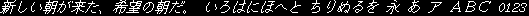

efontJA_14_i
efontJA · u8g2 · ja · 10839 chars

| flash | 425848 B |
| height | 14 |
| baseline | 12 |
| xAdvance | 24 |
| yAdvance | 14 |
| width | 24 |
| mono | True |
Unicode Blocks
| Basic Latin | 95 |
| Latin-1 Supplement | 93 |
| Latin Extended-A | 77 |
| Latin Extended-B | 15 |
| Other BMP | 562 |
| General Punctuation | 23 |
| CJK Symbols and Punctuation | 32 |
| Hiragana | 89 |
| Katakana | 94 |
| CJK Unified Ideographs Extension A | 164 |
| CJK Unified Ideographs | 9500 |
| Halfwidth and Fullwidth Forms | 95 |
Covered Characters
Use browser find to search this page. Control and space characters are shown as labels.
Basic Latin
[space]U+0020 !U+0021 "U+0022 #U+0023 $U+0024 %U+0025 &U+0026 'U+0027 (U+0028 )U+0029 *U+002A +U+002B ,U+002C -U+002D .U+002E /U+002F 0U+0030 1U+0031 2U+0032 3U+0033 4U+0034 5U+0035 6U+0036 7U+0037 8U+0038 9U+0039 :U+003A ;U+003B <U+003C =U+003D >U+003E ?U+003F @U+0040 AU+0041 BU+0042 CU+0043 DU+0044 EU+0045 FU+0046 GU+0047 HU+0048 IU+0049 JU+004A KU+004B LU+004C MU+004D NU+004E OU+004F PU+0050 QU+0051 RU+0052 SU+0053 TU+0054 UU+0055 VU+0056 WU+0057 XU+0058 YU+0059 ZU+005A [U+005B \U+005C ]U+005D ^U+005E _U+005F `U+0060 aU+0061 bU+0062 cU+0063 dU+0064 eU+0065 fU+0066 gU+0067 hU+0068 iU+0069 jU+006A kU+006B lU+006C mU+006D nU+006E oU+006F pU+0070 qU+0071 rU+0072 sU+0073 tU+0074 uU+0075 vU+0076 wU+0077 xU+0078 yU+0079 zU+007A {U+007B |U+007C }U+007D ~U+007E
Latin-1 Supplement
¡U+00A1 ¢U+00A2 £U+00A3 ¤U+00A4 ¥U+00A5 ¦U+00A6 §U+00A7 ¨U+00A8 ©U+00A9 ªU+00AA «U+00AB ¬U+00AC ®U+00AE ¯U+00AF °U+00B0 ±U+00B1 ²U+00B2 ³U+00B3 ´U+00B4 ¶U+00B6 ·U+00B7 ¸U+00B8 ¹U+00B9 ºU+00BA »U+00BB ¼U+00BC ½U+00BD ¾U+00BE ¿U+00BF ÀU+00C0 ÁU+00C1 ÂU+00C2 ÃU+00C3 ÄU+00C4 ÅU+00C5 ÆU+00C6 ÇU+00C7 ÈU+00C8 ÉU+00C9 ÊU+00CA ËU+00CB ÌU+00CC ÍU+00CD ÎU+00CE ÏU+00CF ÐU+00D0 ÑU+00D1 ÒU+00D2 ÓU+00D3 ÔU+00D4 ÕU+00D5 ÖU+00D6 ×U+00D7 ØU+00D8 ÙU+00D9 ÚU+00DA ÛU+00DB ÜU+00DC ÝU+00DD ÞU+00DE ßU+00DF àU+00E0 áU+00E1 âU+00E2 ãU+00E3 äU+00E4 åU+00E5 æU+00E6 çU+00E7 èU+00E8 éU+00E9 êU+00EA ëU+00EB ìU+00EC íU+00ED îU+00EE ïU+00EF ðU+00F0 ñU+00F1 òU+00F2 óU+00F3 ôU+00F4 õU+00F5 öU+00F6 ÷U+00F7 øU+00F8 ùU+00F9 úU+00FA ûU+00FB üU+00FC ýU+00FD þU+00FE ÿU+00FF
Latin Extended-A
ĀU+0100 āU+0101 ĂU+0102 ăU+0103 ĄU+0104 ąU+0105 ĆU+0106 ćU+0107 ĈU+0108 ĉU+0109 ČU+010C čU+010D ĎU+010E ďU+010F đU+0111 ĒU+0112 ēU+0113 ĘU+0118 ęU+0119 ĚU+011A ěU+011B ĜU+011C ĝU+011D ĤU+0124 ĥU+0125 ħU+0127 ĪU+012A īU+012B ĴU+0134 ĵU+0135 ĹU+0139 ĺU+013A ĽU+013D ľU+013E ŁU+0141 łU+0142 ŃU+0143 ńU+0144 ŇU+0147 ňU+0148 ŋU+014B ŌU+014C ōU+014D ŐU+0150 őU+0151 ŒU+0152 œU+0153 ŔU+0154 ŕU+0155 ŘU+0158 řU+0159 ŚU+015A śU+015B ŜU+015C ŝU+015D ŞU+015E şU+015F ŠU+0160 šU+0161 ŢU+0162 ţU+0163 ŤU+0164 ťU+0165 ŪU+016A ūU+016B ŬU+016C ŭU+016D ŮU+016E ůU+016F ŰU+0170 űU+0171 ŹU+0179 źU+017A ŻU+017B żU+017C ŽU+017D žU+017E
Latin Extended-B
ƓU+0193 ǂU+01C2 ǍU+01CD ǎU+01CE ǐU+01D0 ǑU+01D1 ǒU+01D2 ǔU+01D4 ǖU+01D6 ǘU+01D8 ǚU+01DA ǜU+01DC ǸU+01F8 ǹU+01F9 ǽU+01FD
Other BMP
ɐU+0250 ɑU+0251 ɒU+0252 ɓU+0253 ɔU+0254 ɕU+0255 ɖU+0256 ɗU+0257 ɘU+0258 əU+0259 ɚU+025A ɜU+025C ɞU+025E ɟU+025F ɠU+0260 ɡU+0261 ɤU+0264 ɥU+0265 ɦU+0266 ɧU+0267 ɨU+0268 ɬU+026C ɭU+026D ɮU+026E ɯU+026F ɰU+0270 ɱU+0271 ɲU+0272 ɳU+0273 ɵU+0275 ɹU+0279 ɺU+027A ɻU+027B ɽU+027D ɾU+027E ʁU+0281 ʂU+0282 ʃU+0283 ʄU+0284 ʈU+0288 ʉU+0289 ʊU+028A ʋU+028B ʌU+028C ʍU+028D ʎU+028E ʐU+0290 ʑU+0291 ʒU+0292 ʔU+0294 ʕU+0295 ʘU+0298 ʝU+029D ʡU+02A1 ʢU+02A2 ˇU+02C7 ˈU+02C8 ˉU+02C9 ˊU+02CA ˋU+02CB ˌU+02CC ːU+02D0 ˑU+02D1 ˘U+02D8 ˙U+02D9 ˛U+02DB ˝U+02DD ˞U+02DE ˥U+02E5 ˦U+02E6 ˧U+02E7 ˨U+02E8 ˩U+02E9 ̀U+0300 ́U+0301 ̂U+0302 ̃U+0303 ̄U+0304 ̆U+0306 ̈U+0308 ̋U+030B ̌U+030C ̏U+030F ̘U+0318 ̙U+0319 ̚U+031A ̜U+031C ̝U+031D ̞U+031E ̟U+031F ̠U+0320 ̤U+0324 ̥U+0325 ̩U+0329 ̪U+032A ̬U+032C ̯U+032F ̰U+0330 ̴U+0334 ̹U+0339 ̺U+033A ̻U+033B ̼U+033C ̽U+033D ͡U+0361 ΑU+0391 ΒU+0392 ΓU+0393 ΔU+0394 ΕU+0395 ΖU+0396 ΗU+0397 ΘU+0398 ΙU+0399 ΚU+039A ΛU+039B ΜU+039C ΝU+039D ΞU+039E ΟU+039F ΠU+03A0 ΡU+03A1 ΣU+03A3 ΤU+03A4 ΥU+03A5 ΦU+03A6 ΧU+03A7 ΨU+03A8 ΩU+03A9 αU+03B1 βU+03B2 γU+03B3 δU+03B4 εU+03B5 ζU+03B6 ηU+03B7 θU+03B8 ιU+03B9 κU+03BA λU+03BB μU+03BC νU+03BD ξU+03BE οU+03BF πU+03C0 ρU+03C1 ςU+03C2 σU+03C3 τU+03C4 υU+03C5 φU+03C6 χU+03C7 ψU+03C8 ωU+03C9 ЁU+0401 АU+0410 БU+0411 ВU+0412 ГU+0413 ДU+0414 ЕU+0415 ЖU+0416 ЗU+0417 ИU+0418 ЙU+0419 КU+041A ЛU+041B МU+041C НU+041D ОU+041E ПU+041F РU+0420 СU+0421 ТU+0422 УU+0423 ФU+0424 ХU+0425 ЦU+0426 ЧU+0427 ШU+0428 ЩU+0429 ЪU+042A ЫU+042B ЬU+042C ЭU+042D ЮU+042E ЯU+042F аU+0430 бU+0431 вU+0432 гU+0433 дU+0434 еU+0435 жU+0436 зU+0437 иU+0438 йU+0439 кU+043A лU+043B мU+043C нU+043D оU+043E пU+043F рU+0440 сU+0441 тU+0442 уU+0443 фU+0444 хU+0445 цU+0446 чU+0447 шU+0448 щU+0449 ъU+044A ыU+044B ьU+044C эU+044D юU+044E яU+044F ёU+0451 ḾU+1E3E ḿU+1E3F ὰU+1F70 άU+1F71 ὲU+1F72 έU+1F73 €U+20AC ℃U+2103 ℏU+210F ℓU+2113 №U+2116 ℡U+2121 ℧U+2127 ÅU+212B ℵU+2135 ⅓U+2153 ⅔U+2154 ⅕U+2155 ⅠU+2160 ⅡU+2161 ⅢU+2162 ⅣU+2163 ⅤU+2164 ⅥU+2165 ⅦU+2166 ⅧU+2167 ⅨU+2168 ⅩU+2169 ⅪU+216A ⅫU+216B ⅰU+2170 ⅱU+2171 ⅲU+2172 ⅳU+2173 ⅴU+2174 ⅵU+2175 ⅶU+2176 ⅷU+2177 ⅸU+2178 ⅹU+2179 ⅺU+217A ⅻU+217B ←U+2190 ↑U+2191 →U+2192 ↓U+2193 ↔U+2194 ↖U+2196 ↗U+2197 ↘U+2198 ↙U+2199 ⇄U+21C4 ⇒U+21D2 ⇔U+21D4 ⇦U+21E6 ⇧U+21E7 ⇨U+21E8 ⇩U+21E9 ∀U+2200 ∂U+2202 ∃U+2203 ∅U+2205 ∇U+2207 ∈U+2208 ∉U+2209 ∋U+220B −U+2212 ∓U+2213 √U+221A ∝U+221D ∞U+221E ∟U+221F ∠U+2220 ∥U+2225 ∦U+2226 ∧U+2227 ∨U+2228 ∩U+2229 ∪U+222A ∫U+222B ∬U+222C ∮U+222E ∴U+2234 ∵U+2235 ∽U+223D ≃U+2243 ≅U+2245 ≈U+2248 ≒U+2252 ≠U+2260 ≡U+2261 ≢U+2262 ≦U+2266 ≧U+2267 ≪U+226A ≫U+226B ≶U+2276 ≷U+2277 ⊂U+2282 ⊃U+2283 ⊄U+2284 ⊅U+2285 ⊆U+2286 ⊇U+2287 ⊊U+228A ⊋U+228B ⊕U+2295 ⊖U+2296 ⊗U+2297 ⊥U+22A5 ⊿U+22BF ⋚U+22DA ⋛U+22DB ⌅U+2305 ⌆U+2306 ⌒U+2312 ⌘U+2318 ␣U+2423 ①U+2460 ②U+2461 ③U+2462 ④U+2463 ⑤U+2464 ⑥U+2465 ⑦U+2466 ⑧U+2467 ⑨U+2468 ⑩U+2469 ⑪U+246A ⑫U+246B ⑬U+246C ⑭U+246D ⑮U+246E ⑯U+246F ⑰U+2470 ⑱U+2471 ⑲U+2472 ⑳U+2473 ⓐU+24D0 ⓑU+24D1 ⓒU+24D2 ⓓU+24D3 ⓔU+24D4 ⓕU+24D5 ⓖU+24D6 ⓗU+24D7 ⓘU+24D8 ⓙU+24D9 ⓚU+24DA ⓛU+24DB ⓜU+24DC ⓝU+24DD ⓞU+24DE ⓟU+24DF ⓠU+24E0 ⓡU+24E1 ⓢU+24E2 ⓣU+24E3 ⓤU+24E4 ⓥU+24E5 ⓦU+24E6 ⓧU+24E7 ⓨU+24E8 ⓩU+24E9 ─U+2500 ━U+2501 │U+2502 ┃U+2503 ┌U+250C ┏U+250F ┐U+2510 ┓U+2513 └U+2514 ┗U+2517 ┘U+2518 ┛U+251B ├U+251C ┝U+251D ┠U+2520 ┣U+2523 ┤U+2524 ┥U+2525 ┨U+2528 ┫U+252B ┬U+252C ┯U+252F ┰U+2530 ┳U+2533 ┴U+2534 ┷U+2537 ┸U+2538 ┻U+253B ┼U+253C ┿U+253F ╂U+2542 ╋U+254B ■U+25A0 □U+25A1 ▱U+25B1 ▲U+25B2 △U+25B3 ▶U+25B6 ▷U+25B7 ▼U+25BC ▽U+25BD ◀U+25C0 ◁U+25C1 ◆U+25C6 ◇U+25C7 ◉U+25C9 ○U+25CB ◎U+25CE ●U+25CF ◐U+25D0 ◑U+25D1 ◒U+25D2 ◓U+25D3 ◦U+25E6 ◯U+25EF ☀U+2600 ☁U+2601 ☂U+2602 ☃U+2603 ★U+2605 ☆U+2606 ☎U+260E ☞U+261E ♀U+2640 ♂U+2642 ♠U+2660 ♡U+2661 ♢U+2662 ♣U+2663 ♤U+2664 ♥U+2665 ♦U+2666 ♧U+2667 ♨U+2668 ♩U+2669 ♪U+266A ♫U+266B ♬U+266C ♭U+266D ♮U+266E ♯U+266F ✓U+2713 ❖U+2756 ❶U+2776 ❷U+2777 ❸U+2778 ❹U+2779 ❺U+277A ❻U+277B ❼U+277C ❽U+277D ❾U+277E ❿U+277F ㈱U+3231 ㈲U+3232 ㈹U+3239 ㊤U+32A4 ㊥U+32A5 ㊦U+32A6 ㊧U+32A7 ㊨U+32A8 ㋐U+32D0 ㋑U+32D1 ㋒U+32D2 ㋓U+32D3 ㋔U+32D4 ㋕U+32D5 ㋖U+32D6 ㋗U+32D7 ㋘U+32D8 ㋙U+32D9 ㋚U+32DA ㋛U+32DB ㋜U+32DC ㋝U+32DD ㋞U+32DE ㋟U+32DF ㋠U+32E0 ㋡U+32E1 ㋢U+32E2 ㋣U+32E3 ㋥U+32E5 ㋩U+32E9 ㋬U+32EC ㋭U+32ED ㋺U+32FA ㌃U+3303 ㌍U+330D ㌔U+3314 ㌘U+3318 ㌢U+3322 ㌣U+3323 ㌦U+3326 ㌧U+3327 ㌫U+332B ㌶U+3336 ㌻U+333B ㍉U+3349 ㍊U+334A ㍍U+334D ㍑U+3351 ㍗U+3357 ㍻U+337B ㍼U+337C ㍽U+337D ㍾U+337E ㎎U+338E ㎏U+338F ㎜U+339C ㎝U+339D ㎞U+339E ㎡U+33A1 ㏄U+33C4 ㏋U+33CB ㏍U+33CD 欄U+F91D 廊U+F928 朗U+F929 虜U+F936 殺U+F970 類U+F9D0 隆U+F9DC 﨏U+FA0F 塚U+FA10 﨑U+FA11 﨓U+FA13 﨔U+FA14 凞U+FA15 猪U+FA16 神U+FA19 祥U+FA1A 福U+FA1B 﨟U+FA1F 蘒U+FA20 﨡U+FA21 諸U+FA22 﨤U+FA24 都U+FA26
General Punctuation
‐U+2010 –U+2013 —U+2014 ‖U+2016 ‘U+2018 ’U+2019 “U+201C ”U+201D †U+2020 ‡U+2021 •U+2022 ‥U+2025 …U+2026 ‰U+2030 ′U+2032 ″U+2033 ※U+203B ‼U+203C ‾U+203E ‿U+203F ⁂U+2042 ⁈U+2048 ⁉U+2049
CJK Symbols and Punctuation
[ideographic space]U+3000 、U+3001 。U+3002 〃U+3003 々U+3005 〆U+3006 〇U+3007 〈U+3008 〉U+3009 《U+300A 》U+300B 「U+300C 」U+300D 『U+300E 』U+300F 【U+3010 】U+3011 〒U+3012 〓U+3013 〔U+3014 〕U+3015 〖U+3016 〗U+3017 〘U+3018 〙U+3019 〜U+301C 〝U+301D 〟U+301F 〠U+3020 〳U+3033 〴U+3034 〵U+3035
Hiragana
ぁU+3041 あU+3042 ぃU+3043 いU+3044 ぅU+3045 うU+3046 ぇU+3047 えU+3048 ぉU+3049 おU+304A かU+304B がU+304C きU+304D ぎU+304E くU+304F ぐU+3050 けU+3051 げU+3052 こU+3053 ごU+3054 さU+3055 ざU+3056 しU+3057 じU+3058 すU+3059 ずU+305A せU+305B ぜU+305C そU+305D ぞU+305E たU+305F だU+3060 ちU+3061 ぢU+3062 っU+3063 つU+3064 づU+3065 てU+3066 でU+3067 とU+3068 どU+3069 なU+306A にU+306B ぬU+306C ねU+306D のU+306E はU+306F ばU+3070 ぱU+3071 ひU+3072 びU+3073 ぴU+3074 ふU+3075 ぶU+3076 ぷU+3077 へU+3078 べU+3079 ぺU+307A ほU+307B ぼU+307C ぽU+307D まU+307E みU+307F むU+3080 めU+3081 もU+3082 ゃU+3083 やU+3084 ゅU+3085 ゆU+3086 ょU+3087 よU+3088 らU+3089 りU+308A るU+308B れU+308C ろU+308D ゎU+308E わU+308F ゐU+3090 ゑU+3091 をU+3092 んU+3093 ゔU+3094 ゚U+309A ゛U+309B ゜U+309C ゝU+309D ゞU+309E
Katakana
ァU+30A1 アU+30A2 ィU+30A3 イU+30A4 ゥU+30A5 ウU+30A6 ェU+30A7 エU+30A8 ォU+30A9 オU+30AA カU+30AB ガU+30AC キU+30AD ギU+30AE クU+30AF グU+30B0 ケU+30B1 ゲU+30B2 コU+30B3 ゴU+30B4 サU+30B5 ザU+30B6 シU+30B7 ジU+30B8 スU+30B9 ズU+30BA セU+30BB ゼU+30BC ソU+30BD ゾU+30BE タU+30BF ダU+30C0 チU+30C1 ヂU+30C2 ッU+30C3 ツU+30C4 ヅU+30C5 テU+30C6 デU+30C7 トU+30C8 ドU+30C9 ナU+30CA ニU+30CB ヌU+30CC ネU+30CD ノU+30CE ハU+30CF バU+30D0 パU+30D1 ヒU+30D2 ビU+30D3 ピU+30D4 フU+30D5 ブU+30D6 プU+30D7 ヘU+30D8 ベU+30D9 ペU+30DA ホU+30DB ボU+30DC ポU+30DD マU+30DE ミU+30DF ムU+30E0 メU+30E1 モU+30E2 ャU+30E3 ヤU+30E4 ュU+30E5 ユU+30E6 ョU+30E7 ヨU+30E8 ラU+30E9 リU+30EA ルU+30EB レU+30EC ロU+30ED ヮU+30EE ワU+30EF ヰU+30F0 ヱU+30F1 ヲU+30F2 ンU+30F3 ヴU+30F4 ヵU+30F5 ヶU+30F6 ヷU+30F7 ヸU+30F8 ヹU+30F9 ヺU+30FA ・U+30FB ーU+30FC ヽU+30FD ヾU+30FE
CJK Unified Ideographs Extension A
㐂U+3402 㐆U+3406 㐬U+342C 㐮U+342E 㑨U+3468 㑪U+346A 㒒U+3492 㒵U+34B5 㒼U+34BC 㓁U+34C1 㓇U+34C7 㓛U+34DB 㔟U+351F 㕝U+355D 㕞U+355E 㕣U+3563 㕮U+356E 㖦U+35A6 㖨U+35A8 㗅U+35C5 㗚U+35DA 㗴U+35F4 㘅U+3605 㙊U+364A 㚑U+3691 㚖U+3696 㚙U+3699 㛏U+36CF 㝡U+3761 㝢U+3762 㝫U+376B 㝬U+376C 㝵U+3775 㞍U+378D 㟁U+37C1 㟢U+37E2 㟨U+37E8 㟴U+37F4 㟽U+37FD 㠀U+3800 㠯U+382F 㠶U+3836 㡀U+3840 㡜U+385C 㡡U+3861 㣺U+38FA 㤗U+3917 㤚U+391A 㥯U+396F 㩮U+3A6E 㩳U+3A73 㫖U+3AD6 㫗U+3AD7 㫪U+3AEA 㬎U+3B0E 㬚U+3B1A 㬜U+3B1C 㬢U+3B22 㭭U+3B6D 㭷U+3B77 㮇U+3B87 㮈U+3B88 㮍U+3B8D 㮤U+3BA4 㮶U+3BB6 㯃U+3BC3 㯍U+3BCD 㯰U+3BF0 㰏U+3C0F 㰦U+3C26 㳃U+3CC3 㳒U+3CD2 㴑U+3D11 㴞U+3D1E 㵤U+3D64 㶚U+3D9A 㷀U+3DC0 㷔U+3DD4 㸅U+3E05 㸿U+3E3F 㹠U+3E60 㹦U+3E66 㹨U+3E68 㺃U+3E83 㺔U+3E94 㽗U+3F57 㽲U+3F72 㽵U+3F75 㽷U+3F77 㾮U+3FAE 㿉U+3FC9 㿗U+3FD7 䀹U+4039 䁘U+4058 䂓U+4093 䄅U+4105 䅈U+4148 䅏U+414F 䅣U+4163 䆴U+41B4 䆿U+41BF 䇦U+41E6 䇮U+41EE 䇳U+41F3 䈇U+4207 䈎U+420E 䉤U+4264 䋆U+42C6 䋖U+42D6 䋝U+42DD 䌂U+4302 䌫U+432B 䍃U+4343 䏮U+43EE 䏰U+43F0 䐈U+4408 䐗U+4417 䐜U+441C 䐢U+4422 䑓U+4453 䑛U+445B 䑶U+4476 䑺U+447A 䒑U+4491 䒳U+44B3 䒾U+44BE 䓔U+44D4 䔈U+4508 䔍U+450D 䔥U+4525 䕃U+4543 䖝U+459D 䖸U+45B8 䗥U+45E5 䗪U+45EA 䘏U+460F 䙁U+4641 䙥U+4665 䚡U+46A1 䚯U+46AF 䜌U+470C 䝤U+4764 䟽U+47FD 䠖U+4816 䡄U+4844 䡎U+484E 䢵U+48B5 䦰U+49B0 䧧U+49E7 䧺U+49FA 䨄U+4A04 䨩U+4A29 䪼U+4ABC 䬻U+4B3B 䯂U+4BC2 䯊U+4BCA 䯒U+4BD2 䯨U+4BE8 䰗U+4C17 䰠U+4C20 䳄U+4CC4 䳑U+4CD1 䴇U+4D07 䵷U+4D77
CJK Unified Ideographs
一U+4E00 丁U+4E01 丂U+4E02 七U+4E03 万U+4E07 丈U+4E08 三U+4E09 上U+4E0A 下U+4E0B 不U+4E0D 与U+4E0E 丏U+4E0F 丐U+4E10 丑U+4E11 丒U+4E12 且U+4E14 丕U+4E15 世U+4E16 丗U+4E17 丘U+4E18 丙U+4E19 丞U+4E1E 両U+4E21 並U+4E26 丨U+4E28 丩U+4E29 个U+4E2A 丫U+4E2B 丬U+4E2C 中U+4E2D 丮U+4E2E 丯U+4E2F 丰U+4E30 丱U+4E31 串U+4E32 丶U+4E36 丸U+4E38 丹U+4E39 主U+4E3B 丼U+4E3C 丿U+4E3F 乀U+4E40 乂U+4E42 乃U+4E43 久U+4E45 乇U+4E47 么U+4E48 之U+4E4B 乍U+4E4D 乎U+4E4E 乏U+4E4F 乑U+4E51 乕U+4E55 乖U+4E56 乗U+4E57 乘U+4E58 乙U+4E59 乚U+4E5A 九U+4E5D 乞U+4E5E 也U+4E5F 乢U+4E62 乩U+4E69 乱U+4E71 乳U+4E73 乾U+4E7E 亀U+4E80 亂U+4E82 亅U+4E85 了U+4E86 予U+4E88 争U+4E89 亊U+4E8A 事U+4E8B 二U+4E8C 亍U+4E8D 于U+4E8E 云U+4E91 互U+4E92 五U+4E94 井U+4E95 亘U+4E98 亙U+4E99 些U+4E9B 亜U+4E9C 亝U+4E9D 亞U+4E9E 亟U+4E9F 亠U+4EA0 亡U+4EA1 亢U+4EA2 交U+4EA4 亥U+4EA5 亦U+4EA6 亨U+4EA8 享U+4EAB 京U+4EAC 亭U+4EAD 亮U+4EAE 亰U+4EB0 亳U+4EB3 亶U+4EB6 亹U+4EB9 人U+4EBA 亻U+4EBB 亼U+4EBC 什U+4EC0 仁U+4EC1 仂U+4EC2 仃U+4EC3 仄U+4EC4 仆U+4EC6 仇U+4EC7 仈U+4EC8 今U+4ECA 介U+4ECB 仍U+4ECD 从U+4ECE 仏U+4ECF 仐U+4ED0 仔U+4ED4 仕U+4ED5 他U+4ED6 仗U+4ED7 付U+4ED8 仙U+4ED9 仚U+4EDA 仝U+4EDD 仞U+4EDE 仟U+4EDF 仡U+4EE1 代U+4EE3 令U+4EE4 以U+4EE5 仫U+4EEB 仭U+4EED 仮U+4EEE 仰U+4EF0 仱U+4EF1 仲U+4EF2 仵U+4EF5 件U+4EF6 价U+4EF7 任U+4EFB 份U+4EFD 仿U+4EFF 伀U+4F00 企U+4F01 伃U+4F03 伉U+4F09 伊U+4F0A 伋U+4F0B 伍U+4F0D 伎U+4F0E 伏U+4F0F 伐U+4F10 休U+4F11 伖U+4F16 会U+4F1A 伜U+4F1C 伝U+4F1D 伯U+4F2F 估U+4F30 伴U+4F34 伶U+4F36 伷U+4F37 伸U+4F38 伺U+4F3A 似U+4F3C 伽U+4F3D 伾U+4F3E 佃U+4F43 但U+4F46 佇U+4F47 佈U+4F48 佉U+4F49 位U+4F4D 低U+4F4E 住U+4F4F 佐U+4F50 佑U+4F51 体U+4F53 佔U+4F54 何U+4F55 佖U+4F56 佗U+4F57 佘U+4F58 余U+4F59 佚U+4F5A 佛U+4F5B 作U+4F5C 佝U+4F5D 佞U+4F5E 佟U+4F5F 你U+4F60 佤U+4F64 佩U+4F69 佪U+4F6A 佬U+4F6C 佯U+4F6F 佰U+4F70 佳U+4F73 併U+4F75 佶U+4F76 佷U+4F77 佸U+4F78 佺U+4F7A 佻U+4F7B 佼U+4F7C 佽U+4F7D 佾U+4F7E 使U+4F7F 侂U+4F82 侃U+4F83 侅U+4F85 來U+4F86 侈U+4F88 侊U+4F8A 例U+4F8B 侍U+4F8D 侏U+4F8F 侑U+4F91 侒U+4F92 侔U+4F94 侖U+4F96 侗U+4F97 侘U+4F98 侚U+4F9A 供U+4F9B 依U+4F9D 侠U+4FA0 価U+4FA1 侫U+4FAB 侭U+4FAD 侮U+4FAE 侯U+4FAF 侲U+4FB2 侵U+4FB5 侶U+4FB6 侾U+4FBE 便U+4FBF 係U+4FC2 促U+4FC3 俄U+4FC4 俅U+4FC5 俉U+4FC9 俊U+4FCA 俋U+4FCB 俎U+4FCE 俏U+4FCF 俐U+4FD0 俑U+4FD1 俒U+4FD2 俔U+4FD4 俗U+4FD7 俘U+4FD8 俚U+4FDA 俛U+4FDB 保U+4FDD 俟U+4FDF 俠U+4FE0 信U+4FE1 俣U+4FE3 俤U+4FE4 俥U+4FE5 俦U+4FE6 修U+4FEE 俯U+4FEF 俱U+4FF1 俲U+4FF2 俳U+4FF3 俵U+4FF5 俶U+4FF6 俸U+4FF8 俺U+4FFA 俾U+4FFE 倀U+5000 倁U+5001 倂U+5002 倅U+5005 倆U+5006 倉U+5009 個U+500B 倍U+500D 倎U+500E 倏U+500F 倐U+5010 們U+5011 倒U+5012 倓U+5013 倔U+5014 倖U+5016 倘U+5018 候U+5019 倚U+501A 倜U+501C 倞U+501E 借U+501F 倡U+5021 倢U+5022 倣U+5023 値U+5024 倥U+5025 倦U+5026 倧U+5027 倨U+5028 倩U+5029 倪U+502A 倫U+502B 倬U+502C 倭U+502D 倮U+502E 倶U+5036 倹U+5039 倻U+503B 偀U+5040 偁U+5041 偂U+5042 偃U+5043 偆U+5046 假U+5047 偈U+5048 偉U+5049 偎U+504E 偏U+504F 偐U+5050 偓U+5053 偕U+5055 偖U+5056 偗U+5057 做U+505A 停U+505C 偣U+5063 健U+5065 偦U+5066 偪U+506A 偬U+506C 偰U+5070 偲U+5072 側U+5074 偵U+5075 偶U+5076 偸U+5078 偽U+507D 傀U+5080 傅U+5085 傈U+5088 傍U+508D 傑U+5091 傒U+5092 傓U+5093 傔U+5094 傕U+5095 傖U+5096 傘U+5098 備U+5099 傚U+509A 傜U+509C 傣U+50A3 傪U+50AA 催U+50AC 傭U+50AD 傱U+50B1 傲U+50B2 傳U+50B3 傴U+50B4 債U+50B5 傷U+50B7 傺U+50BA 傻U+50BB 傾U+50BE 僂U+50C2 僄U+50C4 僅U+50C5 僇U+50C7 僉U+50C9 僊U+50CA 僌U+50CC 働U+50CD 僎U+50CE 像U+50CF 僐U+50D0 僑U+50D1 僔U+50D4 僕U+50D5 僖U+50D6 僙U+50D9 僚U+50DA 僞U+50DE 僡U+50E1 僣U+50E3 僥U+50E5 僦U+50E6 僧U+50E7 僩U+50E9 僭U+50ED 僮U+50EE 僲U+50F2 僳U+50F3 僵U+50F5 價U+50F9 僻U+50FB 儀U+5100 儁U+5101 儂U+5102 儃U+5103 億U+5104 儆U+5106 儈U+5108 儉U+5109 儋U+510B 儒U+5112 儔U+5114 儕U+5115 儖U+5116 儗U+5117 儘U+5118 儚U+511A 儛U+511B 儞U+511E 償U+511F 儡U+5121 優U+512A 儲U+5132 儵U+5135 儷U+5137 儺U+513A 儻U+513B 儼U+513C 儿U+513F 兀U+5140 允U+5141 元U+5143 兄U+5144 充U+5145 兆U+5146 兇U+5147 先U+5148 光U+5149 兊U+514A 克U+514B 兌U+514C 免U+514D 兎U+514E 児U+5150 兒U+5152 兔U+5154 兕U+5155 兗U+5157 党U+515A 兜U+515C 兠U+5160 兢U+5162 入U+5165 全U+5168 兩U+5169 兪U+516A 八U+516B 公U+516C 六U+516D 兮U+516E 共U+5171 关U+5173 兵U+5175 其U+5176 具U+5177 典U+5178 养U+517B 兼U+517C 冀U+5180 冂U+5182 冃U+5183 内U+5185 円U+5186 冉U+5189 冊U+518A 冋U+518B 册U+518C 再U+518D 冏U+518F 冐U+5190 冑U+5191 冒U+5192 冓U+5193 冕U+5195 冖U+5196 冗U+5197 冘U+5198 写U+5199 冝U+519D 冠U+51A0 冢U+51A2 冣U+51A3 冤U+51A4 冥U+51A5 冦U+51A6 冨U+51A8 冩U+51A9 冪U+51AA 冫U+51AB 冬U+51AC 冭U+51AD 冰U+51B0 冱U+51B1 冲U+51B2 决U+51B3 冴U+51B4 况U+51B5 冶U+51B6 冷U+51B7 冼U+51BC 冽U+51BD 凃U+51C3 凄U+51C4 凅U+51C5 准U+51C6 凉U+51C9 凊U+51CA 凋U+51CB 凌U+51CC 凍U+51CD 凖U+51D6 凛U+51DB 凜U+51DC 凝U+51DD 凞U+51DE 几U+51E0 凡U+51E1 凢U+51E2 処U+51E6 凧U+51E7 凩U+51E9 凪U+51EA 凭U+51ED 凮U+51EE 凰U+51F0 凱U+51F1 凳U+51F3 凴U+51F4 凵U+51F5 凶U+51F6 凸U+51F8 凹U+51F9 出U+51FA 函U+51FD 凾U+51FE 刀U+5200 刁U+5201 刂U+5202 刃U+5203 刄U+5204 分U+5206 切U+5207 刈U+5208 刊U+520A 刋U+520B 刎U+520E 刑U+5211 划U+5212 刓U+5213 刔U+5214 刕U+5215 刖U+5216 列U+5217 初U+521D 判U+5224 別U+5225 刧U+5227 利U+5229 刪U+522A 刮U+522E 到U+5230 刳U+5233 制U+5236 刷U+5237 券U+5238 刹U+5239 刺U+523A 刻U+523B 剃U+5243 剄U+5244 則U+5247 剉U+5249 削U+524A 剋U+524B 剌U+524C 前U+524D 剏U+524F 剔U+5254 剕U+5255 剖U+5256 剗U+5257 剛U+525B 剜U+525C 剝U+525D 剞U+525E 剡U+5261 剣U+5263 剤U+5264 剥U+5265 剩U+5269 剪U+526A 剬U+526C 副U+526F 剰U+5270 剱U+5271 割U+5272 剳U+5273 剴U+5274 創U+5275 剷U+5277 剽U+527D 剿U+527F 劂U+5282 劃U+5283 劄U+5284 劇U+5287 劈U+5288 劉U+5289 劍U+528D 劑U+5291 劒U+5292 劓U+5293 劔U+5294 劘U+5298 力U+529B 功U+529F 加U+52A0 劣U+52A3 劤U+52A4 劦U+52A6 助U+52A9 努U+52AA 劫U+52AB 劬U+52AC 劭U+52AD 劯U+52AF 励U+52B1 労U+52B4 劵U+52B5 効U+52B9 劺U+52BA 劻U+52BB 劼U+52BC 劾U+52BE 勁U+52C1 勃U+52C3 勅U+52C5 勇U+52C7 勈U+52C8 勉U+52C9 勊U+52CA 勌U+52CC 勍U+52CD 勐U+52D0 勑U+52D1 勒U+52D2 動U+52D5 勖U+52D6 勗U+52D7 勘U+52D8 務U+52D9 勛U+52DB 勝U+52DD 勞U+52DE 募U+52DF 勠U+52E0 勢U+52E2 勣U+52E3 勤U+52E4 勦U+52E6 勧U+52E7 勰U+52F0 勲U+52F2 勳U+52F3 勵U+52F5 勷U+52F7 勸U+52F8 勹U+52F9 勺U+52FA 勻U+52FB 勾U+52FE 勿U+52FF 匀U+5300 匁U+5301 匂U+5302 包U+5305 匆U+5306 匇U+5307 匈U+5308 匊U+530A 匋U+530B 匍U+530D 匏U+530F 匐U+5310 匕U+5315 化U+5316 北U+5317 匙U+5319 匚U+531A 匜U+531C 匝U+531D 匠U+5320 匡U+5321 匣U+5323 匤U+5324 匪U+532A 匯U+532F 匱U+5331 匳U+5333 匵U+5335 匸U+5338 匹U+5339 区U+533A 医U+533B 匾U+533E 匿U+533F 區U+5340 十U+5341 卂U+5342 千U+5343 卅U+5345 卆U+5346 升U+5347 午U+5348 卉U+5349 半U+534A 卍U+534D 卑U+5351 卒U+5352 卓U+5353 協U+5354 南U+5357 単U+5358 博U+535A 卜U+535C 卞U+535E 占U+5360 卡U+5361 卣U+5363 卦U+5366 卧U+5367 卩U+5369 卬U+536C 卮U+536E 卯U+536F 印U+5370 危U+5371 即U+5373 却U+5374 卵U+5375 卷U+5377 卸U+5378 卺U+537A 卻U+537B 卽U+537D 卿U+537F 厂U+5382 厄U+5384 厓U+5393 厖U+5396 厘U+5398 厚U+539A 厝U+539D 原U+539F 厠U+53A0 厤U+53A4 厥U+53A5 厦U+53A6 厨U+53A8 厩U+53A9 厭U+53AD 厮U+53AE 厰U+53B0 厲U+53B2 厳U+53B3 厴U+53B4 厶U+53B6 厷U+53B7 去U+53BB 叀U+53C0 参U+53C2 參U+53C3 又U+53C8 叉U+53C9 及U+53CA 友U+53CB 双U+53CC 反U+53CD 収U+53CE 叔U+53D4 叕U+53D5 取U+53D6 受U+53D7 叙U+53D9 叚U+53DA 叛U+53DB 叟U+53DF 叡U+53E1 叢U+53E2 口U+53E3 古U+53E4 句U+53E5 叨U+53E8 叩U+53E9 只U+53EA 叫U+53EB 召U+53EC 叭U+53ED 叮U+53EE 可U+53EF 台U+53F0 叱U+53F1 史U+53F2 右U+53F3 叴U+53F4 叵U+53F5 叶U+53F6 号U+53F7 司U+53F8 叺U+53FA 吁U+5401 吃U+5403 各U+5404 合U+5408 吉U+5409 吊U+540A 吋U+540B 同U+540C 名U+540D 后U+540E 吏U+540F 吐U+5410 向U+5411 吒U+5412 君U+541B 吝U+541D 吞U+541E 吟U+541F 吠U+5420 吤U+5424 否U+5426 吧U+5427 吨U+5428 吩U+5429 含U+542B 听U+542C 吭U+542D 吮U+542E 吶U+5436 吸U+5438 吹U+5439 吻U+543B 吼U+543C 吽U+543D 吾U+543E 呀U+5440 呂U+5442 呃U+5443 呆U+5446 呈U+5448 呉U+5449 告U+544A 呍U+544D 呎U+544E 呑U+5451 呕U+5455 呟U+545F 呢U+5462 呦U+5466 周U+5468 呪U+546A 呫U+546B 呬U+546C 呰U+5470 呱U+5471 味U+5473 呴U+5474 呵U+5475 呶U+5476 呷U+5477 呻U+547B 呼U+547C 命U+547D 呿U+547F 咀U+5480 咄U+5484 咆U+5486 咈U+5488 咊U+548A 咋U+548B 和U+548C 咍U+548D 咎U+548E 咏U+548F 咐U+5490 咒U+5492 咕U+5495 咖U+5496 咜U+549C 咠U+54A0 咡U+54A1 咢U+54A2 咤U+54A4 咥U+54A5 咦U+54A6 咨U+54A8 咩U+54A9 咫U+54AB 咬U+54AC 咭U+54AD 咮U+54AE 咯U+54AF 咲U+54B2 咳U+54B3 咷U+54B7 咸U+54B8 咺U+54BA 咼U+54BC 咽U+54BD 咾U+54BE 咿U+54BF 哀U+54C0 品U+54C1 哂U+54C2 哃U+54C3 哄U+54C4 哆U+54C6 哇U+54C7 哈U+54C8 哉U+54C9 哘U+54D8 員U+54E1 哢U+54E2 哥U+54E5 哦U+54E6 哨U+54E8 哩U+54E9 哬U+54EC 哭U+54ED 哮U+54EE 哯U+54EF 哱U+54F1 哲U+54F2 哳U+54F3 哺U+54FA 哽U+54FD 哿U+54FF 唀U+5500 唁U+5501 唄U+5504 唆U+5506 唇U+5507 唉U+5509 唎U+550E 唏U+550F 唐U+5510 唔U+5514 唖U+5516 唫U+552B 售U+552E 唯U+552F 唱U+5531 唳U+5533 唵U+5535 唸U+5538 唹U+5539 唼U+553C 唾U+553E 啀U+5540 啁U+5541 啄U+5544 啅U+5545 商U+5546 啇U+5547 啊U+554A 啌U+554C 問U+554F 啐U+5550 啓U+5553 啖U+5556 啗U+5557 啜U+555C 啝U+555D 啞U+555E 啠U+5560 啡U+5561 啣U+5563 啤U+5564 啻U+557B 啼U+557C 啽U+557D 啾U+557E 喀U+5580 喁U+5581 喂U+5582 喃U+5583 善U+5584 喆U+5586 喇U+5587 喈U+5588 喉U+5589 喊U+558A 喋U+558B 喎U+558E 喑U+5591 喘U+5598 喙U+5599 喚U+559A 喜U+559C 喝U+559D 喞U+559E 喟U+559F 喧U+55A7 喨U+55A8 喩U+55A9 喪U+55AA 喫U+55AB 喬U+55AC 喭U+55AD 單U+55AE 喰U+55B0 営U+55B6 喿U+55BF 嗄U+55C4 嗅U+55C5 嗇U+55C7 嗉U+55C9 嗌U+55CC 嗎U+55CE 嗑U+55D1 嗒U+55D2 嗔U+55D4 嗚U+55DA 嗜U+55DC 嗝U+55DD 嗟U+55DF 嗢U+55E2 嗣U+55E3 嗤U+55E4 嗩U+55E9 嗷U+55F7 嗹U+55F9 嗽U+55FD 嗾U+55FE 嘆U+5606 嘇U+5607 嘈U+5608 嘉U+5609 嘎U+560E 嘐U+5610 嘔U+5614 嘖U+5616 嘗U+5617 嘘U+5618 嘛U+561B 嘨U+5628 嘩U+5629 嘯U+562F 嘰U+5630 嘱U+5631 嘲U+5632 嘴U+5634 嘶U+5636 嘷U+5637 嘸U+5638 嘻U+563B 嘽U+563D 嘿U+563F 噀U+5640 噂U+5642 噇U+5647 噉U+5649 噌U+564C 噎U+564E 噐U+5650 噓U+5653 噛U+565B 噞U+565E 噠U+5660 噤U+5664 噦U+5666 器U+5668 噪U+566A 噫U+566B 噬U+566C 噭U+566D 噯U+566F 噱U+5671 噲U+5672 噴U+5674 噶U+5676 噸U+5678 噺U+567A 嚀U+5680 嚆U+5686 嚇U+5687 嚈U+5688 嚊U+568A 嚌U+568C 嚏U+568F 嚔U+5694 嚕U+5695 嚙U+5699 嚚U+569A 嚝U+569D 嚞U+569E 嚠U+56A0 嚢U+56A2 嚥U+56A5 嚨U+56A8 嚩U+56A9 嚬U+56AC 嚭U+56AD 嚮U+56AE 嚲U+56B2 嚳U+56B3 嚴U+56B4 嚶U+56B6 嚼U+56BC 囀U+56C0 囁U+56C1 囂U+56C2 囃U+56C3 囅U+56C5 囈U+56C8 囉U+56C9 囊U+56CA 囍U+56CD 囎U+56CE 囑U+56D1 囓U+56D3 囗U+56D7 囘U+56D8 囚U+56DA 四U+56DB 回U+56DE 囟U+56DF 因U+56E0 団U+56E3 囨U+56E8 囮U+56EE 困U+56F0 囲U+56F2 図U+56F3 囶U+56F6 囷U+56F7 囹U+56F9 固U+56FA 国U+56FD 囿U+56FF 圀U+5700 圃U+5703 圄U+5704 圈U+5708 圉U+5709 圊U+570A 國U+570B 圍U+570D 圏U+570F 園U+5712 圓U+5713 圕U+5715 圖U+5716 團U+5718 圜U+571C 土U+571F 圡U+5721 圣U+5723 圦U+5726 圧U+5727 在U+5728 圩U+5729 圭U+572D 圯U+572F 地U+5730 圳U+5733 圴U+5734 圷U+5737 圸U+5738 圻U+573B 址U+5740 坂U+5742 坅U+5745 坆U+5746 均U+5747 坊U+574A 坌U+574C 坍U+574D 坎U+574E 坏U+574F 坐U+5750 坑U+5751 坡U+5761 坤U+5764 坦U+5766 坨U+5768 坩U+5769 坪U+576A 坯U+576F 坰U+5770 坳U+5773 坴U+5774 坵U+5775 坷U+5777 坻U+577B 坼U+577C 坿U+577F 垂U+5782 垈U+5788 垉U+5789 型U+578B 垓U+5793 垚U+579A 垜U+579C 垝U+579D 垞U+579E 垠U+57A0 垢U+57A2 垣U+57A3 垤U+57A4 垨U+57A8 垪U+57AA 垬U+57AC 垰U+57B0 垳U+57B3 垸U+57B8 埀U+57C0 埃U+57C3 埆U+57C6 埇U+57C7 埈U+57C8 埋U+57CB 埌U+57CC 城U+57CE 埏U+57CF 埒U+57D2 埓U+57D3 埔U+57D4 埖U+57D6 埗U+57D7 埜U+57DC 埞U+57DE 域U+57DF 埠U+57E0 埣U+57E3 埤U+57E4 埦U+57E6 埭U+57ED 埰U+57F0 埴U+57F4 埵U+57F5 埶U+57F6 執U+57F7 埸U+57F8 培U+57F9 基U+57FA 埻U+57FB 埼U+57FC 埽U+57FD 埿U+57FF 堀U+5800 堂U+5802 堄U+5804 堅U+5805 堆U+5806 堉U+5809 堊U+580A 堋U+580B 堕U+5815 堙U+5819 堝U+581D 堞U+581E 堠U+5820 堡U+5821 堤U+5824 堧U+5827 堪U+582A 堯U+582F 堰U+5830 報U+5831 堲U+5832 場U+5834 堵U+5835 堹U+5839 堺U+583A 堽U+583D 塀U+5840 塁U+5841 塉U+5849 塊U+584A 塋U+584B 塌U+584C 塑U+5851 塒U+5852 塔U+5854 塗U+5857 塘U+5858 塙U+5859 塚U+585A 塞U+585E 塡U+5861 塢U+5862 塤U+5864 塧U+5867 塩U+5869 填U+586B 塰U+5870 塲U+5872 塵U+5875 塹U+5879 塼U+587C 塾U+587E 境U+5883 墅U+5885 墉U+5889 墊U+588A 墋U+588B 墍U+588D 墏U+588F 墐U+5890 墓U+5893 墔U+5894 増U+5897 墜U+589C 墝U+589D 增U+589E 墟U+589F 墨U+58A8 墩U+58A9 墪U+58AA 墫U+58AB 墮U+58AE 墱U+58B1 墳U+58B3 墸U+58B8 墹U+58B9 墺U+58BA 墻U+58BB 墾U+58BE 壁U+58C1 壃U+58C3 壅U+58C5 壇U+58C7 壊U+58CA 壌U+58CC 壍U+58CD 壎U+58CE 壑U+58D1 壒U+58D2 壓U+58D3 壔U+58D4 壕U+58D5 壗U+58D7 壘U+58D8 壙U+58D9 壚U+58DA 壜U+58DC 壞U+58DE 壟U+58DF 壠U+58E0 壢U+58E2 壤U+58E4 壥U+58E5 壩U+58E9 士U+58EB 壬U+58EC 壮U+58EE 壯U+58EF 声U+58F0 壱U+58F1 売U+58F2 壳U+58F3 壴U+58F4 壷U+58F7 壹U+58F9 壺U+58FA 壻U+58FB 壼U+58FC 壽U+58FD 夂U+5902 夅U+5905 夆U+5906 変U+5909 夊U+590A 夋U+590B 夌U+590C 复U+590D 夏U+590F 夐U+5910 夔U+5914 夕U+5915 外U+5916 夘U+5918 夙U+5919 多U+591A 夛U+591B 夜U+591C 夢U+5922 夤U+5924 夥U+5925 大U+5927 天U+5929 太U+592A 夫U+592B 夬U+592C 夭U+592D 央U+592E 失U+5931 夲U+5932 夷U+5937 夸U+5938 夽U+593D 夾U+593E 奄U+5944 奆U+5946 奇U+5947 奈U+5948 奉U+5949 奎U+594E 奏U+594F 奐U+5950 契U+5951 奔U+5954 奕U+5955 套U+5957 奘U+5958 奚U+595A 奛U+595B 奝U+595D 奟U+595F 奠U+5960 奢U+5962 奥U+5965 奧U+5967 奨U+5968 奩U+5969 奪U+596A 奬U+596C 奭U+596D 奮U+596E 女U+5973 奴U+5974 奵U+5975 奶U+5976 奸U+5978 奼U+597C 好U+597D 妁U+5981 如U+5982 妃U+5983 妄U+5984 妊U+598A 妋U+598B 妍U+598D 妒U+5992 妓U+5993 妖U+5996 妙U+5999 妛U+599B 妝U+599D 妟U+599F 妣U+59A3 妤U+59A4 妥U+59A5 妨U+59A8 妬U+59AC 妮U+59AE 妲U+59B2 妹U+59B9 妻U+59BB 妼U+59BC 妾U+59BE 姃U+59C3 姆U+59C6 姈U+59C8 姉U+59C9 始U+59CB 姍U+59CD 姐U+59D0 姑U+59D1 姒U+59D2 姓U+59D3 委U+59D4 姙U+59D9 姚U+59DA 姜U+59DC 姝U+59DD 姞U+59DE 姣U+59E3 姤U+59E4 姥U+59E5 姦U+59E6 姧U+59E7 姨U+59E8 姪U+59EA 姫U+59EB 姮U+59EE 姶U+59F6 姸U+59F8 姻U+59FB 姿U+59FF 威U+5A01 娃U+5A03 娉U+5A09 娌U+5A0C 娍U+5A0D 娑U+5A11 娓U+5A13 娗U+5A17 娘U+5A18 娚U+5A1A 娜U+5A1C 娟U+5A1F 娠U+5A20 娣U+5A23 娥U+5A25 娧U+5A27 娩U+5A29 娭U+5A2D 娯U+5A2F 娵U+5A35 娶U+5A36 娼U+5A3C 婀U+5A40 婁U+5A41 婆U+5A46 婉U+5A49 婕U+5A55 婚U+5A5A 婢U+5A62 婥U+5A65 婦U+5A66 婧U+5A67 婪U+5A6A 婬U+5A6C 婭U+5A6D 婷U+5A77 婺U+5A7A 婾U+5A7E 婿U+5A7F 媄U+5A84 媋U+5A8B 媒U+5A92 媚U+5A9A 媛U+5A9B 媜U+5A9C 媞U+5A9E 媟U+5A9F 媠U+5AA0 媢U+5AA2 媧U+5AA7 媱U+5AB1 媳U+5AB3 媵U+5AB5 媺U+5ABA 媼U+5ABC 媽U+5ABD 媾U+5ABE 媿U+5ABF 嫁U+5AC1 嫂U+5AC2 嫄U+5AC4 嫉U+5AC9 嫋U+5ACB 嫌U+5ACC 嫐U+5AD0 嫖U+5AD6 嫗U+5AD7 嫚U+5ADA 嫜U+5ADC 嫠U+5AE0 嫡U+5AE1 嫣U+5AE3 嫥U+5AE5 嫦U+5AE6 嫩U+5AE9 嫮U+5AEE 嫰U+5AF0 嫵U+5AF5 嫺U+5AFA 嫻U+5AFB 嬀U+5B00 嬈U+5B08 嬉U+5B09 嬋U+5B0B 嬌U+5B0C 嬖U+5B16 嬗U+5B17 嬙U+5B19 嬢U+5B22 嬥U+5B25 嬪U+5B2A 嬬U+5B2C 嬭U+5B2D 嬰U+5B30 嬲U+5B32 嬴U+5B34 嬶U+5B36 嬾U+5B3E 孀U+5B40 孁U+5B41 孃U+5B43 孅U+5B45 孌U+5B4C 子U+5B50 孑U+5B51 孒U+5B52 孔U+5B54 孕U+5B55 孖U+5B56 字U+5B57 存U+5B58 孚U+5B5A 孛U+5B5B 孜U+5B5C 孝U+5B5D 孟U+5B5F 季U+5B63 孤U+5B64 孥U+5B65 学U+5B66 孨U+5B68 孩U+5B69 孫U+5B6B 孯U+5B6F 孰U+5B70 孱U+5B71 孳U+5B73 孵U+5B75 學U+5B78 孺U+5B7A 孼U+5B7C 孽U+5B7D 孿U+5B7F 宀U+5B80 宁U+5B81 它U+5B83 宄U+5B84 宅U+5B85 宇U+5B87 守U+5B88 安U+5B89 宋U+5B8B 完U+5B8C 宍U+5B8D 宏U+5B8F 宓U+5B93 宕U+5B95 宖U+5B96 宗U+5B97 官U+5B98 宙U+5B99 定U+5B9A 宛U+5B9B 宜U+5B9C 宝U+5B9D 実U+5B9F 客U+5BA2 宣U+5BA3 室U+5BA4 宥U+5BA5 宦U+5BA6 宬U+5BAC 宮U+5BAE 宰U+5BB0 害U+5BB3 宴U+5BB4 宵U+5BB5 家U+5BB6 宸U+5BB8 容U+5BB9 宿U+5BBF 寀U+5BC0 寂U+5BC2 寃U+5BC3 寄U+5BC4 寅U+5BC5 密U+5BC6 寇U+5BC7 寉U+5BC9 富U+5BCC 寎U+5BCE 寐U+5BD0 寒U+5BD2 寓U+5BD3 寔U+5BD4 寖U+5BD6 寘U+5BD8 寛U+5BDB 寝U+5BDD 寞U+5BDE 察U+5BDF 寡U+5BE1 寢U+5BE2 寤U+5BE4 寥U+5BE5 實U+5BE6 寧U+5BE7 寨U+5BE8 審U+5BE9 寫U+5BEB 寬U+5BEC 寮U+5BEE 寰U+5BF0 寱U+5BF1 寳U+5BF3 寵U+5BF5 寶U+5BF6 寸U+5BF8 寺U+5BFA 寽U+5BFD 対U+5BFE 寿U+5BFF 封U+5C01 専U+5C02 尃U+5C03 射U+5C04 尅U+5C05 将U+5C06 將U+5C07 專U+5C08 尉U+5C09 尊U+5C0A 尋U+5C0B 對U+5C0D 導U+5C0E 小U+5C0F 少U+5C11 尒U+5C12 尓U+5C13 尖U+5C16 尚U+5C1A 尞U+5C1E 尠U+5C20 尢U+5C22 尣U+5C23 尤U+5C24 尨U+5C28 尩U+5C29 尫U+5C2B 尭U+5C2D 尰U+5C30 就U+5C31 尸U+5C38 尹U+5C39 尺U+5C3A 尻U+5C3B 尼U+5C3C 尽U+5C3D 尾U+5C3E 尿U+5C3F 局U+5C40 屁U+5C41 居U+5C45 屆U+5C46 屈U+5C48 届U+5C4A 屋U+5C4B 屍U+5C4D 屎U+5C4E 屏U+5C4F 屐U+5C50 屑U+5C51 屓U+5C53 展U+5C55 屛U+5C5B 属U+5C5E 屟U+5C5F 屠U+5C60 屡U+5C61 屢U+5C62 屣U+5C63 層U+5C64 履U+5C65 屧U+5C67 屨U+5C68 屩U+5C69 屬U+5C6C 屮U+5C6E 屯U+5C6F 屰U+5C70 山U+5C71 屶U+5C76 屹U+5C79 屺U+5C7A 屼U+5C7C 岈U+5C88 岊U+5C8A 岌U+5C8C 岏U+5C8F 岐U+5C90 岑U+5C91 岔U+5C94 岟U+5C9F 岠U+5CA0 岡U+5CA1 岢U+5CA2 岣U+5CA3 岦U+5CA6 岧U+5CA7 岨U+5CA8 岩U+5CA9 岪U+5CAA 岫U+5CAB 岬U+5CAC 岭U+5CAD 岱U+5CB1 岳U+5CB3 岵U+5CB5 岶U+5CB6 岷U+5CB7 岸U+5CB8 岺U+5CBA 岻U+5CBB 岼U+5CBC 岾U+5CBE 峅U+5CC5 峇U+5CC7 峉U+5CC9 峋U+5CCB 峐U+5CD0 峒U+5CD2 峙U+5CD9 峠U+5CE0 峡U+5CE1 峨U+5CE8 峩U+5CE9 峪U+5CEA 峭U+5CED 峯U+5CEF 峰U+5CF0 峴U+5CF4 島U+5CF6 峺U+5CFA 峻U+5CFB 峽U+5CFD 崆U+5D06 崇U+5D07 崋U+5D0B 崍U+5D0D 崎U+5D0E 崐U+5D10 崑U+5D11 崔U+5D14 崕U+5D15 崖U+5D16 崗U+5D17 崘U+5D18 崙U+5D19 崚U+5D1A 崛U+5D1B 崝U+5D1D 崟U+5D1F 崠U+5D20 崢U+5D22 崤U+5D24 崦U+5D26 崧U+5D27 崩U+5D29 崫U+5D2B 崱U+5D31 崹U+5D39 嵂U+5D42 嵆U+5D46 嵇U+5D47 嵊U+5D4A 嵋U+5D4B 嵌U+5D4C 嵎U+5D4E 嵐U+5D50 嵒U+5D52 嵓U+5D53 嵜U+5D5C 嵡U+5D61 嵩U+5D69 嵪U+5D6A 嵬U+5D6C 嵭U+5D6D 嵯U+5D6F 嵰U+5D70 嵳U+5D73 嵶U+5D76 嶁U+5D81 嶂U+5D82 嶄U+5D84 嶇U+5D87 嶈U+5D88 嶋U+5D8B 嶌U+5D8C 嶐U+5D90 嶒U+5D92 嶔U+5D94 嶗U+5D97 嶙U+5D99 嶝U+5D9D 嶠U+5DA0 嶢U+5DA2 嶤U+5DA4 嶧U+5DA7 嶬U+5DAC 嶮U+5DAE 嶰U+5DB0 嶲U+5DB2 嶴U+5DB4 嶷U+5DB7 嶸U+5DB8 嶹U+5DB9 嶺U+5DBA 嶼U+5DBC 嶽U+5DBD 巉U+5DC9 巋U+5DCB 巌U+5DCC 巍U+5DCD 巑U+5DD1 巒U+5DD2 巓U+5DD3 巖U+5DD6 巗U+5DD7 巘U+5DD8 巛U+5DDB 川U+5DDD 州U+5DDE 巠U+5DE0 巡U+5DE1 巢U+5DE2 巣U+5DE3 巤U+5DE4 工U+5DE5 左U+5DE6 巧U+5DE7 巨U+5DE8 巩U+5DE9 巫U+5DEB 差U+5DEE 己U+5DF1 已U+5DF2 巳U+5DF3 巴U+5DF4 巵U+5DF5 巷U+5DF7 巻U+5DFB 巽U+5DFD 巾U+5DFE 帀U+5E00 市U+5E02 布U+5E03 帆U+5E06 帋U+5E0B 希U+5E0C 帑U+5E11 帒U+5E12 帔U+5E14 帕U+5E15 帖U+5E16 帘U+5E18 帙U+5E19 帚U+5E1A 帛U+5E1B 帝U+5E1D 帟U+5E1F 帥U+5E25 師U+5E2B 席U+5E2D 帮U+5E2E 帯U+5E2F 帰U+5E30 帳U+5E33 帶U+5E36 帷U+5E37 常U+5E38 帽U+5E3D 帾U+5E3E 幀U+5E40 幃U+5E43 幄U+5E44 幅U+5E45 幇U+5E47 幉U+5E49 幌U+5E4C 幎U+5E4E 幔U+5E54 幕U+5E55 幖U+5E56 幗U+5E57 幘U+5E58 幞U+5E5E 幟U+5E5F 幡U+5E61 幢U+5E62 幣U+5E63 幤U+5E64 幫U+5E6B 幬U+5E6C 幭U+5E6D 幮U+5E6E 干U+5E72 平U+5E73 年U+5E74 幵U+5E75 并U+5E76 幷U+5E77 幸U+5E78 幹U+5E79 幺U+5E7A 幻U+5E7B 幼U+5E7C 幽U+5E7D 幾U+5E7E 广U+5E7F 庁U+5E81 広U+5E83 庄U+5E84 庇U+5E87 床U+5E8A 序U+5E8F 底U+5E95 庖U+5E96 店U+5E97 庚U+5E9A 府U+5E9C 庠U+5EA0 庥U+5EA5 度U+5EA6 座U+5EA7 庪U+5EAA 庫U+5EAB 庬U+5EAC 庭U+5EAD 庵U+5EB5 庶U+5EB6 康U+5EB7 庸U+5EB8 庹U+5EB9 庾U+5EBE 庿U+5EBF 廁U+5EC1 廂U+5EC2 廃U+5EC3 廆U+5EC6 廈U+5EC8 廉U+5EC9 廊U+5ECA 廋U+5ECB 廏U+5ECF 廐U+5ED0 廒U+5ED2 廓U+5ED3 廖U+5ED6 廙U+5ED9 廚U+5EDA 廛U+5EDB 廝U+5EDD 廟U+5EDF 廠U+5EE0 廡U+5EE1 廢U+5EE2 廣U+5EE3 廨U+5EE8 廩U+5EE9 廬U+5EEC 廰U+5EF0 廱U+5EF1 廳U+5EF3 廴U+5EF4 延U+5EF6 廷U+5EF7 廸U+5EF8 廹U+5EF9 建U+5EFA 廻U+5EFB 廼U+5EFC 廽U+5EFD 廾U+5EFE 廿U+5EFF 开U+5F00 弁U+5F01 异U+5F02 弃U+5F03 弄U+5F04 弇U+5F07 弈U+5F08 弉U+5F09 弊U+5F0A 弋U+5F0B 弌U+5F0C 弍U+5F0D 弎U+5F0E 式U+5F0F 弐U+5F10 弑U+5F11 弓U+5F13 弔U+5F14 引U+5F15 弖U+5F16 弗U+5F17 弘U+5F18 弛U+5F1B 弜U+5F1C 弝U+5F1D 弞U+5F1E 弟U+5F1F 弣U+5F23 弥U+5F25 弦U+5F26 弧U+5F27 弩U+5F29 弭U+5F2D 弯U+5F2F 弱U+5F31 弴U+5F34 張U+5F35 弶U+5F36 強U+5F37 弸U+5F38 弼U+5F3C 弽U+5F3D 弾U+5F3E 彀U+5F40 彁U+5F41 彅U+5F45 彇U+5F47 彈U+5F48 彊U+5F4A 彌U+5F4C 彎U+5F4E 彑U+5F51 当U+5F53 彔U+5F54 彖U+5F56 彗U+5F57 彘U+5F58 彙U+5F59 彜U+5F5C 彝U+5F5D 彡U+5F61 形U+5F62 彣U+5F63 彤U+5F64 彦U+5F66 彧U+5F67 彩U+5F69 彪U+5F6A 彫U+5F6B 彬U+5F6C 彭U+5F6D 彰U+5F70 影U+5F71 彲U+5F72 彳U+5F73 彷U+5F77 役U+5F79 彼U+5F7C 彽U+5F7D 彾U+5F7E 彿U+5F7F 往U+5F80 征U+5F81 徂U+5F82 徃U+5F83 径U+5F84 待U+5F85 徇U+5F87 很U+5F88 徉U+5F89 徊U+5F8A 律U+5F8B 後U+5F8C 徏U+5F8F 徐U+5F90 徑U+5F91 徒U+5F92 従U+5F93 得U+5F97 徘U+5F98 徙U+5F99 徜U+5F9C 從U+5F9E 徠U+5FA0 御U+5FA1 徢U+5FA2 徤U+5FA4 徧U+5FA7 徨U+5FA8 復U+5FA9 循U+5FAA 徭U+5FAD 微U+5FAE 徯U+5FAF 徳U+5FB3 徴U+5FB4 徵U+5FB5 德U+5FB7 徸U+5FB8 徹U+5FB9 徼U+5FBC 徽U+5FBD 心U+5FC3 忄U+5FC4 必U+5FC5 忇U+5FC7 忉U+5FC9 忋U+5FCB 忌U+5FCC 忍U+5FCD 忒U+5FD2 忓U+5FD3 忔U+5FD4 忖U+5FD6 志U+5FD7 忘U+5FD8 忙U+5FD9 応U+5FDC 忝U+5FDD 忞U+5FDE 忠U+5FE0 忡U+5FE1 忢U+5FE2 忤U+5FE4 忩U+5FE9 快U+5FEB 忮U+5FEE 忯U+5FEF 忰U+5FF0 忱U+5FF1 忳U+5FF3 念U+5FF5 忸U+5FF8 忻U+5FFB 忼U+5FFC 忽U+5FFD 忿U+5FFF 怍U+600D 怎U+600E 怏U+600F 怐U+6010 怒U+6012 怔U+6014 怕U+6015 怖U+6016 怗U+6017 怘U+6018 怙U+6019 怛U+601B 怜U+601C 思U+601D 怠U+6020 怡U+6021 怢U+6022 怤U+6024 急U+6025 怦U+6026 性U+6027 怨U+6028 怩U+6029 怪U+602A 怫U+602B 怯U+602F 怱U+6031 怳U+6033 怵U+6035 怺U+603A 恁U+6041 恂U+6042 恃U+6043 恆U+6046 恇U+6047 恊U+604A 恋U+604B 恌U+604C 恍U+604D 恐U+6050 恒U+6052 恕U+6055 恙U+6059 恚U+605A 恟U+605F 恠U+6060 恢U+6062 恣U+6063 恤U+6064 恥U+6065 恨U+6068 恩U+6069 恪U+606A 恫U+606B 恬U+606C 恭U+606D 息U+606F 恰U+6070 恵U+6075 恷U+6077 恿U+607F 悁U+6081 悃U+6083 悄U+6084 悉U+6089 悊U+608A 悋U+608B 悌U+608C 悍U+608D 悒U+6092 悔U+6094 悕U+6095 悖U+6096 悗U+6097 悚U+609A 悛U+609B 悝U+609D 悞U+609E 悟U+609F 悠U+60A0 患U+60A3 悦U+60A6 悧U+60A7 您U+60A8 悩U+60A9 悪U+60AA 悰U+60B0 悱U+60B1 悲U+60B2 悳U+60B3 悴U+60B4 悵U+60B5 悶U+60B6 悸U+60B8 悼U+60BC 悽U+60BD 悾U+60BE 情U+60C5 惆U+60C6 惇U+60C7 惈U+60C8 惋U+60CB 惑U+60D1 惓U+60D3 惔U+60D4 惕U+60D5 惘U+60D8 惙U+60D9 惚U+60DA 惛U+60DB 惜U+60DC 惝U+60DD 惟U+60DF 惠U+60E0 惡U+60E1 惣U+60E3 惧U+60E7 惨U+60E8 惮U+60EE 惰U+60F0 惱U+60F1 惲U+60F2 想U+60F3 惴U+60F4 惵U+60F5 惶U+60F6 惷U+60F7 惸U+60F8 惹U+60F9 惺U+60FA 惻U+60FB 愀U+6100 愁U+6101 愃U+6103 愆U+6106 愈U+6108 愉U+6109 愍U+610D 愎U+610E 意U+610F 愐U+6110 愒U+6112 愓U+6113 愕U+6115 愙U+6119 愚U+611A 愛U+611B 愜U+611C 愞U+611E 感U+611F 愡U+6121 愧U+6127 愨U+6128 愫U+612B 愬U+612C 愰U+6130 愴U+6134 愷U+6137 愺U+613A 愼U+613C 愽U+613D 愾U+613E 愿U+613F 慁U+6141 慂U+6142 慄U+6144 慆U+6146 慇U+6147 慈U+6148 慊U+614A 態U+614B 慌U+614C 慍U+614D 慎U+614E 慓U+6153 慕U+6155 慘U+6158 慙U+6159 慚U+615A 慝U+615D 慟U+615F 慠U+6160 慢U+6162 慣U+6163 慥U+6165 慧U+6167 慨U+6168 慫U+616B 慮U+616E 慯U+616F 慰U+6170 慱U+6171 慳U+6173 慴U+6174 慵U+6175 慶U+6176 慷U+6177 慼U+617C 慾U+617E 憂U+6182 憇U+6187 憊U+618A 憍U+618D 憎U+618E 憐U+6190 憑U+6191 憒U+6192 憓U+6193 憔U+6194 憖U+6196 憗U+6197 憘U+6198 憙U+6199 憚U+619A 憤U+61A4 憥U+61A5 憧U+61A7 憨U+61A8 憩U+61A9 憫U+61AB 憬U+61AC 憭U+61AD 憮U+61AE 憲U+61B2 憶U+61B6 憹U+61B9 憺U+61BA 憼U+61BC 憾U+61BE 懃U+61C3 懆U+61C6 懇U+61C7 懈U+61C8 應U+61C9 懊U+61CA 懋U+61CB 懌U+61CC 懍U+61CD 懐U+61D0 懕U+61D5 懝U+61DD 懟U+61DF 懣U+61E3 懦U+61E6 懲U+61F2 懴U+61F4 懵U+61F5 懶U+61F6 懷U+61F7 懸U+61F8 懺U+61FA 懼U+61FC 懽U+61FD 懾U+61FE 懿U+61FF 戀U+6200 戈U+6208 戉U+6209 戊U+620A 戌U+620C 戍U+620D 戎U+620E 成U+6210 我U+6211 戒U+6212 戔U+6214 戕U+6215 或U+6216 戚U+621A 戛U+621B 戝U+621D 戞U+621E 戟U+621F 戡U+6221 戢U+6222 戣U+6223 戦U+6226 戩U+6229 截U+622A 戮U+622E 戯U+622F 戰U+6230 戲U+6232 戳U+6233 戴U+6234 戸U+6238 戻U+623B 戾U+623E 房U+623F 所U+6240 扁U+6241 扃U+6243 扆U+6246 扇U+6247 扈U+6248 扉U+6249 手U+624B 扌U+624C 才U+624D 扎U+624E 扑U+6251 扒U+6252 打U+6253 払U+6255 扖U+6256 托U+6258 扚U+625A 扛U+625B 扞U+625E 扠U+6260 扡U+6261 扣U+6263 扤U+6264 扨U+6268 扭U+626D 扮U+626E 扯U+626F 扱U+6271 扳U+6273 扶U+6276 批U+6279 扻U+627B 扼U+627C 找U+627E 承U+627F 技U+6280 抂U+6282 抃U+6283 抄U+6284 抅U+6285 抉U+6289 把U+628A 抑U+6291 抒U+6292 抓U+6293 抔U+6294 投U+6295 抖U+6296 抗U+6297 折U+6298 抙U+6299 抛U+629B 抜U+629C 択U+629E 抦U+62A6 披U+62AB 抬U+62AC 抱U+62B1 抵U+62B5 抹U+62B9 抻U+62BB 押U+62BC 抽U+62BD 拂U+62C2 拄U+62C4 担U+62C5 拆U+62C6 拇U+62C7 拈U+62C8 拉U+62C9 拊U+62CA 拌U+62CC 拍U+62CD 拏U+62CF 拐U+62D0 拑U+62D1 拒U+62D2 拓U+62D3 拔U+62D4 拕U+62D5 拖U+62D6 拗U+62D7 拘U+62D8 拙U+62D9 招U+62DB 拜U+62DC 拝U+62DD 拠U+62E0 拡U+62E1 括U+62EC 拭U+62ED 拮U+62EE 拯U+62EF 拱U+62F1 拳U+62F3 拵U+62F5 拶U+62F6 拷U+62F7 拼U+62FC 拽U+62FD 拾U+62FE 拿U+62FF 持U+6301 挂U+6302 挃U+6303 指U+6307 挈U+6308 按U+6309 挊U+630A 挌U+630C 挍U+630D 挐U+6310 挑U+6311 挘U+6318 挙U+6319 挟U+631F 挧U+6327 挨U+6328 挫U+632B 振U+632F 挲U+6332 挵U+6335 挹U+6339 挺U+633A 挻U+633B 挼U+633C 挽U+633D 挾U+633E 挿U+633F 捁U+6341 捃U+6343 捄U+6344 捉U+6349 捌U+634C 捍U+634D 捎U+634E 捏U+634F 捐U+6350 捕U+6355 捗U+6357 捙U+6359 捜U+635C 捥U+6365 捧U+6367 捨U+6368 捩U+6369 捫U+636B 捬U+636C 据U+636E 捲U+6372 捶U+6376 捷U+6377 捺U+637A 捻U+637B 捼U+637C 掀U+6380 掃U+6383 掄U+6384 授U+6388 掉U+6389 掌U+638C 掎U+638E 掏U+638F 排U+6392 掔U+6394 掖U+6396 掘U+6398 掙U+6399 掛U+639B 掟U+639F 掠U+63A0 採U+63A1 探U+63A2 掣U+63A3 接U+63A5 控U+63A7 推U+63A8 掩U+63A9 措U+63AA 掫U+63AB 掬U+63AC 掲U+63B2 掴U+63B4 掵U+63B5 掻U+63BB 掽U+63BD 掾U+63BE 揀U+63C0 揃U+63C3 揄U+63C4 揆U+63C6 揉U+63C9 描U+63CF 提U+63D0 插U+63D2 揔U+63D4 揕U+63D5 揖U+63D6 揚U+63DA 換U+63DB 揜U+63DC 揠U+63E0 握U+63E1 揣U+63E3 揥U+63E5 揩U+63E9 揫U+63EB 揬U+63EC 揭U+63ED 揮U+63EE 揲U+63F2 援U+63F4 揵U+63F5 揶U+63F6 揷U+63F7 揺U+63FA 搆U+6406 搉U+6409 損U+640D 搏U+640F 搐U+6410 搓U+6413 搔U+6414 搖U+6416 搗U+6417 搜U+641C 搞U+641E 搢U+6422 搥U+6425 搦U+6426 搨U+6428 搩U+6429 搬U+642C 搭U+642D 搯U+642F 搴U+6434 搶U+6436 携U+643A 搾U+643E 摂U+6442 摎U+644E 摑U+6451 摘U+6458 摚U+645A 摛U+645B 摝U+645D 摠U+6460 摧U+6467 摩U+6469 摭U+646D 摯U+646F 摳U+6473 摶U+6476 摸U+6478 摹U+6479 摺U+647A 摽U+647D 撃U+6483 撇U+6487 撈U+6488 撑U+6491 撒U+6492 撓U+6493 撕U+6495 撚U+649A 撝U+649D 撞U+649E 撟U+649F 撤U+64A4 撥U+64A5 撩U+64A9 撫U+64AB 播U+64AD 撮U+64AE 撰U+64B0 撲U+64B2 撹U+64B9 撻U+64BB 撼U+64BC 撾U+64BE 撿U+64BF 擁U+64C1 擂U+64C2 擄U+64C4 擅U+64C5 擇U+64C7 擊U+64CA 擋U+64CB 擌U+64CC 操U+64CD 擎U+64CE 擐U+64D0 擒U+64D2 擔U+64D4 擕U+64D5 擗U+64D7 擘U+64D8 據U+64DA 擠U+64E0 擡U+64E1 擢U+64E2 擣U+64E3 擤U+64E4 擥U+64E5 擦U+64E6 擧U+64E7 擬U+64EC 擯U+64EF 擱U+64F1 擲U+64F2 擴U+64F4 擶U+64F6 擷U+64F7 擺U+64FA 擻U+64FB 擽U+64FD 擾U+64FE 擿U+64FF 攀U+6500 攄U+6504 攅U+6505 攏U+650F 攔U+6514 攖U+6516 攘U+6518 攜U+651C 攝U+651D 攞U+651E 攢U+6522 攣U+6523 攤U+6524 攩U+6529 攪U+652A 攫U+652B 攬U+652C 支U+652F 攲U+6532 攴U+6534 攵U+6535 收U+6536 攷U+6537 攸U+6538 改U+6539 攻U+653B 放U+653E 政U+653F 敄U+6544 故U+6545 效U+6548 敍U+654D 敏U+654F 救U+6551 敔U+6554 敕U+6555 敖U+6556 敗U+6557 敘U+6558 教U+6559 敝U+655D 敞U+655E 敢U+6562 散U+6563 敦U+6566 敧U+6567 敫U+656B 敬U+656C 数U+6570 敲U+6572 整U+6574 敵U+6575 敷U+6577 數U+6578 敺U+657A 斁U+6581 斂U+6582 斃U+6583 斄U+6584 斅U+6585 文U+6587 斈U+6588 斉U+6589 斊U+658A 斌U+658C 斎U+658E 斐U+6590 斑U+6591 斗U+6597 料U+6599 斛U+659B 斜U+659C 斝U+659D 斟U+659F 斡U+65A1 斤U+65A4 斥U+65A5 斧U+65A7 斫U+65AB 斬U+65AC 断U+65AD 斯U+65AF 新U+65B0 斲U+65B2 斵U+65B5 斷U+65B7 斸U+65B8 方U+65B9 於U+65BC 施U+65BD 斿U+65BF 旁U+65C1 旂U+65C2 旃U+65C3 旄U+65C4 旅U+65C5 旆U+65C6 旉U+65C9 旋U+65CB 旌U+65CC 族U+65CF 旒U+65D2 旔U+65D4 旗U+65D7 旙U+65D9 旛U+65DB 无U+65E0 旡U+65E1 既U+65E2 日U+65E5 旦U+65E6 旧U+65E7 旨U+65E8 早U+65E9 旬U+65EC 旭U+65ED 旱U+65F1 旲U+65F2 旹U+65F9 旺U+65FA 旻U+65FB 旼U+65FC 昀U+6600 昂U+6602 昃U+6603 昄U+6604 昆U+6606 昇U+6607 昈U+6608 昉U+6609 昊U+660A 昌U+660C 明U+660E 昏U+660F 易U+6613 昔U+6614 昕U+6615 昜U+661C 昞U+661E 星U+661F 映U+6620 昡U+6621 昢U+6622 昤U+6624 春U+6625 昧U+6627 昨U+6628 昪U+662A 昫U+662B 昭U+662D 是U+662F 昰U+6630 昱U+6631 昳U+6633 昴U+6634 昵U+6635 昶U+6636 昺U+663A 昼U+663C 昿U+663F 晁U+6641 時U+6642 晃U+6643 晄U+6644 晅U+6645 晈U+6648 晉U+6649 晋U+664B 晌U+664C 晎U+664E 晏U+664F 晑U+6651 晒U+6652 晗U+6657 晙U+6659 晚U+665A 晛U+665B 晝U+665D 晞U+665E 晟U+665F 晡U+6661 晢U+6662 晣U+6663 晤U+6664 晥U+6665 晦U+6666 晧U+6667 晨U+6668 晩U+6669 晪U+666A 晫U+666B 晬U+666C 晭U+666D 普U+666E 景U+666F 晰U+6670 晳U+6673 晴U+6674 晶U+6676 晷U+6677 晸U+6678 智U+667A 晻U+667B 暀U+6680 暁U+6681 暃U+6683 暄U+6684 暇U+6687 暈U+6688 暉U+6689 暍U+668D 暎U+668E 暐U+6690 暑U+6691 暒U+6692 暖U+6696 暗U+6697 暘U+6698 暙U+6699 暝U+669D 暠U+66A0 暢U+66A2 暦U+66A6 暫U+66AB 暭U+66AD 暮U+66AE 暱U+66B1 暲U+66B2 暴U+66B4 暵U+66B5 暸U+66B8 暹U+66B9 暻U+66BB 暼U+66BC 暾U+66BE 暿U+66BF 曁U+66C1 曄U+66C4 曆U+66C6 曇U+66C7 曈U+66C8 曉U+66C9 曖U+66D6 曙U+66D9 曚U+66DA 曛U+66DB 曜U+66DC 曝U+66DD 曠U+66E0 曦U+66E6 曨U+66E8 曩U+66E9 曬U+66EC 曰U+66F0 曲U+66F2 曳U+66F3 更U+66F4 曵U+66F5 曷U+66F7 書U+66F8 曹U+66F9 曺U+66FA 曻U+66FB 曼U+66FC 曽U+66FD 曾U+66FE 替U+66FF 最U+6700 朁U+6701 會U+6703 朅U+6705 月U+6708 有U+6709 朋U+670B 服U+670D 朏U+670F 朒U+6712 朓U+6713 朔U+6714 朕U+6715 朖U+6716 朗U+6717 朙U+6719 望U+671B 朝U+671D 朞U+671E 期U+671F 朦U+6726 朧U+6727 木U+6728 未U+672A 末U+672B 本U+672C 札U+672D 朮U+672E 朱U+6731 朳U+6733 朴U+6734 朶U+6736 朷U+6737 朸U+6738 机U+673A 朽U+673D 朿U+673F 杁U+6741 杆U+6746 杇U+6747 杈U+6748 杉U+6749 杌U+674C 杍U+674D 李U+674E 杏U+674F 材U+6750 村U+6751 杓U+6753 杔U+6754 杖U+6756 杙U+6759 杜U+675C 杝U+675D 杞U+675E 束U+675F 杠U+6760 条U+6761 杢U+6762 杣U+6763 杤U+6764 来U+6765 杦U+6766 杪U+676A 杭U+676D 杯U+676F 杰U+6770 東U+6771 杲U+6772 杳U+6773 杴U+6774 杵U+6775 杶U+6776 杷U+6777 杻U+677B 杼U+677C 松U+677E 板U+677F 极U+6781 枅U+6785 枇U+6787 枉U+6789 枋U+678B 枌U+678C 析U+6790 枒U+6792 枓U+6793 枕U+6795 林U+6797 枘U+6798 枚U+679A 枛U+679B 果U+679C 枝U+679D 枠U+67A0 枡U+67A1 枢U+67A2 枦U+67A6 枩U+67A9 枯U+67AF 枰U+67B0 枲U+67B2 枳U+67B3 枴U+67B4 架U+67B6 枷U+67B7 枸U+67B8 枹U+67B9 枻U+67BB 柀U+67C0 柁U+67C1 柃U+67C3 柄U+67C4 柆U+67C6 柈U+67C8 柊U+67CA 柎U+67CE 柏U+67CF 某U+67D0 柑U+67D1 柒U+67D2 染U+67D3 柔U+67D4 柗U+67D7 柘U+67D8 柙U+67D9 柚U+67DA 柛U+67DB 柝U+67DD 柞U+67DE 柢U+67E2 柤U+67E4 柧U+67E7 柩U+67E9 柬U+67EC 柮U+67EE 柯U+67EF 柰U+67F0 柱U+67F1 柳U+67F3 柴U+67F4 柵U+67F5 柷U+67F7 柹U+67F9 査U+67FB 柼U+67FC 柾U+67FE 柿U+67FF 栁U+6801 栂U+6802 栃U+6803 栄U+6804 栐U+6810 栓U+6813 栖U+6816 栗U+6817 栘U+6818 栝U+681D 栞U+681E 栟U+681F 校U+6821 栢U+6822 栩U+6829 株U+682A 栫U+682B 栬U+682C 栭U+682D 栱U+6831 栲U+6832 栳U+6833 栴U+6834 核U+6838 根U+6839 栻U+683B 格U+683C 栽U+683D 栾U+683E 桀U+6840 桁U+6841 桂U+6842 桃U+6843 桄U+6844 桅U+6845 框U+6846 案U+6848 桉U+6849 桌U+684C 桍U+684D 桎U+684E 桐U+6850 桑U+6851 桒U+6852 桓U+6853 桔U+6854 桕U+6855 桗U+6857 桙U+6859 桛U+685B 桜U+685C 桝U+685D 桟U+685F 档U+6863 桧U+6867 桫U+686B 桮U+686E 桲U+6872 桴U+6874 桵U+6875 桶U+6876 桷U+6877 桺U+687A 桼U+687C 桾U+687E 桿U+687F 梁U+6881 梂U+6882 梃U+6883 梅U+6885 梍U+688D 梏U+688F 梐U+6890 梓U+6893 梔U+6894 梖U+6896 梗U+6897 梘U+6898 梙U+6899 梚U+689A 梛U+689B 梜U+689C 條U+689D 梟U+689F 梠U+68A0 梢U+68A2 梣U+68A3 梥U+68A5 梦U+68A6 梧U+68A7 梨U+68A8 梪U+68AA 梫U+68AB 梭U+68AD 梯U+68AF 械U+68B0 梱U+68B1 梲U+68B2 梳U+68B3 梴U+68B4 梵U+68B5 梶U+68B6 梹U+68B9 梺U+68BA 梻U+68BB 梼U+68BC 棃U+68C3 棄U+68C4 棅U+68C5 棆U+68C6 棈U+68C8 棉U+68C9 棊U+68CA 棋U+68CB 棌U+68CC 棍U+68CD 棏U+68CF 棐U+68D0 棒U+68D2 棔U+68D4 棕U+68D5 棖U+68D6 棗U+68D7 棘U+68D8 棙U+68D9 棚U+68DA 棟U+68DF 棠U+68E0 棡U+68E1 棣U+68E3 棤U+68E4 棥U+68E5 棧U+68E7 棨U+68E8 棬U+68EC 棭U+68ED 森U+68EE 棯U+68EF 棰U+68F0 棱U+68F1 棲U+68F2 棷U+68F7 棹U+68F9 棺U+68FA 棻U+68FB 棼U+68FC 椀U+6900 椁U+6901 椃U+6903 椄U+6904 椅U+6905 椇U+6907 椈U+6908 椊U+690A 椋U+690B 椌U+690C 植U+690D 椎U+690E 椏U+690F 椒U+6912 椙U+6919 椚U+691A 椛U+691B 検U+691C 椡U+6921 椢U+6922 椣U+6923 椥U+6925 椦U+6926 椨U+6928 椪U+692A 椰U+6930 椴U+6934 椵U+6935 椶U+6936 椹U+6939 椻U+693B 椽U+693D 椿U+693F 楂U+6942 楆U+6946 楉U+6949 楊U+694A 楓U+6953 楔U+6954 楕U+6955 楗U+6957 楙U+6959 楚U+695A 楜U+695C 楝U+695D 楞U+695E 楠U+6960 楡U+6961 楢U+6962 楣U+6963 楤U+6964 楨U+6968 楩U+6969 楪U+696A 楫U+696B 楬U+696C 業U+696D 楮U+696E 楯U+696F 楲U+6972 楳U+6973 楴U+6974 極U+6975 楷U+6977 楸U+6978 楹U+6979 楺U+697A 楼U+697C 楽U+697D 楾U+697E 楿U+697F 榀U+6980 榁U+6981 概U+6982 榊U+698A 榎U+698E 榑U+6991 榒U+6992 榔U+6994 榕U+6995 榖U+6996 榘U+6998 榛U+699B 榜U+699C 榠U+69A0 榥U+69A5 榦U+69A6 榧U+69A7 榭U+69AD 榮U+69AE 榰U+69B0 榱U+69B1 榲U+69B2 榴U+69B4 榷U+69B7 榺U+69BA 榻U+69BB 榼U+69BC 榾U+69BE 榿U+69BF 槀U+69C0 槁U+69C1 槃U+69C3 槇U+69C7 槊U+69CA 構U+69CB 槌U+69CC 槍U+69CD 槎U+69CE 槏U+69CF 槐U+69D0 槑U+69D1 槓U+69D3 槖U+69D6 様U+69D8 槙U+69D9 槝U+69DD 槞U+69DE 槢U+69E2 槣U+69E3 槧U+69E7 槨U+69E8 槩U+69E9 槪U+69EA 槫U+69EB 槭U+69ED 槮U+69EE 槯U+69EF 槲U+69F2 槳U+69F3 槴U+69F4 槵U+69F5 槶U+69F6 槹U+69F9 槻U+69FB 槽U+69FD 槾U+69FE 槿U+69FF 樂U+6A02 樅U+6A05 樊U+6A0A 樋U+6A0B 樌U+6A0C 樏U+6A0F 樑U+6A11 樒U+6A12 樓U+6A13 樔U+6A14 樕U+6A15 樗U+6A17 標U+6A19 樚U+6A1A 樛U+6A1B 樝U+6A1D 樞U+6A1E 樟U+6A1F 模U+6A21 樢U+6A22 樣U+6A23 権U+6A29 横U+6A2A 樫U+6A2B 樮U+6A2E 樰U+6A30 樲U+6A32 樳U+6A33 樴U+6A34 樵U+6A35 樶U+6A36 樸U+6A38 樹U+6A39 樺U+6A3A 樻U+6A3B 樽U+6A3D 樾U+6A3E 樿U+6A3F 橄U+6A44 橅U+6A45 橆U+6A46 橇U+6A47 橈U+6A48 橉U+6A49 橋U+6A4B 橎U+6A4E 橐U+6A50 橒U+6A52 橖U+6A56 橘U+6A58 橙U+6A59 橛U+6A5B 機U+6A5F 橡U+6A61 橢U+6A62 橤U+6A64 橦U+6A66 橫U+6A6B 橲U+6A72 橳U+6A73 橸U+6A78 橺U+6A7A 橾U+6A7E 橿U+6A7F 檀U+6A80 檃U+6A83 檄U+6A84 檉U+6A89 檋U+6A8B 檍U+6A8D 檎U+6A8E 檐U+6A90 檑U+6A91 檔U+6A94 檗U+6A97 檜U+6A9C 檝U+6A9D 檞U+6A9E 檟U+6A9F 檠U+6AA0 檡U+6AA1 檢U+6AA2 檣U+6AA3 檥U+6AA5 檪U+6AAA 檫U+6AAB 檬U+6AAC 檮U+6AAE 檳U+6AB3 檸U+6AB8 檻U+6ABB 檽U+6ABD 櫁U+6AC1 櫂U+6AC2 櫃U+6AC3 櫆U+6AC6 櫐U+6AD0 櫑U+6AD1 櫓U+6AD3 櫔U+6AD4 櫚U+6ADA 櫛U+6ADB 櫜U+6ADC 櫝U+6ADD 櫞U+6ADE 櫟U+6ADF 櫤U+6AE4 櫧U+6AE7 櫨U+6AE8 櫪U+6AEA 櫬U+6AEC 櫱U+6AF1 櫲U+6AF2 櫳U+6AF3 櫺U+6AFA 櫻U+6AFB 櫽U+6AFD 欄U+6B04 欅U+6B05 權U+6B0A 欋U+6B0B 欏U+6B0F 欐U+6B10 欑U+6B11 欒U+6B12 欖U+6B16 欗U+6B17 欛U+6B1B 欝U+6B1D 欞U+6B1E 欟U+6B1F 欠U+6B20 次U+6B21 欣U+6B23 欧U+6B27 欬U+6B2C 欯U+6B2F 欲U+6B32 欵U+6B35 欷U+6B37 欸U+6B38 欹U+6B39 欺U+6B3A 欽U+6B3D 款U+6B3E 歃U+6B43 歆U+6B46 歇U+6B47 歉U+6B49 歊U+6B4A 歌U+6B4C 歎U+6B4E 歐U+6B50 歓U+6B53 歔U+6B54 歖U+6B56 歘U+6B58 歙U+6B59 歛U+6B5B 歟U+6B5F 歠U+6B60 歡U+6B61 止U+6B62 正U+6B63 此U+6B64 步U+6B65 武U+6B66 歧U+6B67 歩U+6B69 歪U+6B6A 歬U+6B6C 歯U+6B6F 歳U+6B73 歴U+6B74 歵U+6B75 歷U+6B77 歸U+6B78 歹U+6B79 歺U+6B7A 死U+6B7B 歿U+6B7F 殀U+6B80 殁U+6B81 殂U+6B82 殃U+6B83 殄U+6B84 殆U+6B86 殉U+6B89 殊U+6B8A 残U+6B8B 殍U+6B8D 殕U+6B95 殖U+6B96 殘U+6B98 殛U+6B9B 殞U+6B9E 殤U+6BA4 殩U+6BA9 殪U+6BAA 殫U+6BAB 殭U+6BAD 殮U+6BAE 殯U+6BAF 殱U+6BB1 殲U+6BB2 殳U+6BB3 殴U+6BB4 段U+6BB5 殷U+6BB7 殺U+6BBA 殻U+6BBB 殼U+6BBC 殽U+6BBD 殾U+6BBE 殿U+6BBF 毀U+6BC0 毅U+6BC5 毆U+6BC6 毇U+6BC7 毈U+6BC8 毉U+6BC9 毋U+6BCB 母U+6BCD 毎U+6BCE 每U+6BCF 毒U+6BD2 毓U+6BD3 比U+6BD4 毖U+6BD6 毗U+6BD7 毘U+6BD8 毚U+6BDA 毛U+6BDB 毟U+6BDF 毦U+6BE6 毧U+6BE7 毫U+6BEB 毬U+6BEC 毮U+6BEE 毯U+6BEF 毱U+6BF1 毳U+6BF3 毿U+6BFF 氂U+6C02 氅U+6C05 氈U+6C08 氊U+6C0A 氎U+6C0E 氏U+6C0F 氐U+6C10 民U+6C11 氓U+6C13 气U+6C14 気U+6C17 氛U+6C1B 氣U+6C23 氤U+6C24 氳U+6C33 水U+6C34 氵U+6C35 氶U+6C36 氷U+6C37 永U+6C38 氺U+6C3A 氾U+6C3E 氿U+6C3F 汀U+6C40 汁U+6C41 求U+6C42 汍U+6C4D 汎U+6C4E 汐U+6C50 汕U+6C55 汗U+6C57 汙U+6C59 汚U+6C5A 汛U+6C5B 汜U+6C5C 汝U+6C5D 汞U+6C5E 江U+6C5F 池U+6C60 汢U+6C62 汧U+6C67 汨U+6C68 汪U+6C6A 汭U+6C6D 汰U+6C70 汲U+6C72 汳U+6C73 汴U+6C74 汶U+6C76 決U+6C7A 汽U+6C7D 汾U+6C7E 沁U+6C81 沂U+6C82 沃U+6C83 沄U+6C84 沅U+6C85 沆U+6C86 沈U+6C88 沉U+6C89 沌U+6C8C 沍U+6C8D 沐U+6C90 沒U+6C92 沓U+6C93 沔U+6C94 沕U+6C95 沖U+6C96 沗U+6C97 沘U+6C98 沙U+6C99 沚U+6C9A 沛U+6C9B 沜U+6C9C 没U+6CA1 沢U+6CA2 沪U+6CAA 沫U+6CAB 沭U+6CAD 沮U+6CAE 沱U+6CB1 河U+6CB3 沸U+6CB8 油U+6CB9 沺U+6CBA 治U+6CBB 沼U+6CBC 沽U+6CBD 沾U+6CBE 沿U+6CBF 況U+6CC1 泂U+6CC2 泄U+6CC4 泅U+6CC5 泆U+6CC6 泉U+6CC9 泊U+6CCA 泌U+6CCC 泐U+6CD0 泓U+6CD3 泔U+6CD4 法U+6CD5 泖U+6CD6 泗U+6CD7 泙U+6CD9 泚U+6CDA 泛U+6CDB 泜U+6CDC 泝U+6CDD 泠U+6CE0 泡U+6CE1 波U+6CE2 泣U+6CE3 泥U+6CE5 注U+6CE8 泩U+6CE9 泪U+6CEA 泫U+6CEB 泬U+6CEC 泭U+6CED 泮U+6CEE 泯U+6CEF 泰U+6CF0 泱U+6CF1 泳U+6CF3 泻U+6CFB 洀U+6D00 洄U+6D04 洊U+6D0A 洋U+6D0B 洌U+6D0C 洎U+6D0E 洒U+6D12 洗U+6D17 洙U+6D19 洛U+6D1B 洞U+6D1E 洟U+6D1F 洤U+6D24 津U+6D25 洦U+6D26 洧U+6D27 洩U+6D29 洪U+6D2A 洫U+6D2B 洮U+6D2E 洯U+6D2F 洱U+6D31 洲U+6D32 洳U+6D33 洴U+6D34 洵U+6D35 洶U+6D36 洸U+6D38 洹U+6D39 活U+6D3B 洼U+6D3C 洽U+6D3D 派U+6D3E 洿U+6D3F 流U+6D41 浄U+6D44 浅U+6D45 浘U+6D58 浙U+6D59 浚U+6D5A 浛U+6D5B 浜U+6D5C 浞U+6D5E 浠U+6D60 浣U+6D63 浤U+6D64 浥U+6D65 浦U+6D66 浩U+6D69 浪U+6D6A 浬U+6D6C 浮U+6D6E 浰U+6D70 浴U+6D74 海U+6D77 浸U+6D78 浹U+6D79 涀U+6D80 涁U+6D81 涂U+6D82 涅U+6D85 涇U+6D87 消U+6D88 涉U+6D89 涊U+6D8A 涌U+6D8C 涍U+6D8D 涎U+6D8E 涑U+6D91 涓U+6D93 涔U+6D94 涕U+6D95 涘U+6D98 涙U+6D99 涛U+6D9B 涜U+6D9C 涪U+6DAA 涫U+6DAB 涬U+6DAC 涮U+6DAE 涯U+6DAF 液U+6DB2 涴U+6DB4 涵U+6DB5 涸U+6DB8 涼U+6DBC 涿U+6DBF 淀U+6DC0 淂U+6DC2 淄U+6DC4 淅U+6DC5 淆U+6DC6 淇U+6DC7 淈U+6DC8 淋U+6DCB 淌U+6DCC 淎U+6DCE 淏U+6DCF 淐U+6DD0 淑U+6DD1 淒U+6DD2 淕U+6DD5 淖U+6DD6 淘U+6DD8 淙U+6DD9 淚U+6DDA 淛U+6DDB 淝U+6DDD 淞U+6DDE 淟U+6DDF 淡U+6DE1 淤U+6DE4 淦U+6DE6 淨U+6DE8 淩U+6DE9 淪U+6DEA 淫U+6DEB 淬U+6DEC 淮U+6DEE 深U+6DF1 淳U+6DF3 淵U+6DF5 淶U+6DF6 混U+6DF7 淹U+6DF9 淺U+6DFA 添U+6DFB 淼U+6DFC 清U+6E05 渇U+6E07 済U+6E08 渉U+6E09 渊U+6E0A 渋U+6E0B 渓U+6E13 渕U+6E15 渗U+6E17 渙U+6E19 渚U+6E1A 減U+6E1B 渝U+6E1D 渞U+6E1E 渟U+6E1F 渠U+6E20 渡U+6E21 渢U+6E22 渣U+6E23 渤U+6E24 渥U+6E25 渦U+6E26 渧U+6E27 温U+6E29 渫U+6E2B 測U+6E2C 渭U+6E2D 渮U+6E2E 港U+6E2F 渲U+6E32 渴U+6E34 渶U+6E36 游U+6E38 渺U+6E3A 渼U+6E3C 渾U+6E3E 湃U+6E43 湄U+6E44 湈U+6E48 湉U+6E49 湊U+6E4A 湋U+6E4B 湌U+6E4C 湍U+6E4D 湎U+6E4E 湏U+6E4F 湑U+6E51 湓U+6E53 湔U+6E54 湖U+6E56 湗U+6E57 湘U+6E58 湛U+6E5B 湜U+6E5C 湞U+6E5E 湟U+6E5F 湣U+6E63 湧U+6E67 湫U+6E6B 湮U+6E6E 湯U+6E6F 湲U+6E72 湶U+6E76 湾U+6E7E 湿U+6E7F 満U+6E80 溂U+6E82 溌U+6E8C 溏U+6E8F 源U+6E90 溓U+6E93 準U+6E96 溘U+6E98 溜U+6E9C 溝U+6E9D 溟U+6E9F 溢U+6EA2 溥U+6EA5 溧U+6EA7 溪U+6EAA 溫U+6EAB 溯U+6EAF 溱U+6EB1 溲U+6EB2 溴U+6EB4 溶U+6EB6 溷U+6EB7 溺U+6EBA 溽U+6EBD 溿U+6EBF 滁U+6EC1 滂U+6EC2 滃U+6EC3 滄U+6EC4 滅U+6EC5 滇U+6EC7 滉U+6EC9 滊U+6ECA 滋U+6ECB 滌U+6ECC 滎U+6ECE 滑U+6ED1 滓U+6ED3 滔U+6ED4 滕U+6ED5 滙U+6ED9 滝U+6EDD 滞U+6EDE 滫U+6EEB 滬U+6EEC 滯U+6EEF 滲U+6EF2 滴U+6EF4 滷U+6EF7 滸U+6EF8 滹U+6EF9 滻U+6EFB 滾U+6EFE 滿U+6EFF 漁U+6F01 漂U+6F02 漆U+6F06 漉U+6F09 漊U+6F0A 漌U+6F0C 漏U+6F0F 漐U+6F10 漑U+6F11 漓U+6F13 演U+6F14 漕U+6F15 漘U+6F18 漚U+6F1A 漠U+6F20 漢U+6F22 漣U+6F23 漥U+6F25 漪U+6F2A 漫U+6F2B 漬U+6F2C 漯U+6F2F 漱U+6F31 漲U+6F32 漳U+6F33 漵U+6F35 漶U+6F36 漸U+6F38 漼U+6F3C 漾U+6F3E 漿U+6F3F 潁U+6F41 潅U+6F45 潑U+6F51 潒U+6F52 潔U+6F54 潗U+6F57 潘U+6F58 潙U+6F59 潚U+6F5A 潛U+6F5B 潜U+6F5C 潞U+6F5E 潟U+6F5F 潠U+6F60 潡U+6F61 潢U+6F62 潤U+6F64 潦U+6F66 潨U+6F68 潭U+6F6D 潮U+6F6E 潯U+6F6F 潰U+6F70 潴U+6F74 潸U+6F78 潺U+6F7A 潼U+6F7C 潽U+6F7D 潾U+6F7E 澀U+6F80 澁U+6F81 澂U+6F82 澄U+6F84 澆U+6F86 澈U+6F88 澌U+6F8C 澍U+6F8D 澎U+6F8E 澐U+6F90 澑U+6F91 澔U+6F94 澖U+6F96 澗U+6F97 澘U+6F98 澟U+6F9F 澠U+6FA0 澡U+6FA1 澣U+6FA3 澤U+6FA4 澥U+6FA5 澧U+6FA7 澪U+6FAA 澯U+6FAF 澱U+6FB1 澳U+6FB3 澵U+6FB5 澶U+6FB6 澹U+6FB9 澼U+6FBC 澾U+6FBE 激U+6FC0 濁U+6FC1 濂U+6FC2 濃U+6FC3 濆U+6FC6 濇U+6FC7 濈U+6FC8 濉U+6FC9 濊U+6FCA 濔U+6FD4 濕U+6FD5 濘U+6FD8 濚U+6FDA 濛U+6FDB 濞U+6FDE 濟U+6FDF 濠U+6FE0 濡U+6FE1 濤U+6FE4 濩U+6FE9 濫U+6FEB 濬U+6FEC 濮U+6FEE 濯U+6FEF 濰U+6FF0 濱U+6FF1 濳U+6FF3 濵U+6FF5 濶U+6FF6 濹U+6FF9 濺U+6FFA 濼U+6FFC 濾U+6FFE 瀀U+7000 瀁U+7001 瀅U+7005 瀆U+7006 瀇U+7007 瀉U+7009 瀊U+700A 瀋U+700B 瀏U+700F 瀑U+7011 瀕U+7015 瀘U+7018 瀚U+701A 瀛U+701B 瀝U+701D 瀞U+701E 瀟U+701F 瀣U+7023 瀦U+7026 瀧U+7027 瀨U+7028 瀬U+702C 瀰U+7030 瀲U+7032 瀹U+7039 瀺U+703A 瀼U+703C 瀾U+703E 灃U+7043 灇U+7047 灊U+704A 灋U+704B 灌U+704C 灎U+704E 灑U+7051 灔U+7054 灘U+7058 灝U+705D 灞U+705E 灣U+7063 灤U+7064 灥U+7065 灩U+7069 火U+706B 灬U+706C 灮U+706E 灯U+706F 灰U+7070 灵U+7075 灶U+7076 灸U+7078 灼U+707C 災U+707D 灾U+707E 炁U+7081 炅U+7085 炆U+7086 炉U+7089 炊U+708A 炎U+708E 炒U+7092 炕U+7095 炗U+7097 炙U+7099 炟U+709F 炤U+70A4 炫U+70AB 炬U+70AC 炭U+70AD 炮U+70AE 炯U+70AF 炱U+70B1 炳U+70B3 炷U+70B7 炸U+70B8 点U+70B9 為U+70BA 炻U+70BB 烈U+70C8 烊U+70CA 烋U+70CB 烏U+70CF 烑U+70D1 烓U+70D3 烔U+70D4 烘U+70D8 烙U+70D9 烜U+70DC 烝U+70DD 烟U+70DF 烤U+70E4 烬U+70EC 烱U+70F1 烹U+70F9 烽U+70FD 焃U+7103 焄U+7104 焆U+7106 焇U+7107 焈U+7108 焉U+7109 焌U+710C 焏U+710F 焔U+7114 焙U+7119 焚U+711A 焜U+711C 焞U+711E 焠U+7120 無U+7121 焦U+7126 焫U+712B 焮U+712E 焯U+712F 焰U+7130 焱U+7131 然U+7136 焼U+713C 煆U+7146 煇U+7147 煉U+7149 煊U+714A 煌U+714C 煎U+714E 煐U+7150 煑U+7151 煒U+7152 煓U+7153 煕U+7155 煖U+7156 煙U+7159 煜U+715C 煞U+715E 煠U+7160 煢U+7162 煤U+7164 煥U+7165 煦U+7166 照U+7167 煨U+7168 煩U+7169 煬U+716C 煮U+716E 煽U+717D 熀U+7180 熄U+7184 熅U+7185 熇U+7187 熈U+7188 熊U+718A 熏U+718F 熒U+7192 熔U+7194 熕U+7195 熖U+7196 熙U+7199 熛U+719B 熟U+719F 熠U+71A0 熢U+71A2 熨U+71A8 熬U+71AC 熮U+71AE 熯U+71AF 熱U+71B1 熳U+71B3 熹U+71B9 熺U+71BA 熾U+71BE 燁U+71C1 燃U+71C3 燄U+71C4 燈U+71C8 燉U+71C9 燋U+71CB 燎U+71CE 燐U+71D0 燒U+71D2 燓U+71D3 燔U+71D4 燕U+71D5 燗U+71D7 燙U+71D9 燜U+71DC 營U+71DF 燠U+71E0 燥U+71E5 燦U+71E6 燧U+71E7 燬U+71EC 燭U+71ED 燮U+71EE 燵U+71F5 燹U+71F9 燻U+71FB 燼U+71FC 燾U+71FE 燿U+71FF 爀U+7200 爆U+7206 爇U+7207 爍U+720D 爐U+7210 爕U+7215 爛U+721B 爨U+7228 爪U+722A 爫U+722B 爬U+722C 爭U+722D 爰U+7230 爲U+7232 爴U+7234 爵U+7235 父U+7236 爸U+7238 爹U+7239 爺U+723A 爻U+723B 爼U+723C 爽U+723D 爾U+723E 爿U+723F 牀U+7240 牂U+7242 牆U+7246 片U+7247 版U+7248 牋U+724B 牌U+724C 牒U+7252 牓U+7253 牕U+7255 牖U+7256 牗U+7257 牘U+7258 牙U+7259 牛U+725B 牝U+725D 牟U+725F 牡U+7261 牢U+7262 牣U+7263 牧U+7267 物U+7269 牮U+726E 牯U+726F 牲U+7272 牴U+7274 牸U+7278 特U+7279 牽U+727D 牾U+727E 牿U+727F 犀U+7280 犁U+7281 犂U+7282 犇U+7287 犍U+728D 犎U+728E 犒U+7292 犖U+7296 犛U+729B 犠U+72A0 犢U+72A2 犧U+72A7 犬U+72AC 犭U+72AD 犮U+72AE 犯U+72AF 犰U+72B0 犱U+72B1 犲U+72B2 状U+72B6 犹U+72B9 犾U+72BE 狀U+72C0 狁U+72C1 狂U+72C2 狃U+72C3 狄U+72C4 狆U+72C6 狌U+72CC 狎U+72CE 狐U+72D0 狒U+72D2 狗U+72D7 狙U+72D9 狛U+72DB 狠U+72E0 狡U+72E1 狢U+72E2 狩U+72E9 独U+72EC 狭U+72ED 狳U+72F3 狷U+72F7 狸U+72F8 狹U+72F9 狺U+72FA 狻U+72FB 狼U+72FC 狽U+72FD 猇U+7307 猊U+730A 猒U+7312 猖U+7316 猗U+7317 猘U+7318 猙U+7319 猛U+731B 猜U+731C 猝U+731D 猟U+731F 猥U+7325 猧U+7327 猨U+7328 猩U+7329 猪U+732A 猫U+732B 猬U+732C 献U+732E 猯U+732F 猱U+7331 猳U+7333 猴U+7334 猶U+7336 猷U+7337 猹U+7339 猽U+733D 猾U+733E 猿U+733F 獄U+7344 獅U+7345 獎U+734E 獏U+734F 獐U+7350 獒U+7352 獗U+7357 獣U+7363 獦U+7366 獨U+7368 獪U+736A 獫U+736B 獬U+736C 獮U+736E 獯U+736F 獰U+7370 獱U+7371 獲U+7372 獵U+7375 獷U+7377 獸U+7378 獺U+737A 獻U+737B 獼U+737C 玁U+7381 玄U+7384 玅U+7385 率U+7387 玉U+7389 玊U+738A 王U+738B 玔U+7394 玕U+7395 玖U+7396 玘U+7398 玜U+739C 玞U+739E 玟U+739F 玠U+73A0 玢U+73A2 玥U+73A5 玦U+73A6 玨U+73A8 玩U+73A9 玫U+73AB 玲U+73B2 玳U+73B3 玵U+73B5 玷U+73B7 玹U+73B9 玻U+73BB 玼U+73BC 玿U+73BF 珀U+73C0 珂U+73C2 珅U+73C5 珈U+73C8 珉U+73C9 珊U+73CA 珋U+73CB 珍U+73CD 珎U+73CE 珏U+73CF 珖U+73D6 珙U+73D9 珞U+73DE 珠U+73E0 珡U+73E1 珣U+73E3 珥U+73E5 珧U+73E7 珩U+73E9 珪U+73EA 班U+73ED 珮U+73EE 珱U+73F1 珸U+73F8 珹U+73F9 珺U+73FA 現U+73FE 琁U+7401 球U+7403 琅U+7405 理U+7406 琇U+7407 琉U+7409 琊U+740A 琓U+7413 琚U+741A 琛U+741B 琢U+7422 琤U+7424 琥U+7425 琦U+7426 琨U+7428 琪U+742A 琫U+742B 琬U+742C 琮U+742E 琯U+742F 琰U+7430 琱U+7431 琲U+7432 琳U+7433 琴U+7434 琵U+7435 琶U+7436 琹U+7439 琺U+743A 琿U+743F 瑀U+7440 瑁U+7441 瑃U+7443 瑄U+7444 瑆U+7446 瑇U+7447 瑋U+744B 瑍U+744D 瑒U+7452 瑓U+7453 瑕U+7455 瑗U+7457 瑙U+7459 瑚U+745A 瑛U+745B 瑜U+745C 瑝U+745D 瑞U+745E 瑟U+745F 瑠U+7460 瑢U+7462 瑣U+7463 瑤U+7464 瑩U+7469 瑪U+746A 瑫U+746B 瑭U+746D 瑯U+746F 瑰U+7470 瑱U+7471 瑳U+7473 瑶U+7476 瑾U+747E 璁U+7481 璃U+7483 璅U+7485 璆U+7486 璇U+7487 璈U+7488 璉U+7489 璋U+748B 璐U+7490 璒U+7492 璗U+7497 璘U+7498 璙U+7499 璜U+749C 璞U+749E 璟U+749F 璠U+74A0 璡U+74A1 璢U+74A2 璣U+74A3 璥U+74A5 璦U+74A6 璧U+74A7 璨U+74A8 璩U+74A9 璪U+74AA 璫U+74AB 環U+74B0 璵U+74B5 璹U+74B9 璺U+74BA 璻U+74BB 璽U+74BD 璿U+74BF 瓈U+74C8 瓉U+74C9 瓊U+74CA 瓏U+74CF 瓔U+74D4 瓖U+74D6 瓘U+74D8 瓚U+74DA 瓜U+74DC 瓞U+74DE 瓠U+74E0 瓢U+74E2 瓣U+74E3 瓦U+74E6 瓧U+74E7 瓩U+74E9 瓫U+74EB 瓮U+74EE 瓯U+74EF 瓰U+74F0 瓱U+74F1 瓲U+74F2 瓶U+74F6 瓷U+74F7 瓸U+74F8 瓺U+74FA 瓿U+74FF 甁U+7501 甃U+7503 甄U+7504 甅U+7505 甌U+750C 甍U+750D 甎U+750E 甑U+7511 甓U+7513 甕U+7515 甗U+7517 甘U+7518 甚U+751A 甜U+751C 甞U+751E 生U+751F 甠U+7520 産U+7523 甤U+7524 甥U+7525 甦U+7526 用U+7528 甪U+752A 甫U+752B 甬U+752C 甯U+752F 田U+7530 由U+7531 甲U+7532 申U+7533 男U+7537 甸U+7538 町U+753A 画U+753B 甼U+753C 甽U+753D 甾U+753E 畀U+7540 畄U+7544 畆U+7546 畈U+7548 畉U+7549 畊U+754A 畋U+754B 界U+754C 畍U+754D 畎U+754E 畏U+754F 畐U+7550 畑U+7551 畒U+7552 畔U+7554 留U+7559 畚U+755A 畛U+755B 畜U+755C 畝U+755D 畠U+7560 畢U+7562 畤U+7564 略U+7565 畦U+7566 畧U+7567 畩U+7569 番U+756A 畫U+756B 畬U+756C 畭U+756D 畯U+756F 異U+7570 畱U+7571 畲U+7572 畳U+7573 畴U+7574 當U+7576 畷U+7577 畸U+7578 畹U+7579 畺U+757A 畽U+757D 畾U+757E 畿U+757F 疁U+7581 疂U+7582 疆U+7586 疇U+7587 疉U+7589 疊U+758A 疋U+758B 疌U+758C 疎U+758E 疏U+758F 疑U+7591 疒U+7592 疔U+7594 疚U+759A 疝U+759D 疢U+75A2 疣U+75A3 疥U+75A5 疫U+75AB 疰U+75B0 疱U+75B1 疲U+75B2 疳U+75B3 疵U+75B5 疷U+75B7 疸U+75B8 疹U+75B9 疼U+75BC 疽U+75BD 疾U+75BE 疿U+75BF 痀U+75C0 痂U+75C2 痃U+75C3 病U+75C5 痆U+75C6 症U+75C7 痊U+75CA 痍U+75CD 痎U+75CE 痏U+75CF 痒U+75D2 痓U+75D3 痔U+75D4 痕U+75D5 痘U+75D8 痙U+75D9 痛U+75DB 痝U+75DD 痞U+75DE 痟U+75DF 痠U+75E0 痢U+75E2 痣U+75E3 痤U+75E4 痧U+75E7 痩U+75E9 痬U+75EC 痮U+75EE 痰U+75F0 痱U+75F1 痲U+75F2 痳U+75F3 痴U+75F4 痹U+75F9 痺U+75FA 痼U+75FC 痾U+75FE 痿U+75FF 瘀U+7600 瘁U+7601 瘂U+7602 瘃U+7603 瘇U+7607 瘈U+7608 瘉U+7609 瘋U+760B 瘍U+760D 瘏U+760F 瘓U+7613 瘕U+7615 瘖U+7616 瘘U+7618 瘙U+7619 瘛U+761B 瘜U+761C 瘞U+761E 瘟U+761F 瘠U+7620 瘡U+7621 瘢U+7622 瘤U+7624 瘥U+7625 瘦U+7626 瘧U+7627 瘨U+7628 瘭U+762D 瘰U+7630 瘳U+7633 瘴U+7634 瘵U+7635 瘻U+763B 瘼U+763C 癁U+7641 療U+7642 癃U+7643 癆U+7646 癇U+7647 癈U+7648 癉U+7649 癋U+764B 癌U+764C 癒U+7652 癕U+7655 癖U+7656 癘U+7658 癜U+765C 癡U+7661 癢U+7662 癤U+7664 癥U+7665 癧U+7667 癨U+7668 癩U+7669 癪U+766A 癬U+766C 癭U+766D 癮U+766E 癯U+766F 癰U+7670 癱U+7671 癲U+7672 癶U+7676 癸U+7678 発U+767A 登U+767B 發U+767C 白U+767D 百U+767E 皀U+7680 皁U+7681 皃U+7683 的U+7684 皆U+7686 皇U+7687 皈U+7688 皋U+768B 皎U+768E 皐U+7690 皓U+7693 皕U+7695 皖U+7696 皙U+7699 皚U+769A 皛U+769B 皜U+769C 皝U+769D 皞U+769E 皠U+76A0 皡U+76A1 皦U+76A6 皧U+76A7 皨U+76A8 皪U+76AA 皮U+76AE 皯U+76AF 皰U+76B0 皴U+76B4 皶U+76B6 皷U+76B7 皸U+76B8 皹U+76B9 皺U+76BA 皿U+76BF 盂U+76C2 盃U+76C3 盅U+76C5 盆U+76C6 盈U+76C8 盉U+76C9 益U+76CA 盌U+76CC 盍U+76CD 盎U+76CE 盒U+76D2 盔U+76D4 盖U+76D6 盗U+76D7 盛U+76DB 盜U+76DC 盞U+76DE 盟U+76DF 盡U+76E1 監U+76E3 盤U+76E4 盥U+76E5 盦U+76E6 盧U+76E7 盨U+76E8 盪U+76EA 盬U+76EC 目U+76EE 盱U+76F1 盲U+76F2 直U+76F4 相U+76F8 盻U+76FB 盼U+76FC 盾U+76FE 省U+7701 眄U+7704 眇U+7707 眈U+7708 眉U+7709 眊U+770A 看U+770B 県U+770C 眗U+7717 眙U+7719 眚U+771A 眛U+771B 眞U+771E 真U+771F 眠U+7720 眤U+7724 眥U+7725 眦U+7726 眩U+7729 眭U+772D 眴U+7734 眵U+7735 眶U+7736 眷U+7737 眸U+7738 眺U+773A 眼U+773C 着U+7740 睆U+7746 睇U+7747 睍U+774D 睎U+774E 睘U+7758 睚U+775A 睛U+775B 睜U+775C 睟U+775F 睠U+7760 睡U+7761 睢U+7762 督U+7763 睥U+7765 睦U+7766 睨U+7768 睪U+776A 睫U+776B 睲U+7772 睹U+7779 睺U+777A 睼U+777C 睽U+777D 睾U+777E 睿U+777F 瞀U+7780 瞋U+778B 瞎U+778E 瞑U+7791 瞔U+7794 瞚U+779A 瞞U+779E 瞟U+779F 瞠U+77A0 瞢U+77A2 瞤U+77A4 瞥U+77A5 瞩U+77A9 瞪U+77AA 瞬U+77AC 瞭U+77AD 瞰U+77B0 瞳U+77B3 瞶U+77B6 瞹U+77B9 瞻U+77BB 瞼U+77BC 瞽U+77BD 瞿U+77BF 矇U+77C7 矍U+77CD 矗U+77D7 矚U+77DA 矛U+77DB 矜U+77DC 矞U+77DE 矟U+77DF 矠U+77E0 矢U+77E2 矣U+77E3 矤U+77E4 知U+77E5 矦U+77E6 矧U+77E7 矩U+77E9 矪U+77EA 矬U+77EC 短U+77ED 矮U+77EE 矯U+77EF 矰U+77F0 石U+77F3 矴U+77F4 矻U+77FB 矼U+77FC 砂U+7802 砅U+7805 砆U+7806 砉U+7809 砌U+780C 砍U+780D 砒U+7812 研U+7814 砕U+7815 砙U+7819 砠U+7820 砡U+7821 砥U+7825 砦U+7826 砧U+7827 砬U+782C 砭U+782D 砲U+7832 破U+7834 砺U+783A 砿U+783F 硃U+7843 硅U+7845 硇U+7847 硎U+784E 硏U+784F 硑U+7851 硝U+785D 硤U+7864 硨U+7868 硪U+786A 硫U+786B 硬U+786C 确U+786E 硯U+786F 硲U+7872 硴U+7874 硼U+787C 碁U+7881 碆U+7886 碇U+7887 碊U+788A 碌U+788C 碍U+788D 碎U+788E 碑U+7891 碓U+7893 碔U+7894 碕U+7895 碗U+7897 碚U+789A 碝U+789D 碞U+789E 碟U+789F 碣U+78A3 碤U+78A4 碧U+78A7 碩U+78A9 碪U+78AA 碭U+78AD 碯U+78AF 碰U+78B0 碵U+78B5 確U+78BA 碻U+78BB 碼U+78BC 碾U+78BE 磁U+78C1 磅U+78C5 磆U+78C6 磈U+78C8 磊U+78CA 磋U+78CB 磌U+78CC 磎U+78CE 磐U+78D0 磑U+78D1 磔U+78D4 磕U+78D5 磚U+78DA 磠U+78E0 磡U+78E1 磤U+78E4 磦U+78E6 磧U+78E7 磨U+78E8 磬U+78EC 磯U+78EF 磲U+78F2 磴U+78F4 磷U+78F7 磹U+78F9 磺U+78FA 磻U+78FB 磽U+78FD 磾U+78FE 礀U+7900 礁U+7901 礇U+7907 礎U+790E 礐U+7910 礑U+7911 礒U+7912 礙U+7919 礛U+791B 礜U+791C 礥U+7925 礦U+7926 礪U+792A 礫U+792B 礬U+792C 礮U+792E 礰U+7930 礱U+7931 礴U+7934 示U+793A 礻U+793B 礼U+793C 社U+793E 祀U+7940 祁U+7941 祅U+7945 祆U+7946 祇U+7947 祈U+7948 祉U+7949 祊U+794A 祐U+7950 祓U+7953 祕U+7955 祖U+7956 祗U+7957 祘U+7958 祚U+795A 祛U+795B 祜U+795C 祝U+795D 神U+795E 祟U+795F 祠U+7960 祢U+7962 祥U+7965 祧U+7967 票U+7968 祭U+796D 祲U+7972 祷U+7977 祹U+7979 祺U+797A 祿U+797F 禀U+7980 禁U+7981 禄U+7984 禅U+7985 禊U+798A 禍U+798D 禎U+798E 福U+798F 禔U+7994 禕U+7995 禖U+7996 禘U+7998 禛U+799B 禝U+799D 禡U+79A1 禦U+79A6 禧U+79A7 禩U+79A9 禪U+79AA 禮U+79AE 禰U+79B0 禱U+79B1 禳U+79B3 禴U+79B4 禸U+79B8 禹U+79B9 禺U+79BA 离U+79BB 禽U+79BD 禾U+79BE 禿U+79BF 秀U+79C0 私U+79C1 秂U+79C2 秇U+79C7 秈U+79C8 秉U+79C9 秊U+79CA 秋U+79CB 秌U+79CC 种U+79CD 科U+79D1 秒U+79D2 秔U+79D4 秕U+79D5 秖U+79D6 秘U+79D8 秞U+79DE 租U+79DF 秡U+79E1 秣U+79E3 秤U+79E4 秦U+79E6 秧U+79E7 秩U+79E9 秫U+79EB 秬U+79EC 秭U+79ED 称U+79F0 移U+79FB 稀U+7A00 稃U+7A03 稈U+7A08 稊U+7A0A 程U+7A0B 稍U+7A0D 税U+7A0E 稑U+7A11 稔U+7A14 稕U+7A15 稗U+7A17 稘U+7A18 稙U+7A19 稚U+7A1A 稛U+7A1B 稜U+7A1C 稞U+7A1E 稟U+7A1F 稠U+7A20 稭U+7A2D 種U+7A2E 稱U+7A31 稲U+7A32 稷U+7A37 稸U+7A38 稹U+7A39 稻U+7A3B 稼U+7A3C 稽U+7A3D 稾U+7A3E 稿U+7A3F 穀U+7A40 穂U+7A42 穃U+7A43 穆U+7A46 穇U+7A47 穉U+7A49 穌U+7A4C 積U+7A4D 穎U+7A4E 穏U+7A4F 穐U+7A50 穖U+7A56 穗U+7A57 穙U+7A59 穜U+7A5C 穝U+7A5D 穟U+7A5F 穠U+7A60 穡U+7A61 穢U+7A62 穣U+7A63 穧U+7A67 穩U+7A69 穪U+7A6A 穫U+7A6B 穭U+7A6D 穰U+7A70 穴U+7A74 穵U+7A75 究U+7A76 穸U+7A78 穹U+7A79 空U+7A7A 穽U+7A7D 穿U+7A7F 突U+7A81 窂U+7A82 窃U+7A83 窄U+7A84 窅U+7A85 窈U+7A88 窊U+7A8A 窐U+7A90 窒U+7A92 窓U+7A93 窕U+7A95 窖U+7A96 窗U+7A97 窘U+7A98 窟U+7A9F 窠U+7AA0 窣U+7AA3 窩U+7AA9 窪U+7AAA 窬U+7AAC 窮U+7AAE 窯U+7AAF 窰U+7AB0 窳U+7AB3 窶U+7AB6 窹U+7AB9 窺U+7ABA 窻U+7ABB 窼U+7ABC 窾U+7ABE 窿U+7ABF 竃U+7AC3 竄U+7AC4 竅U+7AC5 竇U+7AC7 竈U+7AC8 竊U+7ACA 立U+7ACB 竌U+7ACC 竍U+7ACD 竎U+7ACE 竏U+7ACF 竑U+7AD1 竒U+7AD2 竓U+7AD3 竕U+7AD5 站U+7AD9 竚U+7ADA 竜U+7ADC 竝U+7ADD 竟U+7ADF 章U+7AE0 竡U+7AE1 竢U+7AE2 竣U+7AE3 童U+7AE5 竦U+7AE6 竧U+7AE7 竨U+7AE8 竪U+7AEA 竫U+7AEB 竭U+7AED 端U+7AEF 竰U+7AF0 竴U+7AF4 競U+7AF6 竸U+7AF8 竹U+7AF9 竺U+7AFA 竽U+7AFD 竿U+7AFF 笂U+7B02 笄U+7B04 笆U+7B06 笇U+7B07 笈U+7B08 笊U+7B0A 笋U+7B0B 笏U+7B0F 笑U+7B11 笒U+7B12 笘U+7B18 笙U+7B19 笛U+7B1B 笞U+7B1E 笠U+7B20 笥U+7B25 符U+7B26 笧U+7B27 笨U+7B28 笪U+7B2A 第U+7B2C 笭U+7B2D 笮U+7B2E 笯U+7B2F 笱U+7B31 笳U+7B33 笵U+7B35 笶U+7B36 笹U+7B39 笻U+7B3B 笽U+7B3D 筁U+7B41 筅U+7B45 筆U+7B46 筇U+7B47 筈U+7B48 等U+7B49 筋U+7B4B 筌U+7B4C 筍U+7B4D 筎U+7B4E 筏U+7B4F 筐U+7B50 筑U+7B51 筒U+7B52 答U+7B54 筕U+7B55 策U+7B56 筝U+7B5D 筠U+7B60 筤U+7B64 筥U+7B65 筦U+7B66 筧U+7B67 筩U+7B69 筬U+7B6C 筭U+7B6D 筮U+7B6E 筯U+7B6F 筰U+7B70 筱U+7B71 筲U+7B72 筳U+7B73 筴U+7B74 筵U+7B75 筹U+7B79 筺U+7B7A 筿U+7B7F 箆U+7B86 箇U+7B87 箋U+7B8B 箍U+7B8D 箏U+7B8F 箐U+7B90 箑U+7B91 箒U+7B92 箔U+7B94 箕U+7B95 算U+7B97 箘U+7B98 箙U+7B99 箚U+7B9A 箛U+7B9B 箜U+7B9C 箝U+7B9D 箞U+7B9E 箟U+7B9F 管U+7BA1 箪U+7BAA 箭U+7BAD 箯U+7BAF 箱U+7BB1 箴U+7BB4 箵U+7BB5 箸U+7BB8 箼U+7BBC 節U+7BC0 篁U+7BC1 範U+7BC4 篅U+7BC5 篆U+7BC6 篇U+7BC7 築U+7BC9 篊U+7BCA 篋U+7BCB 篌U+7BCC 篏U+7BCF 篔U+7BD4 篖U+7BD6 篗U+7BD7 篙U+7BD9 篚U+7BDA 篝U+7BDD 篠U+7BE0 篤U+7BE4 篥U+7BE5 篦U+7BE6 篩U+7BE9 篪U+7BEA 篭U+7BED 篰U+7BF0 篳U+7BF3 篶U+7BF6 篷U+7BF7 簀U+7C00 簁U+7C01 簃U+7C03 簇U+7C07 簋U+7C0B 簍U+7C0D 簎U+7C0E 簏U+7C0F 簑U+7C11 簒U+7C12 簓U+7C13 簔U+7C14 簗U+7C17 簞U+7C1E 簟U+7C1F 簠U+7C20 簡U+7C21 簣U+7C23 簦U+7C26 簧U+7C27 簪U+7C2A 簫U+7C2B 簱U+7C31 簳U+7C33 簶U+7C36 簷U+7C37 簸U+7C38 簽U+7C3D 簾U+7C3E 簿U+7C3F 籀U+7C40 籃U+7C43 籅U+7C45 籊U+7C4A 籌U+7C4C 籍U+7C4D 籏U+7C4F 籐U+7C50 籑U+7C51 籔U+7C54 籖U+7C56 籗U+7C57 籘U+7C58 籙U+7C59 籞U+7C5E 籟U+7C5F 籠U+7C60 籡U+7C61 籤U+7C64 籥U+7C65 籩U+7C69 籬U+7C6C 籭U+7C6D 籮U+7C6E 籯U+7C6F 籰U+7C70 米U+7C73 籵U+7C75 籹U+7C79 籾U+7C7E 粁U+7C81 粂U+7C82 粃U+7C83 粉U+7C89 粋U+7C8B 粍U+7C8D 粏U+7C8F 粐U+7C90 粒U+7C92 粔U+7C94 粕U+7C95 粗U+7C97 粘U+7C98 粛U+7C9B 粟U+7C9F 粠U+7CA0 粡U+7CA1 粢U+7CA2 粤U+7CA4 粥U+7CA5 粦U+7CA6 粧U+7CA7 粨U+7CA8 粫U+7CAB 粭U+7CAD 粮U+7CAE 粱U+7CB1 粲U+7CB2 粳U+7CB3 粶U+7CB6 粷U+7CB7 粹U+7CB9 粼U+7CBC 粽U+7CBD 精U+7CBE 粿U+7CBF 糀U+7CC0 糂U+7CC2 糄U+7CC4 糅U+7CC5 糈U+7CC8 糊U+7CCA 糍U+7CCD 糎U+7CCE 糒U+7CD2 糕U+7CD5 糖U+7CD6 糗U+7CD7 糘U+7CD8 糙U+7CD9 糜U+7CDC 糝U+7CDD 糞U+7CDE 糟U+7CDF 糠U+7CE0 糢U+7CE2 糦U+7CE6 糧U+7CE7 糫U+7CEB 糯U+7CEF 糲U+7CF2 糴U+7CF4 糵U+7CF5 糶U+7CF6 糸U+7CF8 糺U+7CFA 系U+7CFB 糾U+7CFE 紀U+7D00 紂U+7D02 紃U+7D03 約U+7D04 紅U+7D05 紆U+7D06 紇U+7D07 紈U+7D08 紉U+7D09 紊U+7D0A 紋U+7D0B 納U+7D0D 紐U+7D10 紒U+7D12 紓U+7D13 純U+7D14 紕U+7D15 紗U+7D17 紘U+7D18 紙U+7D19 級U+7D1A 紛U+7D1B 紜U+7D1C 紝U+7D1D 紞U+7D1E 素U+7D20 紡U+7D21 索U+7D22 紣U+7D23 紫U+7D2B 紬U+7D2C 紮U+7D2E 累U+7D2F 細U+7D30 紱U+7D31 紲U+7D32 紳U+7D33 紵U+7D35 紹U+7D39 紺U+7D3A 紽U+7D3D 紾U+7D3E 紿U+7D3F 絀U+7D40 絁U+7D41 終U+7D42 絃U+7D43 組U+7D44 絅U+7D45 絆U+7D46 絇U+7D47 絈U+7D48 絋U+7D4B 経U+7D4C 絎U+7D4E 絏U+7D4F 結U+7D50 絓U+7D53 絖U+7D56 絙U+7D59 絚U+7D5A 絛U+7D5B 絜U+7D5C 絞U+7D5E 絡U+7D61 絢U+7D62 絣U+7D63 給U+7D66 絨U+7D68 絪U+7D6A 絮U+7D6E 絰U+7D70 統U+7D71 絲U+7D72 絳U+7D73 絵U+7D75 絶U+7D76 絹U+7D79 絺U+7D7A 絽U+7D7D 絿U+7D7F 綃U+7D83 綆U+7D86 綈U+7D88 綉U+7D89 綋U+7D8B 綌U+7D8C 綏U+7D8F 經U+7D93 綗U+7D97 継U+7D99 続U+7D9A 綛U+7D9B 綜U+7D9C 綝U+7D9D 綟U+7D9F 綠U+7DA0 綢U+7DA2 綣U+7DA3 綦U+7DA6 綧U+7DA7 綪U+7DAA 綫U+7DAB 綬U+7DAC 維U+7DAD 綮U+7DAE 綯U+7DAF 綰U+7DB0 綱U+7DB1 網U+7DB2 綴U+7DB4 綵U+7DB5 綶U+7DB6 綷U+7DB7 綸U+7DB8 綺U+7DBA 綻U+7DBB 綽U+7DBD 綾U+7DBE 綿U+7DBF 緀U+7DC0 緂U+7DC2 緇U+7DC7 緊U+7DCA 緋U+7DCB 緌U+7DCC 総U+7DCF 緑U+7DD1 緒U+7DD2 緕U+7DD5 緖U+7DD6 緗U+7DD7 緘U+7DD8 緙U+7DD9 線U+7DDA 緜U+7DDC 緝U+7DDD 緞U+7DDE 締U+7DE0 緡U+7DE1 緣U+7DE3 緤U+7DE4 緦U+7DE6 編U+7DE8 緩U+7DE9 緬U+7DEC 緯U+7DEF 緱U+7DF1 緲U+7DF2 練U+7DF4 緹U+7DF9 緻U+7DFB 縁U+7E01 縄U+7E04 縅U+7E05 縈U+7E08 縉U+7E09 縊U+7E0A 縋U+7E0B 縐U+7E10 縑U+7E11 縒U+7E12 縕U+7E15 縗U+7E17 縛U+7E1B 縝U+7E1D 縞U+7E1E 縟U+7E1F 縠U+7E20 縡U+7E21 縢U+7E22 縣U+7E23 縦U+7E26 縧U+7E27 縨U+7E28 縫U+7E2B 縬U+7E2C 縮U+7E2E 縱U+7E31 縲U+7E32 縵U+7E35 縷U+7E37 縹U+7E39 縺U+7E3A 縻U+7E3B 總U+7E3D 績U+7E3E 繁U+7E41 繃U+7E43 繅U+7E45 繆U+7E46 繇U+7E47 繊U+7E4A 繋U+7E4B 繍U+7E4D 繒U+7E52 織U+7E54 繕U+7E55 繖U+7E56 繙U+7E59 繚U+7E5A 繝U+7E5D 繞U+7E5E 繡U+7E61 繦U+7E66 繧U+7E67 繩U+7E69 繪U+7E6A 繫U+7E6B 繭U+7E6D 繰U+7E70 繳U+7E73 繵U+7E75 繹U+7E79 繻U+7E7B 繼U+7E7C 繽U+7E7D 繾U+7E7E 繿U+7E7F 纂U+7E82 纃U+7E83 纆U+7E86 纇U+7E87 纈U+7E88 纉U+7E89 纊U+7E8A 續U+7E8C 纍U+7E8D 纎U+7E8E 纏U+7E8F 纐U+7E90 纑U+7E91 纒U+7E92 纓U+7E93 纔U+7E94 纖U+7E96 纘U+7E98 纚U+7E9A 纛U+7E9B 纜U+7E9C 缶U+7F36 缸U+7F38 缺U+7F3A 缻U+7F3B 缼U+7F3C 缾U+7F3E 罃U+7F43 罄U+7F44 罅U+7F45 罇U+7F47 罌U+7F4C 罍U+7F4D 罎U+7F4E 罏U+7F4F 罐U+7F50 网U+7F51 罒U+7F52 罔U+7F54 罕U+7F55 罘U+7F58 罟U+7F5F 罠U+7F60 罡U+7F61 罣U+7F63 罤U+7F64 罧U+7F67 罨U+7F68 罩U+7F69 罪U+7F6A 罫U+7F6B 罭U+7F6D 置U+7F6E 罰U+7F70 署U+7F72 罵U+7F75 罷U+7F77 罸U+7F78 罹U+7F79 罽U+7F7D 罾U+7F7E 羂U+7F82 羃U+7F83 羅U+7F85 羆U+7F86 羇U+7F87 羈U+7F88 羊U+7F8A 羌U+7F8C 美U+7F8E 羐U+7F90 羑U+7F91 羔U+7F94 羖U+7F96 羗U+7F97 羚U+7F9A 羜U+7F9C 羝U+7F9D 羞U+7F9E 羣U+7FA3 群U+7FA4 羨U+7FA8 義U+7FA9 羭U+7FAD 羮U+7FAE 羯U+7FAF 羲U+7FB2 羶U+7FB6 羸U+7FB8 羹U+7FB9 羽U+7FBD 羿U+7FBF 翁U+7FC1 翃U+7FC3 翅U+7FC5 翆U+7FC6 翊U+7FCA 翌U+7FCC 翎U+7FCE 翏U+7FCF 習U+7FD2 翔U+7FD4 翕U+7FD5 翛U+7FDB 翟U+7FDF 翠U+7FE0 翡U+7FE1 翣U+7FE3 翥U+7FE5 翦U+7FE6 翩U+7FE9 翫U+7FEB 翬U+7FEC 翮U+7FEE 翯U+7FEF 翰U+7FF0 翲U+7FF2 翳U+7FF3 翹U+7FF9 翺U+7FFA 翻U+7FFB 翼U+7FFC 耀U+8000 老U+8001 耂U+8002 考U+8003 耄U+8004 者U+8005 耆U+8006 耈U+8008 耊U+800A 耋U+800B 而U+800C 耎U+800E 耐U+8010 耑U+8011 耒U+8012 耔U+8014 耕U+8015 耖U+8016 耗U+8017 耘U+8018 耙U+8019 耜U+801C 耡U+8021 耤U+8024 耦U+8026 耨U+8028 耬U+802C 耰U+8030 耳U+8033 耵U+8035 耶U+8036 耷U+8037 耻U+803B 耼U+803C 耽U+803D 耿U+803F 聃U+8043 聆U+8046 聊U+804A 聒U+8052 聖U+8056 聘U+8058 聚U+805A 聞U+805E 聟U+805F 聡U+8061 聢U+8062 聦U+8066 聨U+8068 聯U+806F 聰U+8070 聱U+8071 聲U+8072 聳U+8073 聴U+8074 聵U+8075 聶U+8076 職U+8077 聹U+8079 聻U+807B 聽U+807D 聾U+807E 聿U+807F 肄U+8084 肅U+8085 肆U+8086 肇U+8087 肉U+8089 肋U+808B 肌U+808C 肓U+8093 肖U+8096 肘U+8098 肙U+8099 肚U+809A 肛U+809B 肜U+809C 肝U+809D 股U+80A1 肢U+80A2 肤U+80A4 肥U+80A5 肧U+80A7 肩U+80A9 肪U+80AA 肬U+80AC 肭U+80AD 肯U+80AF 肱U+80B1 育U+80B2 肴U+80B4 肸U+80B8 肺U+80BA 胃U+80C3 胄U+80C4 胅U+80C5 胆U+80C6 胊U+80CA 背U+80CC 胎U+80CE 胕U+80D5 胖U+80D6 胗U+80D7 胘U+80D8 胙U+80D9 胚U+80DA 胛U+80DB 胝U+80DD 胞U+80DE 胠U+80E0 胡U+80E1 胤U+80E4 胥U+80E5 胦U+80E6 胯U+80EF 胱U+80F1 胳U+80F3 胴U+80F4 胵U+80F5 胸U+80F8 胻U+80FB 胼U+80FC 能U+80FD 脂U+8102 脅U+8105 脆U+8106 脇U+8107 脈U+8108 脉U+8109 脊U+810A 脍U+810D 脖U+8116 脘U+8118 脚U+811A 脛U+811B 脞U+811E 脣U+8123 脤U+8124 脧U+8127 脩U+8129 脬U+812C 脯U+812F 脱U+8131 脳U+8133 脵U+8135 脹U+8139 脽U+813D 脾U+813E 腆U+8146 腊U+814A 腋U+814B 腎U+814E 腐U+8150 腑U+8151 腓U+8153 腔U+8154 腕U+8155 腟U+815F 腠U+8160 腥U+8165 腦U+8166 腧U+8167 腨U+8168 腩U+8169 腫U+816B 腭U+816D 腮U+816E 腰U+8170 腱U+8171 腴U+8174 腸U+8178 腹U+8179 腺U+817A 腿U+817F 膀U+8180 膁U+8181 膂U+8182 膃U+8183 膄U+8184 膅U+8185 膈U+8188 膊U+818A 膏U+818F 膓U+8193 膕U+8195 膘U+8198 膚U+819A 膜U+819C 膝U+819D 膠U+81A0 膣U+81A3 膤U+81A4 膨U+81A8 膩U+81A9 膰U+81B0 膲U+81B2 膳U+81B3 膵U+81B5 膸U+81B8 膺U+81BA 膻U+81BB 膽U+81BD 膾U+81BE 膿U+81BF 臀U+81C0 臁U+81C1 臂U+81C2 臃U+81C3 臆U+81C6 臈U+81C8 臉U+81C9 臊U+81CA 臍U+81CD 臏U+81CF 臑U+81D1 臓U+81D3 臖U+81D6 臗U+81D7 臘U+81D8 臙U+81D9 臚U+81DA 臛U+81DB 臟U+81DF 臠U+81E0 臣U+81E3 臤U+81E4 臥U+81E5 臧U+81E7 臨U+81E8 自U+81EA 臬U+81EC 臭U+81ED 至U+81F3 致U+81F4 臺U+81FA 臻U+81FB 臼U+81FC 臽U+81FD 臾U+81FE 臿U+81FF 舁U+8201 舂U+8202 舄U+8204 舅U+8205 與U+8207 興U+8208 舉U+8209 舊U+820A 舌U+820C 舍U+820D 舎U+820E 舐U+8210 舒U+8212 舖U+8216 舗U+8217 舘U+8218 舙U+8219 舛U+821B 舜U+821C 舞U+821E 舟U+821F 舡U+8221 舢U+8222 舩U+8229 航U+822A 舫U+822B 般U+822C 舮U+822E 舲U+8232 舳U+8233 舴U+8234 舵U+8235 舶U+8236 舷U+8237 舸U+8238 船U+8239 舼U+823C 艀U+8240 艅U+8245 艆U+8246 艇U+8247 艉U+8249 艋U+824B 艏U+824F 艗U+8257 艘U+8258 艙U+8259 艚U+825A 艜U+825C 艝U+825D 艟U+825F 艠U+8260 艢U+8262 艣U+8263 艤U+8264 艦U+8266 艨U+8268 艪U+826A 艫U+826B 艮U+826E 良U+826F 艱U+8271 色U+8272 艴U+8274 艶U+8276 艷U+8277 艸U+8278 艹U+8279 艽U+827D 艾U+827E 艿U+827F 芃U+8283 芊U+828A 芋U+828B 芍U+828D 芎U+828E 芒U+8292 芓U+8293 芙U+8299 芝U+829D 芟U+829F 芡U+82A1 芣U+82A3 芤U+82A4 芥U+82A5 芦U+82A6 芧U+82A7 芨U+82A8 芩U+82A9 芫U+82AB 芬U+82AC 芭U+82AD 芮U+82AE 芯U+82AF 花U+82B1 芲U+82B2 芳U+82B3 芴U+82B4 芷U+82B7 芸U+82B8 芹U+82B9 芺U+82BA 芻U+82BB 芼U+82BC 芽U+82BD 芾U+82BE 芿U+82BF 苅U+82C5 苆U+82C6 苑U+82D1 苒U+82D2 苓U+82D3 苔U+82D4 苕U+82D5 苗U+82D7 苙U+82D9 苛U+82DB 苜U+82DC 苞U+82DE 苟U+82DF 苡U+82E1 苢U+82E2 苣U+82E3 若U+82E5 苦U+82E6 苧U+82E7 苨U+82E8 苫U+82EB 英U+82F1 苳U+82F3 苴U+82F4 苷U+82F7 苹U+82F9 苺U+82FA 苻U+82FB 苽U+82FD 苾U+82FE 茀U+8300 茁U+8301 茂U+8302 范U+8303 茄U+8304 茅U+8305 茆U+8306 茇U+8307 茈U+8308 茉U+8309 茌U+830C 茎U+830E 茖U+8316 茗U+8317 茘U+8318 茛U+831B 茜U+831C 茝U+831D 茢U+8322 茣U+8323 茨U+8328 茫U+832B 茭U+832D 茯U+832F 茰U+8330 茱U+8331 茲U+8332 茴U+8334 茵U+8335 茶U+8336 茸U+8338 茹U+8339 茺U+833A 茼U+833C 荀U+8340 荃U+8343 荄U+8344 荅U+8345 荇U+8347 草U+8349 荊U+834A 荏U+834F 荐U+8350 荑U+8351 荒U+8352 荔U+8354 荕U+8355 荗U+8357 荘U+8358 荢U+8362 荣U+8363 荳U+8373 荵U+8375 荷U+8377 荻U+837B 荼U+837C 荽U+837D 荿U+837F 莅U+8385 莆U+8386 莇U+8387 莉U+8389 莊U+838A 莍U+838D 莎U+838E 莒U+8392 莓U+8393 莔U+8394 莕U+8395 莖U+8396 莘U+8398 莚U+839A 莛U+839B 莝U+839D 莞U+839E 莟U+839F 莠U+83A0 莢U+83A2 莧U+83A7 莨U+83A8 莩U+83A9 莪U+83AA 莫U+83AB 莱U+83B1 莵U+83B5 莽U+83BD 莿U+83BF 菀U+83C0 菁U+83C1 菅U+83C5 菇U+83C7 菉U+83C9 菊U+83CA 菌U+83CC 菎U+83CE 菏U+83CF 菐U+83D0 菑U+83D1 菓U+83D3 菔U+83D4 菖U+83D6 菘U+83D8 菜U+83DC 菝U+83DD 菟U+83DF 菠U+83E0 菡U+83E1 菥U+83E5 菩U+83E9 菪U+83EA 菫U+83EB 華U+83EF 菰U+83F0 菱U+83F1 菲U+83F2 菴U+83F4 菷U+83F7 菹U+83F9 菻U+83FB 菽U+83FD 萁U+8401 萃U+8403 萄U+8404 萆U+8406 萇U+8407 萊U+840A 萋U+840B 萌U+840C 萍U+840D 萎U+840E 萏U+840F 萑U+8411 萓U+8413 萕U+8415 萗U+8417 萠U+8420 萢U+8422 萩U+8429 萪U+842A 萬U+842C 萱U+8431 萵U+8435 萸U+8438 萹U+8439 萼U+843C 落U+843D 葆U+8446 葈U+8448 葉U+8449 葊U+844A 葎U+844E 葏U+844F 葑U+8451 葒U+8452 著U+8457 葙U+8459 葚U+845A 葛U+845B 葜U+845C 葟U+845F 葡U+8461 葢U+8462 董U+8463 葥U+8465 葦U+8466 葩U+8469 葫U+846B 葬U+846C 葭U+846D 葮U+846E 葯U+846F 葰U+8470 葱U+8471 葳U+8473 葵U+8475 葶U+8476 葷U+8477 葸U+8478 葹U+8479 葺U+847A 葼U+847C 蒁U+8481 蒂U+8482 蒄U+8484 蒅U+8485 蒋U+848B 蒐U+8490 蒔U+8494 蒗U+8497 蒙U+8499 蒜U+849C 蒞U+849E 蒟U+849F 蒡U+84A1 蒦U+84A6 蒭U+84AD 蒯U+84AF 蒲U+84B2 蒴U+84B4 蒸U+84B8 蒹U+84B9 蒺U+84BA 蒻U+84BB 蒼U+84BC 蒾U+84BE 蒿U+84BF 蓀U+84C0 蓁U+84C1 蓂U+84C2 蓄U+84C4 蓆U+84C6 蓉U+84C9 蓊U+84CA 蓋U+84CB 蓍U+84CD 蓎U+84CE 蓏U+84CF 蓐U+84D0 蓑U+84D1 蓓U+84D3 蓖U+84D6 蓙U+84D9 蓚U+84DA 蓜U+84DC 蓧U+84E7 蓪U+84EA 蓬U+84EC 蓮U+84EE 蓯U+84EF 蓰U+84F0 蓱U+84F1 蓴U+84F4 蓺U+84FA 蓼U+84FC 蓽U+84FD 蓿U+84FF 蔀U+8500 蔆U+8506 蔌U+850C 蔑U+8511 蔓U+8513 蔔U+8514 蔕U+8515 蔗U+8517 蔘U+8518 蔚U+851A 蔛U+851B 蔞U+851E 蔟U+851F 蔡U+8521 蔣U+8523 蔤U+8524 蔥U+8525 蔦U+8526 蔫U+852B 蔬U+852C 蔭U+852D 蔯U+852F 蔲U+8532 蔴U+8534 蔵U+8535 蔽U+853D 蔾U+853E 蕀U+8540 蕁U+8541 蕃U+8543 蕈U+8548 蕉U+8549 蕊U+854A 蕋U+854B 蕎U+854E 蕏U+854F 蕑U+8551 蕓U+8553 蕕U+8555 蕗U+8557 蕘U+8558 蕙U+8559 蕚U+855A 蕞U+855E 蕡U+8561 蕢U+8562 蕣U+8563 蕤U+8564 蕨U+8568 蕩U+8569 蕪U+856A 蕭U+856D 蕯U+856F 蕷U+8577 蕺U+857A 蕻U+857B 蕽U+857D 蕾U+857E 蕿U+857F 薀U+8580 薁U+8581 薄U+8584 薆U+8586 薇U+8587 薈U+8588 薊U+858A 薌U+858C 薏U+858F 薐U+8590 薑U+8591 薓U+8593 薔U+8594 薗U+8597 薙U+8599 薛U+859B 薜U+859C 薝U+859D 薟U+859F 薢U+85A2 薤U+85A4 薦U+85A6 薨U+85A8 薩U+85A9 薪U+85AA 薫U+85AB 薬U+85AC 薭U+85AD 薮U+85AE 薯U+85AF 薰U+85B0 薷U+85B7 薹U+85B9 薺U+85BA 薼U+85BC 藁U+85C1 藇U+85C7 藉U+85C9 藊U+85CA 藋U+85CB 藍U+85CD 藎U+85CE 藏U+85CF 藐U+85D0 藕U+85D5 藘U+85D8 藙U+85D9 藜U+85DC 藝U+85DD 藟U+85DF 藡U+85E1 藤U+85E4 藥U+85E5 藦U+85E6 藩U+85E9 藪U+85EA 藭U+85ED 藶U+85F6 藷U+85F7 藹U+85F9 藺U+85FA 藻U+85FB 藾U+85FE 藿U+85FF 蘀U+8600 蘂U+8602 蘄U+8604 蘅U+8605 蘆U+8606 蘇U+8607 蘊U+860A 蘋U+860B 蘐U+8610 蘑U+8611 蘒U+8612 蘓U+8613 蘖U+8616 蘗U+8617 蘘U+8618 蘚U+861A 蘞U+861E 蘡U+8621 蘢U+8622 蘤U+8624 蘧U+8627 蘩U+8629 蘭U+862D 蘯U+862F 蘰U+8630 蘸U+8638 蘹U+8639 蘼U+863C 蘿U+863F 虀U+8640 虁U+8641 虍U+864D 虎U+864E 虐U+8650 虓U+8653 虔U+8654 處U+8655 虖U+8656 虗U+8657 虚U+865A 虛U+865B 虜U+865C 虞U+865E 號U+865F 虢U+8662 虧U+8667 虫U+866B 虬U+866C 虯U+866F 虱U+8671 虵U+8675 虷U+8677 虹U+8679 虺U+867A 虻U+867B 蚇U+8687 蚉U+8689 蚊U+868A 蚋U+868B 蚌U+868C 蚍U+868D 蚑U+8691 蚓U+8693 蚕U+8695 蚘U+8698 蚜U+869C 蚝U+869D 蚣U+86A3 蚤U+86A4 蚨U+86A8 蚩U+86A9 蚪U+86AA 蚫U+86AB 蚯U+86AF 蚰U+86B0 蚱U+86B1 蚳U+86B3 蚶U+86B6 蚸U+86B8 蛁U+86C1 蛃U+86C3 蛄U+86C4 蛆U+86C6 蛇U+86C7 蛉U+86C9 蛋U+86CB 蛍U+86CD 蛎U+86CE 蛑U+86D1 蛔U+86D4 蛕U+86D5 蛗U+86D7 蛙U+86D9 蛛U+86DB 蛞U+86DE 蛟U+86DF 蛣U+86E3 蛤U+86E4 蛦U+86E6 蛩U+86E9 蛬U+86EC 蛭U+86ED 蛮U+86EE 蛯U+86EF 蛸U+86F8 蛹U+86F9 蛺U+86FA 蛻U+86FB 蛼U+86FC 蛽U+86FD 蛾U+86FE 蜀U+8700 蜂U+8702 蜃U+8703 蜅U+8705 蜆U+8706 蜇U+8707 蜈U+8708 蜉U+8709 蜊U+870A 蜋U+870B 蜍U+870D 蜎U+870E 蜐U+8710 蜑U+8711 蜒U+8712 蜓U+8713 蜘U+8718 蜙U+8719 蜚U+871A 蜜U+871C 蜟U+871F 蜡U+8721 蜣U+8723 蜥U+8725 蜩U+8729 蜱U+8731 蜴U+8734 蜷U+8737 蜺U+873A 蜻U+873B 蜾U+873E 蜿U+873F 蝀U+8740 蝃U+8743 蝉U+8749 蝋U+874B 蝌U+874C 蝎U+874E 蝑U+8751 蝓U+8753 蝕U+8755 蝗U+8757 蝘U+8758 蝙U+8759 蝟U+875F 蝠U+8760 蝣U+8763 蝤U+8764 蝥U+8765 蝦U+8766 蝨U+8768 蝪U+876A 蝮U+876E 蝱U+8771 蝲U+8772 蝴U+8774 蝶U+8776 蝸U+8778 蝼U+877C 蝿U+877F 螂U+8782 螇U+8787 螈U+8788 螉U+8789 螋U+878B 融U+878D 螓U+8793 螟U+879F 螠U+87A0 螢U+87A2 螧U+87A7 螫U+87AB 螬U+87AC 螭U+87AD 螯U+87AF 螳U+87B3 螵U+87B5 螺U+87BA 螻U+87BB 螽U+87BD 螾U+87BE 蟀U+87C0 蟁U+87C1 蟄U+87C4 蟆U+87C6 蟇U+87C7 蟋U+87CB 蟎U+87CE 蟐U+87D0 蟒U+87D2 蟖U+87D6 蟟U+87DF 蟠U+87E0 蟣U+87E3 蟥U+87E5 蟦U+87E6 蟪U+87EA 蟫U+87EB 蟬U+87EC 蟭U+87ED 蟯U+87EF 蟲U+87F2 蟵U+87F5 蟶U+87F6 蟷U+87F7 蟹U+87F9 蟻U+87FB 蟾U+87FE 蠁U+8801 蠃U+8803 蠅U+8805 蠆U+8806 蠊U+880A 蠋U+880B 蠍U+880D 蠎U+880E 蠏U+880F 蠐U+8810 蠑U+8811 蠓U+8813 蠔U+8814 蠕U+8815 蠖U+8816 蠟U+881F 蠡U+8821 蠢U+8822 蠣U+8823 蠧U+8827 蠨U+8828 蠮U+882E 蠱U+8831 蠲U+8832 蠶U+8836 蠹U+8839 蠻U+883B 蠼U+883C 血U+8840 衂U+8842 衄U+8844 衆U+8846 衊U+884A 行U+884C 衍U+884D 衒U+8852 術U+8853 街U+8857 衘U+8858 衙U+8859 衛U+885B 衝U+885D 衞U+885E 衟U+885F 衡U+8861 衢U+8862 衣U+8863 衤U+8864 表U+8868 衩U+8869 衫U+886B 衯U+886F 衰U+8870 衲U+8872 衵U+8875 衷U+8877 衽U+887D 衾U+887E 衿U+887F 袁U+8881 袂U+8882 袈U+8888 袋U+888B 袍U+888D 袒U+8892 袖U+8896 袗U+8897 袘U+8898 袙U+8899 袞U+889E 袠U+88A0 袢U+88A2 袤U+88A4 袪U+88AA 被U+88AB 袮U+88AE 袰U+88B0 袱U+88B1 袴U+88B4 袵U+88B5 袷U+88B7 袼U+88BC 袽U+88BD 袾U+88BE 袿U+88BF 裀U+88C0 裁U+88C1 裂U+88C2 裃U+88C3 裄U+88C4 装U+88C5 裊U+88CA 裎U+88CE 裏U+88CF 裑U+88D1 裒U+88D2 裓U+88D3 裔U+88D4 裕U+88D5 裘U+88D8 裙U+88D9 裛U+88DB 補U+88DC 裝U+88DD 裟U+88DF 裡U+88E1 裨U+88E8 裰U+88F0 裱U+88F1 裲U+88F2 裳U+88F3 裴U+88F4 裵U+88F5 裸U+88F8 裹U+88F9 裼U+88FC 製U+88FD 裾U+88FE 褁U+8901 褂U+8902 褄U+8904 複U+8907 褊U+890A 褌U+890C 褐U+8910 褒U+8912 褓U+8913 褘U+8918 褙U+8919 褚U+891A 褜U+891C 褝U+891D 褞U+891E 褥U+8925 褧U+8927 褪U+892A 褫U+892B 褰U+8930 褲U+8932 褶U+8936 褷U+8937 褸U+8938 褹U+8939 褻U+893B 襀U+8940 襁U+8941 襂U+8942 襃U+8943 襄U+8944 襅U+8945 襉U+8949 襌U+894C 襍U+894D 襖U+8956 襞U+895E 襟U+895F 襠U+8960 襢U+8962 襤U+8964 襦U+8966 襪U+896A 襭U+896D 襯U+896F 襲U+8972 襴U+8974 襷U+8977 襾U+897E 西U+897F 覀U+8980 要U+8981 覃U+8983 覆U+8986 覇U+8987 覈U+8988 覉U+8989 覊U+898A 見U+898B 規U+898F 覐U+8990 覓U+8993 覔U+8994 視U+8996 覗U+8997 覘U+8998 覚U+899A 覟U+899F 覡U+89A1 覦U+89A6 覧U+89A7 覩U+89A9 親U+89AA 覬U+89AC 覯U+89AF 覰U+89B0 覲U+89B2 観U+89B3 覷U+89B7 覺U+89BA 覽U+89BD 覿U+89BF 觀U+89C0 角U+89D2 觔U+89D4 觖U+89D6 觘U+89D8 觚U+89DA 觜U+89DC 觝U+89DD 解U+89E3 觥U+89E5 触U+89E6 觧U+89E7 觫U+89EB 觱U+89F1 觳U+89F3 觴U+89F4 觶U+89F6 觸U+89F8 觽U+89FD 觿U+89FF 言U+8A00 訂U+8A02 訃U+8A03 計U+8A08 訊U+8A0A 訌U+8A0C 討U+8A0E 訐U+8A10 訑U+8A11 訒U+8A12 訓U+8A13 訔U+8A14 訕U+8A15 訖U+8A16 託U+8A17 記U+8A18 訛U+8A1B 訝U+8A1D 訟U+8A1F 訡U+8A21 訢U+8A22 訣U+8A23 訥U+8A25 訪U+8A2A 設U+8A2D 許U+8A31 訳U+8A33 訴U+8A34 訵U+8A35 訶U+8A36 訷U+8A37 診U+8A3A 註U+8A3B 証U+8A3C 訾U+8A3E 詁U+8A41 詅U+8A45 詆U+8A46 詇U+8A47 詈U+8A48 詍U+8A4D 詎U+8A4E 詐U+8A50 詑U+8A51 詒U+8A52 詔U+8A54 評U+8A55 詘U+8A58 詛U+8A5B 詝U+8A5D 詞U+8A5E 詠U+8A60 詡U+8A61 詢U+8A62 詣U+8A63 試U+8A66 詩U+8A69 詫U+8A6B 詬U+8A6C 詭U+8A6D 詮U+8A6E 詰U+8A70 話U+8A71 該U+8A72 詳U+8A73 詵U+8A75 詹U+8A79 詼U+8A7C 誂U+8A82 誄U+8A84 誅U+8A85 誇U+8A87 誉U+8A89 誌U+8A8C 認U+8A8D 誐U+8A90 誑U+8A91 誓U+8A93 誕U+8A95 誘U+8A98 誚U+8A9A 語U+8A9E 誠U+8AA0 誡U+8AA1 誣U+8AA3 誤U+8AA4 誥U+8AA5 誦U+8AA6 誧U+8AA7 誨U+8AA8 説U+8AAC 読U+8AAD 誮U+8AAE 誰U+8AB0 課U+8AB2 誷U+8AB7 誹U+8AB9 誼U+8ABC 誾U+8ABE 調U+8ABF 諂U+8AC2 諄U+8AC4 談U+8AC7 請U+8ACB 諌U+8ACC 諍U+8ACD 諏U+8ACF 諐U+8AD0 諒U+8AD2 論U+8AD6 諗U+8AD7 諚U+8ADA 諛U+8ADB 諜U+8ADC 諞U+8ADE 諟U+8ADF 諠U+8AE0 諡U+8AE1 諢U+8AE2 諤U+8AE4 諦U+8AE6 諧U+8AE7 諫U+8AEB 諭U+8AED 諮U+8AEE 諱U+8AF1 諳U+8AF3 諴U+8AF4 諶U+8AF6 諷U+8AF7 諸U+8AF8 諺U+8AFA 諼U+8AFC 諾U+8AFE 謀U+8B00 謁U+8B01 謂U+8B02 謄U+8B04 謅U+8B05 謇U+8B07 謊U+8B0A 謌U+8B0C 謍U+8B0D 謎U+8B0E 謐U+8B10 謔U+8B14 謖U+8B16 謗U+8B17 謙U+8B19 謚U+8B1A 講U+8B1B 謜U+8B1C 謝U+8B1D 謟U+8B1F 謠U+8B20 謡U+8B21 謦U+8B26 謨U+8B28 謫U+8B2B 謬U+8B2C 謭U+8B2D 謳U+8B33 謹U+8B39 謾U+8B3E 譁U+8B41 譃U+8B43 譆U+8B46 證U+8B49 譌U+8B4C 譎U+8B4E 譏U+8B4F 譑U+8B51 譔U+8B54 譖U+8B56 識U+8B58 譙U+8B59 譚U+8B5A 譛U+8B5B 譜U+8B5C 譞U+8B5E 譟U+8B5F 警U+8B66 譩U+8B69 譫U+8B6B 譬U+8B6C 譯U+8B6F 議U+8B70 譱U+8B71 譲U+8B72 譴U+8B74 譶U+8B76 護U+8B77 譽U+8B7D 譿U+8B7F 讀U+8B80 讁U+8B81 讃U+8B83 變U+8B8A 讋U+8B8B 讌U+8B8C 讎U+8B8E 讐U+8B90 讒U+8B92 讓U+8B93 讔U+8B94 讕U+8B95 讖U+8B96 讙U+8B99 讚U+8B9A 讜U+8B9C 讝U+8B9D 讞U+8B9E 谷U+8C37 谹U+8C39 谺U+8C3A 谽U+8C3D 谿U+8C3F 豁U+8C41 豅U+8C45 豆U+8C46 豇U+8C47 豈U+8C48 豉U+8C49 豊U+8C4A 豌U+8C4C 豎U+8C4E 豏U+8C4F 豐U+8C50 豔U+8C54 豕U+8C55 豗U+8C57 豚U+8C5A 象U+8C61 豢U+8C62 豨U+8C68 豩U+8C69 豪U+8C6A 豫U+8C6B 豬U+8C6C 豭U+8C6D 豳U+8C73 豸U+8C78 豹U+8C79 豺U+8C7A 豼U+8C7C 貂U+8C82 貅U+8C85 貉U+8C89 貊U+8C8A 貌U+8C8C 貍U+8C8D 貎U+8C8E 貒U+8C92 貓U+8C93 貔U+8C94 貘U+8C98 貙U+8C99 貛U+8C9B 貝U+8C9D 貞U+8C9E 負U+8CA0 財U+8CA1 貢U+8CA2 貤U+8CA4 貧U+8CA7 貨U+8CA8 販U+8CA9 貪U+8CAA 貫U+8CAB 責U+8CAC 貭U+8CAD 貮U+8CAE 貯U+8CAF 貰U+8CB0 貲U+8CB2 貳U+8CB3 貴U+8CB4 貶U+8CB6 買U+8CB7 貸U+8CB8 費U+8CBB 貼U+8CBC 貽U+8CBD 貿U+8CBF 賀U+8CC0 賁U+8CC1 賂U+8CC2 賃U+8CC3 賄U+8CC4 資U+8CC7 賈U+8CC8 賊U+8CCA 賍U+8CCD 賎U+8CCE 賑U+8CD1 賓U+8CD3 賕U+8CD5 賖U+8CD6 賙U+8CD9 賚U+8CDA 賛U+8CDB 賜U+8CDC 賞U+8CDE 賠U+8CE0 賡U+8CE1 賢U+8CE2 賣U+8CE3 賤U+8CE4 賦U+8CE6 質U+8CEA 賭U+8CED 賰U+8CF0 賱U+8CF1 賴U+8CF4 賸U+8CF8 賺U+8CFA 賻U+8CFB 購U+8CFC 賽U+8CFD 賾U+8CFE 贄U+8D04 贅U+8D05 贇U+8D07 贈U+8D08 贉U+8D09 贊U+8D0A 贋U+8D0B 贍U+8D0D 贎U+8D0E 贏U+8D0F 贐U+8D10 贒U+8D12 贓U+8D13 贔U+8D14 贖U+8D16 贛U+8D1B 赤U+8D64 赦U+8D66 赧U+8D67 赫U+8D6B 赬U+8D6C 赭U+8D6D 走U+8D70 赱U+8D71 赳U+8D73 赴U+8D74 起U+8D77 趁U+8D81 趄U+8D84 超U+8D85 越U+8D8A 趕U+8D95 趙U+8D99 趣U+8DA3 趦U+8DA6 趨U+8DA8 趯U+8DAF 足U+8DB3 趺U+8DBA 趾U+8DBE 跂U+8DC2 跆U+8DC6 跈U+8DC8 跋U+8DCB 跌U+8DCC 跎U+8DCE 跏U+8DCF 跑U+8DD1 跖U+8DD6 跗U+8DD7 跙U+8DD9 跚U+8DDA 跛U+8DDB 距U+8DDD 跟U+8DDF 跡U+8DE1 跣U+8DE3 跨U+8DE8 跪U+8DEA 跫U+8DEB 跬U+8DEC 路U+8DEF 跳U+8DF3 践U+8DF5 跼U+8DFC 跽U+8DFD 跿U+8DFF 踆U+8E06 踈U+8E08 踉U+8E09 踊U+8E0A 踌U+8E0C 踏U+8E0F 踐U+8E10 踔U+8E14 踖U+8E16 踝U+8E1D 踞U+8E1E 踟U+8E1F 踠U+8E20 踡U+8E21 踢U+8E22 踣U+8E23 踧U+8E27 踪U+8E2A 踰U+8E30 踴U+8E34 踵U+8E35 踶U+8E36 踹U+8E39 踽U+8E3D 蹂U+8E42 蹄U+8E44 蹇U+8E47 蹈U+8E48 蹉U+8E49 蹊U+8E4A 蹋U+8E4B 蹌U+8E4C 蹐U+8E50 蹔U+8E54 蹕U+8E55 蹙U+8E59 蹟U+8E5F 蹠U+8E60 蹢U+8E62 蹣U+8E63 蹤U+8E64 蹬U+8E6C 蹭U+8E6D 蹯U+8E6F 蹰U+8E70 蹲U+8E72 蹴U+8E74 蹶U+8E76 蹻U+8E7B 蹼U+8E7C 躁U+8E81 躄U+8E84 躅U+8E85 躇U+8E87 躊U+8E8A 躋U+8E8B 躍U+8E8D 躑U+8E91 躓U+8E93 躔U+8E94 躘U+8E98 躙U+8E99 躞U+8E9E 躡U+8EA1 躪U+8EAA 身U+8EAB 躬U+8EAC 躮U+8EAE 躯U+8EAF 躰U+8EB0 躱U+8EB1 躳U+8EB3 躵U+8EB5 躶U+8EB6 躻U+8EBB 躾U+8EBE 軀U+8EC0 軅U+8EC5 軆U+8EC6 軈U+8EC8 車U+8ECA 軋U+8ECB 軌U+8ECC 軍U+8ECD 軑U+8ED1 軒U+8ED2 軔U+8ED4 軛U+8EDB 軟U+8EDF 転U+8EE2 軣U+8EE3 軫U+8EEB 軸U+8EF8 軹U+8EF9 軺U+8EFA 軻U+8EFB 軼U+8EFC 軽U+8EFD 軾U+8EFE 輀U+8F00 較U+8F03 輅U+8F05 輈U+8F08 載U+8F09 輊U+8F0A 輌U+8F0C 輒U+8F12 輓U+8F13 輔U+8F14 輕U+8F15 輗U+8F17 輙U+8F19 輛U+8F1B 輜U+8F1C 輝U+8F1D 輞U+8F1E 輟U+8F1F 輦U+8F26 輩U+8F29 輪U+8F2A 輫U+8F2B 輭U+8F2D 輯U+8F2F 輳U+8F33 輶U+8F36 輸U+8F38 輹U+8F39 輻U+8F3B 輾U+8F3E 輿U+8F3F 轀U+8F40 轂U+8F42 轄U+8F44 轅U+8F45 轆U+8F46 轉U+8F49 轊U+8F4A 轌U+8F4C 轍U+8F4D 轎U+8F4E 轔U+8F54 轗U+8F57 轘U+8F58 轜U+8F5C 轟U+8F5F 轡U+8F61 轢U+8F62 轣U+8F63 轤U+8F64 辛U+8F9B 辜U+8F9C 辞U+8F9E 辟U+8F9F 辣U+8FA3 辤U+8FA4 辦U+8FA6 辧U+8FA7 辨U+8FA8 辭U+8FAD 辮U+8FAE 辯U+8FAF 辰U+8FB0 辱U+8FB1 農U+8FB2 辴U+8FB4 辵U+8FB5 辶U+8FB6 辷U+8FB7 辺U+8FBA 辻U+8FBB 込U+8FBC 辿U+8FBF 迁U+8FC1 迂U+8FC2 迄U+8FC4 迅U+8FC5 迆U+8FC6 迊U+8FCA 迍U+8FCD 迎U+8FCE 近U+8FD1 迓U+8FD3 返U+8FD4 迕U+8FD5 迚U+8FDA 迠U+8FE0 迢U+8FE2 迤U+8FE4 迥U+8FE5 迦U+8FE6 迨U+8FE8 迩U+8FE9 迪U+8FEA 迫U+8FEB 迭U+8FED 迮U+8FEE 迯U+8FEF 述U+8FF0 迱U+8FF1 迴U+8FF4 迵U+8FF5 迷U+8FF7 迸U+8FF8 迹U+8FF9 迺U+8FFA 迻U+8FFB 追U+8FFD 退U+9000 送U+9001 适U+9002 逃U+9003 逅U+9005 逆U+9006 逈U+9008 逋U+900B 逌U+900C 逍U+900D 逎U+900E 透U+900F 逐U+9010 逑U+9011 逓U+9013 途U+9014 逕U+9015 逖U+9016 逗U+9017 這U+9019 通U+901A 逝U+901D 逞U+901E 速U+901F 造U+9020 逡U+9021 逢U+9022 連U+9023 逧U+9027 逭U+902D 逮U+902E 週U+9031 進U+9032 逵U+9035 逶U+9036 逷U+9037 逸U+9038 逹U+9039 逼U+903C 逾U+903E 遁U+9041 遂U+9042 遃U+9043 遄U+9044 遅U+9045 遇U+9047 遉U+9049 遊U+904A 運U+904B 遍U+904D 過U+904E 遏U+904F 遐U+9050 遑U+9051 遒U+9052 道U+9053 達U+9054 違U+9055 遖U+9056 遘U+9058 遙U+9059 遜U+905C 遝U+905D 遞U+905E 遠U+9060 遡U+9061 遣U+9063 遥U+9065 遨U+9068 適U+9069 遭U+906D 遮U+906E 遯U+906F 遲U+9072 遵U+9075 遶U+9076 遷U+9077 選U+9078 遺U+907A 遼U+907C 遽U+907D 避U+907F 邀U+9080 邁U+9081 邂U+9082 邃U+9083 還U+9084 邅U+9085 邇U+9087 邈U+9088 邉U+9089 邊U+908A 邌U+908C 邏U+908F 邐U+9090 邑U+9091 邕U+9095 邗U+9097 邙U+9099 邛U+909B 邡U+90A1 邢U+90A2 那U+90A3 邦U+90A6 邨U+90A8 邪U+90AA 邯U+90AF 邰U+90B0 邱U+90B1 邳U+90B3 邵U+90B5 邶U+90B6 邸U+90B8 邾U+90BE 郁U+90C1 郃U+90C3 郄U+90C4 郅U+90C5 郇U+90C7 郈U+90C8 郊U+90CA 郎U+90CE 郗U+90D7 郛U+90DB 郜U+90DC 郝U+90DD 郞U+90DE 郟U+90DF 郡U+90E1 郢U+90E2 郤U+90E4 部U+90E8 郫U+90EB 郭U+90ED 郯U+90EF 郲U+90F2 郴U+90F4 郵U+90F5 郶U+90F6 郷U+90F7 都U+90FD 郾U+90FE 郿U+90FF 鄀U+9100 鄂U+9102 鄄U+9104 鄆U+9106 鄒U+9112 鄔U+9114 鄕U+9115 鄖U+9116 鄘U+9118 鄙U+9119 鄜U+911C 鄞U+911E 鄢U+9122 鄣U+9123 鄧U+9127 鄭U+912D 鄯U+912F 鄰U+9130 鄱U+9131 鄲U+9132 鄴U+9134 鄷U+9137 鄹U+9139 鄺U+913A 鄽U+913D 酆U+9146 酇U+9147 酈U+9148 酉U+9149 酊U+914A 酋U+914B 酌U+914C 配U+914D 酎U+914E 酒U+9152 酔U+9154 酖U+9156 酗U+9157 酘U+9158 酙U+9159 酛U+915B 酡U+9161 酢U+9162 酣U+9163 酤U+9164 酥U+9165 酩U+9169 酪U+916A 酬U+916C 酲U+9172 酳U+9173 酴U+9174 酵U+9175 酷U+9177 酸U+9178 酹U+9179 醂U+9182 醃U+9183 醅U+9185 醇U+9187 醉U+9189 醋U+918B 醍U+918D 醎U+918E 醐U+9190 醒U+9192 醗U+9197 醜U+919C 醞U+919E 醢U+91A2 醤U+91A4 醨U+91A8 醪U+91AA 醫U+91AB 醬U+91AC 醮U+91AE 醯U+91AF 醱U+91B1 醳U+91B3 醴U+91B4 醵U+91B5 醶U+91B6 醸U+91B8 醺U+91BA 醼U+91BC 釀U+91C0 釁U+91C1 釃U+91C3 釄U+91C4 釆U+91C6 采U+91C7 釈U+91C8 釉U+91C9 釋U+91CB 里U+91CC 重U+91CD 野U+91CE 量U+91CF 釐U+91D0 金U+91D1 釖U+91D6 釗U+91D7 釘U+91D8 釚U+91DA 釛U+91DB 釜U+91DC 針U+91DD 釟U+91DF 釡U+91E1 釣U+91E3 釤U+91E4 釥U+91E5 釦U+91E6 釧U+91E7 釬U+91EC 釭U+91ED 釮U+91EE 釱U+91F1 釵U+91F5 釶U+91F6 釻U+91FB 釼U+91FC 釿U+91FF 鈁U+9201 鈇U+9207 鈊U+920A 鈍U+920D 鈎U+920E 鈐U+9210 鈑U+9211 鈔U+9214 鈕U+9215 鈖U+9216 鈗U+9217 鈞U+921E 鈩U+9229 鈬U+922C 鈳U+9233 鈴U+9234 鈷U+9237 鈸U+9238 鈹U+9239 鈺U+923A 鈼U+923C 鈿U+923F 鉀U+9240 鉂U+9242 鉃U+9243 鉄U+9244 鉅U+9245 鉇U+9247 鉈U+9248 鉉U+9249 鉊U+924A 鉋U+924B 鉎U+924E 鉏U+924F 鉐U+9250 鉑U+9251 鉖U+9256 鉗U+9257 鉙U+9259 鉚U+925A 鉛U+925B 鉞U+925E 鉠U+9260 鉡U+9261 鉢U+9262 鉤U+9264 鉥U+9265 鉦U+9266 鉧U+9267 鉨U+9268 鉱U+9271 鉸U+9278 鉼U+927C 鉽U+927D 鉾U+927E 鉿U+927F 銀U+9280 銃U+9283 銅U+9285 銈U+9288 銉U+9289 銍U+928D 銑U+9291 銓U+9293 銕U+9295 銖U+9296 銗U+9297 銘U+9298 銙U+9299 銚U+929A 銛U+929B 銜U+929C 銟U+929F 銧U+92A7 銫U+92AB 銭U+92AD 銲U+92B2 銷U+92B7 銹U+92B9 銿U+92BF 鋀U+92C0 鋂U+92C2 鋆U+92C6 鋋U+92CB 鋌U+92CC 鋎U+92CE 鋏U+92CF 鋐U+92D0 鋒U+92D2 鋓U+92D3 鋗U+92D7 鋙U+92D9 鋠U+92E0 鋤U+92E4 鋥U+92E5 鋧U+92E7 鋩U+92E9 鋪U+92EA 鋭U+92ED 鋲U+92F2 鋳U+92F3 鋷U+92F7 鋸U+92F8 鋹U+92F9 鋺U+92FA 鋻U+92FB 鋼U+92FC 鋿U+92FF 錂U+9302 錄U+9304 錆U+9306 錍U+930D 錏U+930F 錐U+9310 錑U+9311 錕U+9315 錘U+9318 錙U+9319 錚U+931A 錝U+931D 錞U+931E 錟U+931F 錠U+9320 錡U+9321 錢U+9322 錣U+9323 錥U+9325 錦U+9326 錧U+9327 錨U+9328 錩U+9329 錫U+932B 錬U+932C 錮U+932E 錯U+932F 録U+9332 錵U+9335 錺U+933A 錻U+933B 鍄U+9344 鍇U+9347 鍈U+9348 鍉U+9349 鍊U+934A 鍋U+934B 鍍U+934D 鍑U+9351 鍔U+9354 鍖U+9356 鍗U+9357 鍚U+935A 鍛U+935B 鍜U+935C 鍠U+9360 鍤U+9364 鍥U+9365 鍪U+936A 鍫U+936B 鍬U+936C 鍮U+936E 鍰U+9370 鍱U+9371 鍳U+9373 鍵U+9375 鍼U+937C 鍾U+937E 鎈U+9388 鎋U+938B 鎌U+938C 鎏U+938F 鎔U+9394 鎖U+9396 鎗U+9397 鎚U+939A 鎛U+939B 鎞U+939E 鎡U+93A1 鎣U+93A3 鎧U+93A7 鎬U+93AC 鎭U+93AD 鎮U+93AE 鎰U+93B0 鎹U+93B9 鎺U+93BA 鏁U+93C1 鏃U+93C3 鏆U+93C6 鏇U+93C7 鏈U+93C8 鏐U+93D0 鏑U+93D1 鏖U+93D6 鏗U+93D7 鏘U+93D8 鏜U+93DC 鏝U+93DD 鏞U+93DE 鏟U+93DF 鏡U+93E1 鏢U+93E2 鏤U+93E4 鏥U+93E5 鏧U+93E7 鏨U+93E8 鏱U+93F1 鏵U+93F5 鏻U+93FB 鏽U+93FD 鐃U+9403 鐄U+9404 鐇U+9407 鐉U+9409 鐏U+940F 鐐U+9410 鐓U+9413 鐔U+9414 鐖U+9416 鐗U+9417 鐘U+9418 鐙U+9419 鐚U+941A 鐡U+9421 鐫U+942B 鐲U+9432 鐳U+9433 鐴U+9434 鐵U+9435 鐶U+9436 鐸U+9438 鐺U+943A 鐻U+943B 鑁U+9441 鑄U+9444 鑅U+9445 鑊U+944A 鑑U+9451 鑒U+9452 鑓U+9453 鑚U+945A 鑛U+945B 鑞U+945E 鑠U+9460 鑢U+9462 鑣U+9463 鑪U+946A 鑫U+946B 鑭U+946D 鑯U+946F 鑰U+9470 鑱U+9471 鑲U+9472 鑵U+9475 鑷U+9477 鑼U+947C 鑽U+947D 鑾U+947E 鑿U+947F 钁U+9481 長U+9577 镸U+9578 镹U+9579 門U+9580 閂U+9582 閃U+9583 閆U+9586 閇U+9587 閉U+9589 閊U+958A 開U+958B 閌U+958C 閍U+958D 閎U+958E 閏U+958F 閑U+9591 間U+9593 閔U+9594 閖U+9596 閘U+9598 閙U+9599 閟U+959F 閠U+95A0 関U+95A2 閣U+95A3 閤U+95A4 閥U+95A5 閦U+95A6 閧U+95A7 閨U+95A8 閩U+95A9 閫U+95AB 閬U+95AC 閭U+95AD 閲U+95B2 閴U+95B4 閶U+95B6 閹U+95B9 閻U+95BB 閼U+95BC 閽U+95BD 閾U+95BE 闃U+95C3 闇U+95C7 闈U+95C8 闊U+95CA 闋U+95CB 闌U+95CC 闍U+95CD 闐U+95D0 闓U+95D3 闔U+95D4 闕U+95D5 闖U+95D6 闘U+95D8 闚U+95DA 關U+95DC 闞U+95DE 闡U+95E1 闢U+95E2 闥U+95E5 阜U+961C 阝U+961D 阡U+9621 阨U+9628 阪U+962A 阬U+962C 阮U+962E 阯U+962F 防U+9632 阳U+9633 阴U+9634 阻U+963B 阼U+963C 阿U+963F 陀U+9640 陁U+9641 陂U+9642 附U+9644 陋U+964B 陌U+964C 降U+964D 陏U+964F 限U+9650 陘U+9658 陛U+965B 陜U+965C 陝U+965D 陞U+965E 陟U+965F 陡U+9661 院U+9662 陣U+9663 除U+9664 陥U+9665 陦U+9666 陪U+966A 陬U+966C 陰U+9670 陲U+9672 陳U+9673 陵U+9675 陶U+9676 陷U+9677 陸U+9678 険U+967A 陽U+967D 隂U+9682 隄U+9684 隅U+9685 隆U+9686 隈U+9688 隊U+968A 隋U+968B 隍U+968D 階U+968E 随U+968F 隔U+9694 隕U+9695 隗U+9697 隘U+9698 隙U+9699 隚U+969A 際U+969B 障U+969C 隝U+969D 隠U+96A0 隣U+96A3 隤U+96A4 隥U+96A5 隧U+96A7 隨U+96A8 隩U+96A9 險U+96AA 隯U+96AF 隰U+96B0 隱U+96B1 隲U+96B2 隳U+96B3 隴U+96B4 隶U+96B6 隷U+96B7 隸U+96B8 隹U+96B9 隺U+96BA 隻U+96BB 隼U+96BC 隽U+96BD 雀U+96C0 雁U+96C1 雄U+96C4 雅U+96C5 集U+96C6 雇U+96C7 雉U+96C9 雋U+96CB 雌U+96CC 雍U+96CD 雎U+96CE 雑U+96D1 雒U+96D2 雕U+96D5 雖U+96D6 雘U+96D8 雙U+96D9 雚U+96DA 雛U+96DB 雜U+96DC 雝U+96DD 雞U+96DE 離U+96E2 難U+96E3 雨U+96E8 雩U+96E9 雪U+96EA 雫U+96EB 雯U+96EF 雰U+96F0 雲U+96F2 零U+96F6 雷U+96F7 雹U+96F9 電U+96FB 需U+9700 霄U+9704 霆U+9706 震U+9707 霈U+9708 霊U+970A 霍U+970D 霎U+970E 霏U+970F 霑U+9711 霓U+9713 霔U+9714 霖U+9716 霙U+9719 霜U+971C 霞U+971E 霣U+9723 霤U+9724 霧U+9727 霪U+972A 霰U+9730 露U+9732 霳U+9733 霶U+9736 霸U+9738 霹U+9739 霻U+973B 霽U+973D 霾U+973E 靁U+9741 靂U+9742 靄U+9744 靆U+9746 靇U+9747 靈U+9748 靉U+9749 靍U+974D 靎U+974E 靏U+974F 青U+9752 靕U+9755 靖U+9756 靗U+9757 静U+9759 靚U+975A 靛U+975B 靜U+975C 非U+975E 靠U+9760 靡U+9761 面U+9762 靤U+9764 靦U+9766 靨U+9768 革U+9769 靪U+976A 靫U+976B 靭U+976D 靮U+976E 靱U+9771 靳U+9773 靴U+9774 靹U+9779 靺U+977A 靼U+977C 鞁U+9781 鞄U+9784 鞅U+9785 鞆U+9786 鞋U+978B 鞍U+978D 鞏U+978F 鞐U+9790 鞕U+9795 鞖U+9796 鞘U+9798 鞚U+979A 鞜U+979C 鞞U+979E 鞠U+97A0 鞢U+97A2 鞣U+97A3 鞦U+97A6 鞨U+97A8 鞫U+97AB 鞭U+97AD 鞮U+97AE 鞱U+97B1 鞲U+97B2 鞳U+97B3 鞴U+97B4 鞺U+97BA 鞾U+97BE 韁U+97C1 韃U+97C3 韆U+97C6 韈U+97C8 韉U+97C9 韋U+97CB 韌U+97CC 韑U+97D1 韓U+97D3 韔U+97D4 韘U+97D8 韙U+97D9 韛U+97DB 韜U+97DC 韞U+97DE 韡U+97E1 韭U+97ED 韮U+97EE 韱U+97F1 韲U+97F2 音U+97F3 韴U+97F4 韵U+97F5 韶U+97F6 韻U+97FB 響U+97FF 頁U+9801 頂U+9802 頃U+9803 頄U+9804 項U+9805 順U+9806 須U+9808 頊U+980A 頌U+980C 頍U+980D 頎U+980E 頏U+980F 預U+9810 頑U+9811 頒U+9812 頓U+9813 頔U+9814 頖U+9816 頗U+9817 領U+9818 頚U+981A 頞U+981E 頡U+9821 頣U+9823 頤U+9824 頥U+9825 頫U+982B 頬U+982C 頭U+982D 頰U+9830 頲U+9832 頳U+9833 頴U+9834 頷U+9837 頸U+9838 頻U+983B 頼U+983C 頽U+983D 顆U+9846 顇U+9847 顋U+984B 題U+984C 額U+984D 顎U+984E 顏U+984F 顒U+9852 顓U+9853 顔U+9854 顕U+9855 顖U+9856 顗U+9857 願U+9858 顙U+9859 顚U+985A 顛U+985B 類U+985E 顥U+9865 顦U+9866 顧U+9867 顫U+986B 顬U+986C 顯U+986F 顰U+9870 顱U+9871 顳U+9873 顴U+9874 風U+98A8 颪U+98AA 颫U+98AB 颭U+98AD 颯U+98AF 颰U+98B0 颱U+98B1 颶U+98B6 颷U+98B7 颸U+98B8 颺U+98BA 颻U+98BB 颼U+98BC 颿U+98BF 飂U+98C2 飃U+98C3 飄U+98C4 飆U+98C6 飇U+98C7 飈U+98C8 飋U+98CB 飛U+98DB 飜U+98DC 食U+98DF 飠U+98E0 飡U+98E1 飢U+98E2 飣U+98E3 飥U+98E5 飧U+98E7 飩U+98E9 飪U+98EA 飫U+98EB 飭U+98ED 飮U+98EE 飯U+98EF 飰U+98F0 飱U+98F1 飲U+98F2 飳U+98F3 飴U+98F4 飼U+98FC 飽U+98FD 飾U+98FE 餃U+9903 餅U+9905 餈U+9908 餉U+9909 養U+990A 餌U+990C 餐U+9910 餒U+9912 餓U+9913 餔U+9914 餖U+9916 餗U+9917 餘U+9918 餚U+991A 餛U+991B 餜U+991C 餝U+991D 餞U+991E 餠U+9920 餡U+9921 餤U+9924 館U+9928 餬U+992C 餮U+992E 餱U+9931 餲U+9932 餳U+9933 餺U+993A 餻U+993B 餼U+993C 餽U+993D 餾U+993E 饀U+9940 饁U+9941 饂U+9942 饅U+9945 饆U+9946 饉U+9949 饋U+994B 饌U+994C 饍U+994D 饎U+994E 饐U+9950 饑U+9951 饒U+9952 饕U+9955 饗U+9957 饘U+9958 饜U+995C 饟U+995F 饠U+9960 首U+9996 馗U+9997 馘U+9998 香U+9999 馞U+999E 馣U+99A3 馥U+99A5 馦U+99A6 馨U+99A8 馬U+99AC 馭U+99AD 馮U+99AE 馳U+99B3 馴U+99B4 馹U+99B9 馼U+99BC 馽U+99BD 馿U+99BF 駁U+99C1 駃U+99C3 駄U+99C4 駅U+99C5 駆U+99C6 駈U+99C8 駉U+99C9 駐U+99D0 駑U+99D1 駒U+99D2 駔U+99D4 駕U+99D5 駘U+99D8 駙U+99D9 駛U+99DB 駝U+99DD 駞U+99DE 駟U+99DF 駢U+99E2 駭U+99ED 駮U+99EE 駰U+99F0 駱U+99F1 駲U+99F2 駸U+99F8 駹U+99F9 駻U+99FB 駼U+99FC 駿U+99FF 騁U+9A01 騂U+9A02 騃U+9A03 騅U+9A05 騊U+9A0A 騎U+9A0E 騏U+9A0F 騑U+9A11 騒U+9A12 験U+9A13 騖U+9A16 騙U+9A19 騚U+9A1A 騠U+9A20 騤U+9A24 騨U+9A28 騫U+9A2B 騭U+9A2D 騮U+9A2E 騰U+9A30 騱U+9A31 騶U+9A36 騷U+9A37 騸U+9A38 騾U+9A3E 驀U+9A40 驂U+9A42 驃U+9A43 驄U+9A44 驅U+9A45 驊U+9A4A 驌U+9A4C 驍U+9A4D 驎U+9A4E 驒U+9A52 驕U+9A55 驗U+9A57 驘U+9A58 驚U+9A5A 驛U+9A5B 驟U+9A5F 驢U+9A62 驤U+9A64 驥U+9A65 驩U+9A69 驪U+9A6A 驫U+9A6B 骨U+9AA8 骭U+9AAD 骯U+9AAF 骰U+9AB0 骶U+9AB6 骷U+9AB7 骸U+9AB8 骹U+9AB9 骼U+9ABC 髀U+9AC0 髁U+9AC1 髃U+9AC3 髄U+9AC4 髆U+9AC6 髎U+9ACE 髏U+9ACF 髐U+9AD0 髑U+9AD1 髒U+9AD2 髓U+9AD3 體U+9AD4 髕U+9AD5 髖U+9AD6 高U+9AD8 髜U+9ADC 髞U+9ADE 髟U+9ADF 髠U+9AE0 髢U+9AE2 髣U+9AE3 髥U+9AE5 髦U+9AE6 髩U+9AE9 髪U+9AEA 髫U+9AEB 髭U+9AED 髮U+9AEE 髯U+9AEF 髱U+9AF1 髴U+9AF4 髷U+9AF7 髹U+9AF9 髻U+9AFB 鬂U+9B02 鬃U+9B03 鬆U+9B06 鬈U+9B08 鬌U+9B0C 鬐U+9B10 鬒U+9B12 鬖U+9B16 鬘U+9B18 鬚U+9B1A 鬟U+9B1F 鬠U+9B20 鬢U+9B22 鬣U+9B23 鬥U+9B25 鬧U+9B27 鬨U+9B28 鬩U+9B29 鬪U+9B2A 鬫U+9B2B 鬮U+9B2E 鬯U+9B2F 鬱U+9B31 鬲U+9B32 鬳U+9B33 鬻U+9B3B 鬼U+9B3C 鬽U+9B3D 魁U+9B41 魂U+9B42 魃U+9B43 魄U+9B44 魅U+9B45 魋U+9B4B 魍U+9B4D 魎U+9B4E 魏U+9B4F 魑U+9B51 魔U+9B54 魘U+9B58 魚U+9B5A 魞U+9B5E 魣U+9B63 魥U+9B65 魦U+9B66 魫U+9B6B 魬U+9B6C 魯U+9B6F 魲U+9B72 魳U+9B73 魴U+9B74 魵U+9B75 魶U+9B76 魷U+9B77 魹U+9B79 鮃U+9B83 鮄U+9B84 鮊U+9B8A 鮎U+9B8E 鮏U+9B8F 鮑U+9B91 鮒U+9B92 鮓U+9B93 鮖U+9B96 鮗U+9B97 鮞U+9B9E 鮟U+9B9F 鮠U+9BA0 鮦U+9BA6 鮧U+9BA7 鮨U+9BA8 鮪U+9BAA 鮫U+9BAB 鮬U+9BAC 鮭U+9BAD 鮮U+9BAE 鮱U+9BB1 鮲U+9BB2 鮴U+9BB4 鮸U+9BB8 鮹U+9BB9 鮾U+9BBE 鯀U+9BC0 鯁U+9BC1 鯆U+9BC6 鯇U+9BC7 鯉U+9BC9 鯊U+9BCA 鯎U+9BCE 鯏U+9BCF 鯑U+9BD1 鯒U+9BD2 鯔U+9BD4 鯖U+9BD6 鯘U+9BD8 鯛U+9BDB 鯝U+9BDD 鯡U+9BE1 鯢U+9BE2 鯣U+9BE3 鯤U+9BE4 鯥U+9BE5 鯧U+9BE7 鯨U+9BE8 鯪U+9BEA 鯫U+9BEB 鯮U+9BEE 鯯U+9BEF 鯰U+9BF0 鯱U+9BF1 鯲U+9BF2 鯳U+9BF3 鯵U+9BF5 鯷U+9BF7 鯸U+9BF8 鯺U+9BFA 鯽U+9BFD 鰀U+9C00 鰄U+9C04 鰆U+9C06 鰈U+9C08 鰉U+9C09 鰊U+9C0A 鰌U+9C0C 鰍U+9C0D 鰐U+9C10 鰒U+9C12 鰓U+9C13 鰔U+9C14 鰕U+9C15 鰖U+9C16 鰘U+9C18 鰙U+9C19 鰚U+9C1A 鰛U+9C1B 鰝U+9C1D 鰡U+9C21 鰢U+9C22 鰣U+9C23 鰤U+9C24 鰥U+9C25 鰧U+9C27 鰩U+9C29 鰪U+9C2A 鰭U+9C2D 鰮U+9C2E 鰯U+9C2F 鰰U+9C30 鰱U+9C31 鰲U+9C32 鰶U+9C36 鰷U+9C37 鰹U+9C39 鰺U+9C3A 鰻U+9C3B 鰾U+9C3E 鱁U+9C41 鱅U+9C45 鱆U+9C46 鱇U+9C47 鱈U+9C48 鱉U+9C49 鱊U+9C4A 鱏U+9C4F 鱐U+9C50 鱒U+9C52 鱓U+9C53 鱔U+9C54 鱗U+9C57 鱘U+9C58 鱚U+9C5A 鱛U+9C5B 鱜U+9C5C 鱝U+9C5D 鱟U+9C5F 鱠U+9C60 鱣U+9C63 鱥U+9C65 鱧U+9C67 鱩U+9C69 鱪U+9C6A 鱫U+9C6B 鱭U+9C6D 鱮U+9C6E 鱰U+9C70 鱲U+9C72 鱵U+9C75 鱶U+9C76 鱷U+9C77 鱸U+9C78 鱺U+9C7A 鳥U+9CE5 鳦U+9CE6 鳧U+9CE7 鳩U+9CE9 鳫U+9CEB 鳬U+9CEC 鳰U+9CF0 鳲U+9CF2 鳳U+9CF3 鳴U+9CF4 鳶U+9CF6 鴂U+9D02 鴃U+9D03 鴆U+9D06 鴇U+9D07 鴈U+9D08 鴉U+9D09 鴋U+9D0B 鴎U+9D0E 鴑U+9D11 鴒U+9D12 鴕U+9D15 鴗U+9D17 鴘U+9D18 鴛U+9D1B 鴝U+9D1D 鴞U+9D1E 鴟U+9D1F 鴣U+9D23 鴦U+9D26 鴨U+9D28 鴪U+9D2A 鴫U+9D2B 鴬U+9D2C 鴲U+9D32 鴻U+9D3B 鴾U+9D3E 鴿U+9D3F 鵁U+9D41 鵂U+9D42 鵃U+9D43 鵄U+9D44 鵆U+9D46 鵇U+9D47 鵈U+9D48 鵊U+9D4A 鵐U+9D50 鵑U+9D51 鵒U+9D52 鵙U+9D59 鵜U+9D5C 鵝U+9D5D 鵞U+9D5E 鵟U+9D5F 鵠U+9D60 鵡U+9D61 鵢U+9D62 鵣U+9D63 鵤U+9D64 鵩U+9D69 鵫U+9D6B 鵬U+9D6C 鵯U+9D6F 鵰U+9D70 鵲U+9D72 鵳U+9D73 鵶U+9D76 鵷U+9D77 鵺U+9D7A 鵼U+9D7C 鵾U+9D7E 鶄U+9D84 鶇U+9D87 鶉U+9D89 鶊U+9D8A 鶍U+9D8D 鶏U+9D8F 鶖U+9D96 鶙U+9D99 鶚U+9D9A 鶡U+9DA1 鶤U+9DA4 鶩U+9DA9 鶫U+9DAB 鶬U+9DAC 鶯U+9DAF 鶲U+9DB2 鶴U+9DB4 鶵U+9DB5 鶸U+9DB8 鶹U+9DB9 鶺U+9DBA 鶻U+9DBB 鶼U+9DBC 鶽U+9DBD 鶿U+9DBF 鷀U+9DC0 鷁U+9DC1 鷂U+9DC2 鷃U+9DC3 鷄U+9DC4 鷆U+9DC6 鷇U+9DC7 鷉U+9DC9 鷏U+9DCF 鷓U+9DD3 鷖U+9DD6 鷗U+9DD7 鷙U+9DD9 鷚U+9DDA 鷟U+9DDF 鷠U+9DE0 鷣U+9DE3 鷦U+9DE6 鷧U+9DE7 鷭U+9DED 鷯U+9DEF 鷲U+9DF2 鷴U+9DF4 鷸U+9DF8 鷹U+9DF9 鷺U+9DFA 鷽U+9DFD 鸂U+9E02 鸇U+9E07 鸊U+9E0A 鸍U+9E0D 鸕U+9E15 鸙U+9E19 鸚U+9E1A 鸛U+9E1B 鸜U+9E1C 鸝U+9E1D 鸞U+9E1E 鹵U+9E75 鹸U+9E78 鹹U+9E79 鹻U+9E7B 鹼U+9E7C 鹽U+9E7D 鹿U+9E7F 麀U+9E80 麁U+9E81 麅U+9E85 麈U+9E88 麋U+9E8B 麌U+9E8C 麑U+9E91 麒U+9E92 麓U+9E93 麕U+9E95 麗U+9E97 麛U+9E9B 麝U+9E9D 麞U+9E9E 麟U+9E9F 麤U+9EA4 麥U+9EA5 麦U+9EA6 麨U+9EA8 麩U+9EA9 麪U+9EAA 麬U+9EAC 麭U+9EAD 麯U+9EAF 麴U+9EB4 麵U+9EB5 麸U+9EB8 麹U+9EB9 麺U+9EBA 麻U+9EBB 麼U+9EBC 麽U+9EBD 麾U+9EBE 麿U+9EBF 黃U+9EC3 黄U+9EC4 黌U+9ECC 黍U+9ECD 黎U+9ECE 黏U+9ECF 黐U+9ED0 黑U+9ED1 黒U+9ED2 黔U+9ED4 默U+9ED8 黙U+9ED9 黛U+9EDB 黜U+9EDC 黝U+9EDD 點U+9EDE 黟U+9EDF 黠U+9EE0 黥U+9EE5 黧U+9EE7 黨U+9EE8 黮U+9EEE 黯U+9EEF 黴U+9EF4 黶U+9EF6 黷U+9EF7 黹U+9EF9 黻U+9EFB 黼U+9EFC 黽U+9EFD 黿U+9EFF 鼂U+9F02 鼃U+9F03 鼇U+9F07 鼈U+9F08 鼎U+9F0E 鼐U+9F10 鼓U+9F13 鼕U+9F15 鼗U+9F17 鼙U+9F19 鼠U+9F20 鼡U+9F21 鼬U+9F2C 鼯U+9F2F 鼷U+9F37 鼹U+9F39 鼺U+9F3A 鼻U+9F3B 鼽U+9F3D 鼾U+9F3E 齁U+9F41 齅U+9F45 齆U+9F46 齊U+9F4A 齋U+9F4B 齎U+9F4E 齏U+9F4F 齒U+9F52 齓U+9F53 齔U+9F54 齕U+9F55 齗U+9F57 齘U+9F58 齝U+9F5D 齟U+9F5F 齠U+9F60 齡U+9F61 齢U+9F62 齣U+9F63 齦U+9F66 齧U+9F67 齩U+9F69 齪U+9F6A 齬U+9F6C 齭U+9F6D 齰U+9F70 齲U+9F72 齵U+9F75 齶U+9F76 齷U+9F77 龍U+9F8D 龐U+9F90 龔U+9F94 龕U+9F95 龗U+9F97 龜U+9F9C 龝U+9F9D 龠U+9FA0 龢U+9FA2
Halfwidth and Fullwidth Forms
！U+FF01 ＂U+FF02 ＃U+FF03 ＄U+FF04 ％U+FF05 ＆U+FF06 ＇U+FF07 （U+FF08 ）U+FF09 ＊U+FF0A ＋U+FF0B ，U+FF0C －U+FF0D ．U+FF0E ／U+FF0F ０U+FF10 １U+FF11 ２U+FF12 ３U+FF13 ４U+FF14 ５U+FF15 ６U+FF16 ７U+FF17 ８U+FF18 ９U+FF19 ：U+FF1A ；U+FF1B ＜U+FF1C ＝U+FF1D ＞U+FF1E ？U+FF1F ＠U+FF20 ＡU+FF21 ＢU+FF22 ＣU+FF23 ＤU+FF24 ＥU+FF25 ＦU+FF26 ＧU+FF27 ＨU+FF28 ＩU+FF29 ＪU+FF2A ＫU+FF2B ＬU+FF2C ＭU+FF2D ＮU+FF2E ＯU+FF2F ＰU+FF30 ＱU+FF31 ＲU+FF32 ＳU+FF33 ＴU+FF34 ＵU+FF35 ＶU+FF36 ＷU+FF37 ＸU+FF38 ＹU+FF39 ＺU+FF3A ［U+FF3B ］U+FF3D ＾U+FF3E ＿U+FF3F ｀U+FF40 ａU+FF41 ｂU+FF42 ｃU+FF43 ｄU+FF44 ｅU+FF45 ｆU+FF46 ｇU+FF47 ｈU+FF48 ｉU+FF49 ｊU+FF4A ｋU+FF4B ｌU+FF4C ｍU+FF4D ｎU+FF4E ｏU+FF4F ｐU+FF50 ｑU+FF51 ｒU+FF52 ｓU+FF53 ｔU+FF54 ｕU+FF55 ｖU+FF56 ｗU+FF57 ｘU+FF58 ｙU+FF59 ｚU+FF5A ｛U+FF5B ｜U+FF5C ｝U+FF5D ､U+FF64 ￣U+FFE3 ￥U+FFE5